XEphem
pronounced eks i
fem´
Version 3.7.7
Reference
Manual
© 1990-2015 Elwood Charles Downey

1 Introduction
XEphem is a scientific-grade interactive astronomical ephemeris
package. XEphem:
- computes heliocentric,
geocentric and topocentric information for all objects;
- has built-in support for all planets;
the moons of Mars, Jupiter, Saturn, Uranus and Earth; central
meridian longitude of Mars and Jupiter; Saturn's rings; and Jupiter's Great Red Spot;
- allows user-defined objects
including stars, deepsky objects, asteroids, comets and Earth
satellites.
- provides special efficient handling of large catalogs including Tycho,
Hipparcos, GSC.
- displays data in configurable
tabular formats in conjunction with several interactive
graphical views;
- displays a night-at-a-glance
24 hour graphic showing when any selected objects are up;
- displays 3-D stereo Solar
System views that are particularly well suited for visualizing
comet trajectories;
- quickly finds all close pairs
of objects in the sky;
- sorts and prints all catalogs with very flexible criteria for
creating custom observing lists;
- creates plots of any pairs
of all data fields throughout the program;
- downloads current asteroid and
comets ephemerides from Lowell Observatory and Minor Planet
Center;
- downloads timely Earth satellite
orbital TLE parameters;
- plots true binary system orbits;
- downloads Digitized Sky Survey
FITS files from STScI or ESO;
- provides a handy coordinates
spreadsheet for converting
among
equatorial, ecliptic, horizon and galactic frames ;
- displays live SOHO images of the Sun;
- includes a compiler for entering and solving user-written functions using
any data fields;
- serves as the control point for GOTO
telescopes such as Meade LX200 or other external applications;
- displays FITS files images
overlaid with database symbols and other graphical information;
- performs automatic star pattern matching to automatically solve for World Coordinate
System on any image;
- performs 1-click 2D Gaussian relative and absolute photometry;
- defines and saves any number of Eyepieces
to use in sky maps;
- captures, displays and clips to any number of local horizon profiles;
- stores sets of all Sky View options in history sets for easy playback later;
- prints using high quality Postscript;
- allows you to assign any number of objects as Favorites for special fast access
throughout the program, and makes them available even when their
original databases are no longer loaded;
- provides an extensible image
gallery initialized with over 300 beautiful and informative
color images of deep sky objects;
- provides an observing logbook
which is automatically filled in with observing circumstances, with
searching on most fields;
- displays magnetic deviation
for any location.
- create movie loops of any View, NAAG or Plot window.
XEphem can compute information on demand or time can be set to
increment automatically. In this way a series of computations and
movies can be generated.
1.1 Quantitative
information
Quantitative information available about each object includes:
- RA and Dec,
- local azimuth and altitude,
- distance from sun and earth,
- light travel times,
- heliocentric coordinates,
- galactic coordinates,
- ecliptic coordinates,
- solar elongation,
- angular size,
- visual magnitude,
- illumination percentage,
- local rise and set times and azimuths,
- local transit times and altitude,
- length of time up,
- constellation,
- angular separations between all Favorites.
1.2 Local circumstances
Local observing circumstance information includes
- UTC and local date and time,
- local sidereal time,
- times astronomical, nautical and civil twilight and length of
night,
- local temperature and pressure (for refraction),
- elevation above sea level (for parallax),
- a monthly calendar.
Equatorial coordinates may be computed in any four combinations of
topocentric or geocentric, and apparent or astrometric. When the
Equinox is set to a fixed date the values are astrometric, that is,
corrected only for precession and light travel time. When the Equinox
is set for EOD (Equinox of Date) the values are apparent and are also
corrected for nutation, aberration and relativistic deflection.
Topocentric values are further corrected for parallax, augmentation
and refraction.
1.3 Launching XEphem
In addition to all the standard X Window System command line arguments,
XEphem also supports the following command line arguments:
Argument
|
Meaning
|
-env name=value
|
set internal value for
environment variable; any number allowed
|
-help
|
print this then exit
|
-install {yes no guess}
|
whether to install a private
colormap, default is guess
|
-log
|
save exit trouble to private log
|
-nosplash
|
disable splash screen from now on
|
-nowin
|
do not restore windows
|
-prfb
|
print all internal default
resources then exit
|
-resfile f
|
load alternate X resource file
|
-splash
|
show splash screen from now on
|
1.3.1 Shared and Private Directories
When XEphem is launched it looks for a file named .xephemrc in the user's $HOME directory. This file is
optional. If it exists, it should contain a line with the following
form:
XEphem.PrivateDir:
~/.xephem
The directory named on the right is where XEphem will create and look
for Private files, so-called
because on a multiuser system they are expected to be separated on a
per-user basis. A leading "~" in the file name can be used to refer to $HOME, your login directory.
A leading "." in the file name can be used to refer to the current
working directory of the running program. The example above causes the
Private directory to be .xephem
in the users $HOME
directory. If .xephemrc
does not exist or does not contain this line the default Private
directory is ~/.xephem.
The private directory will be created if it does not already exist.
XEphem then also searches for another directory for Shared
files. This directory contains files presumed to be shared
among all XEphem users on a system. Files in this directory are never
modified by XEphem. They include databases of objects, supporting
images and other files. This directory is specified in a resource file
named XEphem which may be
located in any of the standard X Window System directories, in
/etc or within the Private directory (see above). It should contain a
line with the following form:
XEphem.ShareDir:
/usr/local/xephem
Next, XEphem sets the initial values of most options and settings from
other entries in the resource file. Settings which do not appear will
use their internal default values. Internal defaults may be printed
using the -prfb command line option.
1.3.2 Main window control
XEphem starts by showing the Main window with each parameter set to
its default value. The parameters on the Main window are primarily
devoted to describing the location and time for which all other data
in XEphem are computed.
Most fields on the Main window may be changed by clicking them. A
prompt window with a brief explanation of the field will appear. A new
value may be typed into the text field provided. If Ok is clicked the new value will be
used; if Cancel is clicked the
field will be left unchanged. In either case, the prompt window goes
away. Some of the windows have an extra button which offers a handy
way to enter frequently used values for the field.
If you change a field on the Main window that would invalidate any of
the other fields in any XEphem window the message NEW CIRCUMSTANCES
flashes near the top of the Main window. This will continue until the
next Update occurs. If you change any field that causes new
circumstances, the Step value is not added to the current time before
the next loop.
You can change time manually like any other fields or you can set up
looping to advance time automatically with specified pauses between
each step. The prominent button at the bottom of the Main window
labeled Update causes all
other
windows throughout XEphem will be recomputed with the new time.
Looping effectively presses this button for you. See Looping.
Some graphical views have a push button marked Movie Demo. This is a convenient way
to start and stop a sample movie sequence. If XEphem is currently idle
then pushing the button will set the Main window Step size to a value
that will yield a pleasing motion effect and start looping with a very
large number of steps. If XEphem is already looping then pushing the
button will cause it to stop and set Main window N Steps to 1. The
Main window Stop control can also stop the looping in the usual way.
1.4 Time
and angle formats
Time and RA are displayed as h:m:s. They may be entered the same way
or the color (:) may be entered as slash (/) semicolor (;) comma (,)
or space. Other angular quantities, such as declination, azimuth,
altitude, longitude and latitude, are entered and displayed as d:m:s
but
otherwise use the same rules.
Components of a sexagesimal field may be entered as floating point
numbers. For example 10:20:30 may also be entered as either 10:20.5 or
10.34167.
Negative values are indicated by one hyphen (-) before the first
character.
Dates are entered and displayed in any one of the forms month/day/year,
year/month/day or day/month/year, depending on the Preferences selection on the Main
menubar. The slash (/) may also be entered as hyphen (-) semicolon (;)
or comma (,). Note you must always enter the full year.
When the day portion of a date is an integer, the time does not change.
When the day portion of a date is entered as a floating point number,
the time will also change to correspond to the fractional portion of
the day. For example, using the preference m/d/y, entering a date of
1/1.5/1995 will set the date to 1/1/1995 and the time to 12:00:00. To
get this effect with a whole day, include the decimal point. For
example, 1/1.0/2002 will set the date to 1/1/2002 and the time to
0:00:00.
You may also enter a date as a decimal year, as in 1990.12345.
Negative years indicate BC dates. For example, Jan 1, 1 BC is given
as 1/1/-1. Before you ask, yes, "1-1--1" works for 1 BC. There is no
year 0.
2.0 Main
Window
 XEphem's
main window is divided into five regions plus the menu bar across the
top for selecting the principle functions of XEphem. Each window
opened from the menu bar has its own Help.
XEphem's
main window is divided into five regions plus the menu bar across the
top for selecting the principle functions of XEphem. Each window
opened from the menu bar has its own Help.
Beneath the XEphem logo image is a status line that contains a short
description of what XEphem is doing at the moment with regards to its
looping behavior.
Below the status line is room for the NEW CIRCUMSTANCES message. When
you change any field on the Main window that could invalidate any of
the other fields or views throughout XEphem this message flashes until
at least one screen Update occurs to get everything up to date again.
2.1 Main's Help menu
XEphem help is written in html version 4.01 transitional and requires a
browser
to read. The text is all in one file, xephem.html, located in
auxil/help within the Shared directory path. Anchors throughout the
file
allow XEphem to specify exactly where to jump for each Help entry.
Help » Configure
This Help entry is used to set how
XEphem sends a URL to your
browser. It must be correct before any other Help can be used. It
displays a table showing sample
shell commands that accomplish this for several popular browsers
including mozilla, netscape, opera, konqueror and safari. Each time %s
appears in the definition the full path to the xephem.html will be
substituted. If you figure
out how to configure for another browser or you know of a better
definition please send us your results and we will post on our web site.
Note the entry for using IE under
cygwin. In order for this to work,
you must create an
environment variable before running XEphem named XEHELPURL set to the
full Windows path of the xephem.html file using Windows filespec
notation. The value of this variable is substituted for each %s
appearing in the definition for IE.
Help » on Context
This Help entry turns the cursor into a
Question Mark. Roaming the cursor over any
control in XEphem will show its bubble help tip whether or not the tips
Preference is active. Press the
left
mouse button to end this behavior and resume normal operation.
All remaining Help entries just bring up additional information as one
would expect. If you are new to XEphem, we suggest you begin by reading
the next three entries in order, Introduction, Operation and Triad
formats, then feel free to explore.
2.2 Menu bar
2.2.1 File
- System log... displays a
scrolled list of informational messages and alert. XEphem may beep
whenever a new message is added, depending on the Log Bell preference. See System
log.
- Gallery... displays a
list of installed color images and allows browsing or marking in Sky
View. See Gallery.
- Network setup... displays a window offering choices for
how XEphem accesses the
Internet. See Internet.
- External file... drives XEphem from a file containing
times and latitude/longitude locations.
See External input.
- Progress Meter... displays a simple bar graph of XEphem
progress. The accuracy and usefulness
of the display are somewhat problematic at this time.
- Forward 1 Step causes Time to be changed by one Step
value. This action can also be performed when the cursor is over any
XEphem window by typing Control-f. Invoking this command also stops
looping if it is running.
- Backward 1 Step causes Time to be changed by the negative
of one Step value. This action can also be performed when the cursor
is over any XEphem window by typing Control-b. Invoking this command
also stops looping if it is running.
- Update performs the same action as the Update
button across the bottom of the Main window. This can also be performed
by typing Control-u in any XEphem window. See Looping.
- Quit... exits XEphem. If any resources have been modified
and Preferences »
Confirmations is On, a reminder will first appear and allow
you to bring up the Save window if desired. This can also be
performed by typing Control-d in any XEphem window.
2.2.2 View
The View menu gives access to all of the several XEphem
specialized displays.
- Data Table... highly
configurable, show any from a selection of over 30 parameters for
each Favorite object. See Favorites and Data table.
- Sun... show SOHO images
of
the Sun, measure current RA and Dec of solar features. See Sun.
- Moon... show real lunar
image, mark hundreds of natural and artificial features, compute sun
and
observing circumstances. See Moon.
- Earth... show spherical
or
cylindrical projection, satellite ground tracks. See Earth.
- Jupiter... show planet
image with moons and shadows. See Jupiter.
- Saturn... show planet
image with moons and shadows. See Saturn.
- Uranus... show planet
symbol with moons. See Uranus.
- Sky View... the showpiece
of XEphem, display maps, images, trails. See Sky
View.
- Solar System... 3D and
perspective diagrams include asteroids, comet trajectories. See Solar System.
2.2.3 Tools
The Tools menu gives access to windows allowing full control
of the following functions:
- Plot values... plot pairs
of any data values shown throughout XEphem. See Plotting.
- List values... print
columnar lists of any data values shown throughout XEphem. See Listing
- Solve equation... define
and solve any mathematical function using any data values shown
throughout XEphem. See Solver.
- Find close pairs... search all loaded database objects and
sort all pairs by increasing separation. See Close
pairs.
- Night at a glance... display when all Favorite objects are
up over a 24 hour period. See Night at a
Glance.
- Coordinates converter...
enter one of equatorial, horizon, ecliptic or galactic coordinates
and show the others. See Coordinate converter.
- Observers log book...
click on a target in Sky View to fill in standard observing fields,
add your own notes and save, later browse or search for entries. See Observers logbook.
2.2.4 Data
The Data menu gives access to windows which pertain to
managing the objects in memory.
- Files... adds and deletes
catalogs of objects to and from memory. The window also displays
overall
statistics of the number of each type of object in memory. See Data Files.
- Index... searches and
displays all information about any given object in memory. Also can
be used to center the Sky View over any object. See Data
Index.
- Favorites... adds,
enables, sorts and deletes the set of objects you wish to have easy
access to. See Favorites.
- Internet... provides a
convenient means to update XEphem databases from the Net. The window
comes preconfigured to get timely asteroid, comet and Earth
satellite catalogs. See Internet.
- Field stars... sets up
how and whether to read several very large databases of faint stars
which XEphem refers to as "field stars See Field
stars.
2.2.5 Preferences
The Preferences pulldown lists the available preferences that may be
changed at run time. Whenever any are changed, all effected fields are
immediately recalculated and redisplayed throughout XEphem. The simple
preferences include:
- Equatorial: Topocentric,
Geocentric. controls whether the RA and Dec values displayed
throughout XEphem are for the current local surface location
(topocentric) or from the center of the Earth. (Alt/Az values are,
of course, always topocentric.)
- Precision: Hi, Low
controls how much precision is shown for most angles. This is a change
in display format only and does not imply a change in accuracy.
- Log Bell: On, Off whether
to ring the bell each time a new message is added to the System log
window. The System log window is accessible via the File menu in the
Main menu bar. See System log.
- Prompt Prefill: Yes, No
whether prompt strings from the Main window and Search windows are
filled with the current value or blanked out. This is also handy to
allow copy/paste of these values.
- Units: English, Metric
whether local topocentric circumstances are given in English or
Metric units of measure.
- Time zone: UTC, Local
whether the time stamp below each major view, the rise/transit/set
times in the Data Table window and the dawn/dusk times and the
calendar in the Main window refer to UTC or local time.
- Show help tips: Yes, No
whether additional help is available immediately for all selectable
buttons and controls using small brief windows near the control.
- Confirmations: Yes, No
whether operations which basically can not be undone or which might
have irreversible consequences will be preceded with a confirmation
window. Examples include exiting XEphem or overwriting an existing
file.
- Start week on: Saturday, Sunday,
Monday sets the day on which weeks begin in the Main calendar.
- Date formats: M/D/Y, Y/M/D,
D/M/Y whether dates are shown and entered in month/day/year,
year/month/day or day/month/year format.
- Fonts... displays a
window
to experiment with fonts while you watch. See fonts.
- Colors... displays a
window to experiment with colors while you watch. See colors.
- Save... displays a window
which shows how the current functional settings differ from their
defaults and allows them to be saved. See save.
2.3 Sections
The Main window is divided into five basic sections.
2.3.1 Local

- [Site name] Above the
Latitude field is a button which can display the current site name.
Pressing this button will bring up a list of cities and
observatories. See Sites.
- Latitude Local geographic
latitude, positive degrees north of equator. Changing this will
disable automatic computation of Daylight Savings Time.
- Longitude Local
longitude,
positive degrees west of Greenwich meridian. Changing this will
disable automatic computation of Daylight Savings Time. A sensible
Timezone is created based on one hour for each 15 degrees from 0.
- Elevation Local elevation
of the ground above sea level, in feet or meters. (see
implementation notes). Used in topocentric parallax correction.
- Temp Local surface air
temperature, in °F or C. Used in refraction correction.
- Atm Pres Local surface
air pressure, in inches of mercury or hPa. Used in refraction
correction.
- Equinox When set to a
year, this is the desired epoch to which the RA/Dec fields are
precessed, referred to as the astrometric place. When this is set to
EOD, all RA/Dec values are precessed to the current XEphem time, and
corrected for nutation, aberration and deflection, referred to as
the apparent place.
- Mag decl This is the
amount by which the horizontal component of the Earth's magnetic
field varies from true north. Put another way,true az = magnetic
bearing - mag decl. The model is stored in the file wmm.cof in the
auxil directory of the shared directory. It is valid for 2000
through the end of 2004. Check http://www.ngdc.noaa.gov/seg/potfld/DoDWMM.shtml
for updates.
2.3.1.1 Site Selection
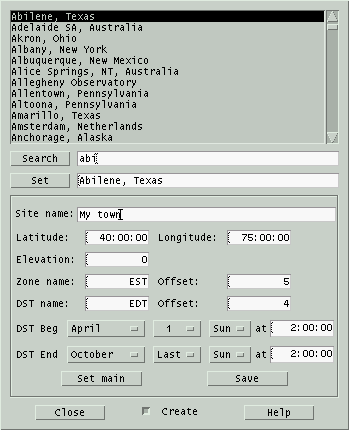 This
window allows you to search, load and add to a collection of predefined
sites.
The scrolled list at the top lists the complete set of currently
defined sites. Clicking on one will copy it to the Set text field. Double clicking on
one will also install it to the Main window, as will clicking on Set
or typing Enter over the select text field.
To search for a particular site, either scroll through the list or
type a glob pattern in the Search text field. Clicking on
Search or typing Enter in the search text field will scroll the list to
the
next site that matches the search text.
Creating new sites.
Clicking Create expands the
dialog to add fields for creating new sites. Fill in the fields then
click Set main to test the
entry and Save to add it to
the
collection on disk.
File format:
XEphem stores sites in the file named xephem_sites. One may
reside in
either or both the Shared and Private
directories. The Sites window always checks both.
Each line in the file consists of 5 fields, each separated by a
semicolon (;):
Name ; Latitude ; Longitude ;
Elevation ; Timezone
where:
Name
is the City, State, Country or other designation, up to 40
characters.
Latitude
is DD MM SS, followed by an N or S to indicate north or south of the
equator. Each portion is separated by a blank.
Longitude
is in DDD MM SS, followed by an E or W to indicate east or west of
the prime meridian in Greenwich, England. Each portion is separated
by a blank.
Elevation
is in meters. If you do not know your elevation, put "-1.0".
Timezone
indicates the offset from GMT and details of savings time formatted
as follows:
std
offset dst [offset],start[/time],end[/time]
There are no spaces in the
specification. All fields except the initial
std
string are optional. It specifies the name of the standard time zone
and must
be three or more alphabetic characters.
The
offset
string indicates the value added to the local time to arrive at
Coordinated
Universal Time. The offset has the format
hh[:mm[:ss]].
The minutes (mm) and seconds (ss) are optional. If preceded by a minus
(-) the timezone shall be east of the Prime Meridian;
otherwise, it shall be west (which may be indicated by an optional
preceding
plus (+)).
The dst string and second offset specify the name and
difference between the daylight savings time zone and the standard
time zone. If the offset is omitted, it defaults to one hour ahead
of standard time.
The start field specifies when
daylight savings time goes into effect and the end field specifies when the
change is made back to standard time. These fields have the
format Mm.w.d which
specifies day d (0 <= d <= 6) of week w (1 <= w <= 5) in
month m (1 <= m <= 12). Day 0 is Sunday. Week 1 is the
first week in which day d occurs and week 5 is the last week in
which day d occurs. If omitted, Savings time will begin the first
Sunday in April and end the last Sunday of October.
The time fields specify when, in
the local time currently in effect, the change to the other time
occurs. If omitted, the default is 2:00:00.
Here are a few examples:
Munich, Germany
; 48 14 0 N ; 11 57 0 E ; 523 ;
MET-1METDST,M3.5.0,M10.5.0
New York, New York ; 40 45 6 N
; 73 59 39 W ; 16.8 ; EST5EDT
Sydney, Australia ; 33 52
0 S ; 151 12 0 E ; 7.6 ; EST-10EST,M10.5.0,M3.5.0
Lines in the file which do not conform to this structure are ignored.
2.3.2 Time
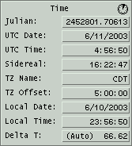
- Julian Number of days
since noon 4713 BC to about 1-second accuracy. Used as a uniform
time scale.
- UTC Date The UTC date.
UTC is Universal Coordinated Time, the basis,after adjusting for
time zones, for the official "civil" time people set their clocks
to. Every year or so it is adjusted via a leap second so it stays
within 0.9 seconds of UT1, which varies continuously with the slight
irregularities of the rotational motion of the Earth.
- Sidereal The apparent
sidereal time for the current time and location. Equals the apparent
RA at the local meridian.
- TZ Name The local time
zone name. The name may be fixed to any short mnemonic. Setting this
manually turns off automatic computation of Daylight Savings Time.
When auto DST is on, a small clock is shown at the top right of the
Time section.
- TZ Offset Hours local
time is behind UTC, i.e., positive west or negative east of
Greenwich. Setting this manually turns off automatic computation of
Daylight Savings Time.
- Local Date The local
date. This is UTC date minus the value of TZ Offset.
- Local Time The local
time. This is UTC time minus the value of TZ Offset.
- Delta T TT-UT1. Number
of seconds by which Terrestrial Time (aka Ephemeris Time prior to
1982) leads UT1. TT is generally of interest when calculating the
positions of solar system objects because it is a continuous time
scale unaffected by the Earth's rotational vagaries. The term
Terrestrial means it is adjusted for the relativistic effects of
gravity and the Earth's revolution around the Sun. UT1 or UTC is of
interest when relating those positions to the horizon to produce
altitudes and azimuths. The value may be computed automatically
based on the current time or entered manually (in which case it will
not change). The algorithm uses values tabulated in the Astronomical
Almanac for years 1620.0 through 1998.0, and is accurate to within a
few seconds over that interval. Dates prior are from Stephenson and
Morrison or K. M. Borkowski, with an estimated error of 15 minutes at
1500 B.C. A linear extrapolation formula predicts future values.
2.3.3 Calendar
 The
calendar on the right of the Main window is based on local time or
UTC, depending upon the Time Zone preference. Clicking a date button
will set the date. Clicking dates before the first of the month and
after the last of the month will also change month or year as
necessary. The month and year buttons pop up menus that allow these to
be changed as well. At the bottom the Now
button sets the time and date to the computer clock. The arrow buttons
move backwards or forwards by one day or week. Except for Now, using
the
calendar does not change the current time, just the date.
The
calendar on the right of the Main window is based on local time or
UTC, depending upon the Time Zone preference. Clicking a date button
will set the date. Clicking dates before the first of the month and
after the last of the month will also change month or year as
necessary. The month and year buttons pop up menus that allow these to
be changed as well. At the bottom the Now
button sets the time and date to the computer clock. The arrow buttons
move backwards or forwards by one day or week. Except for Now, using
the
calendar does not change the current time, just the date.
New and Full Moons are marked on the day on which they occur in
the selected time zone.
2.3.4 Night

- Sun icon When the sun
is above the local horizon a small sun symbol is drawn in the upper
left corner of this section.
- Moon icon When the moon
is
above the local horizon a small symbol is drawn in the upper right
corner of this section depicting the approximate phase of the moon.
The brighter of the foreground and background colors is used to draw
the portion in sun light.
- Sun Dip The number of
degrees the Sun is below the horizon that we wish to call twilight.
Common definitions include:
- Civil = Sun 6 degrees down (can just tell whether headlights
are on),
- Nautical = Sun is 12 degrees down (sky and ocean merge),
- Astronomical = Sun is 18 degrees down (dark as it gets).
The Sun Dip setting applies to the
following fields:
- Dawn Local or UTC time
when the Sun center is Sun dip degrees below the horizon before sunrise
today.
- Dusk Local or UTC time
when the Sun center is Sun dip degrees below the horizon after sunset
today.
- Length Length of
astronomical night, i.e., Dawn - Dusk. If this and the display for
Dawn and Dusk are shown as "-----", it means the Sun is either
always below or always above Sun dip degrees below the horizon on
this particular day.
N.B. These three fields always apply to the local current day.
Difficulties arise when these events occur within 4 minutes of local
midnight with respect to the time zone defined by TZ Offset. In
particular, if these fields are not behaving as you would expect,
check that the TZ Offset is set commensurate with the current
Longitude.
- LST@0 Local Sidereal
Time at next local Midnight, as per the time zone.
2.3.5 Looping

- -1 +1 These are shortcuts to go
backwards or forwards by one Step. Can also be performed by typing
Control-b and Control-f from any window.
- RT Clicking this
button will synchronize XEphem to the computer clock and commence
Updating every Pause seconds. If Pause is 0 when this is started, it
will be set to 10 seconds. This can be the initial mode for XEphem by
saving the AutoRT Preference.
RT is really just a shortcut for:
- clicking Now under the calendar
- setting Step to Clock
- setting N Steps to something large and then
- clicking Update.
- 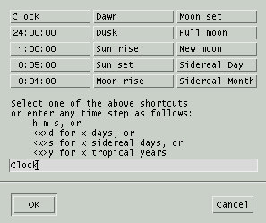Step The interval by
which, or event to which, time is changed each loop. Fixed intervals
are
specified in hours, minutes, seconds, days and years or time may be set
to advance to an event such as the next sun rise, dawn or full moon.
- N Steps The number of
times the display will be updated (time advanced by Step each step)
automatically. When Update is clicked, this number counts down until it
reaches zero then is reset to one.
- Pause Number of seconds
to
pause between screen Updates. This is used mainly to set up for
free-running unattended operation. Pausing is not done when plotting,listing or solving are active. When looping, time is
maintained at a whole multiple of pause length.
When looping is in effect, the label on the bottom button changes to Stop. When the number of steps
goes to 0 or the Stop button is clicked the looping stops and the
button label changes back to Update.
Note that when looping with Pause set to 0, most graphics and numeric
field data are not drawn in order to speed up the computations. These
values are always updated internally, however. and may safely be used
for plotting,listing and solving. This is true even if the window that
displays the information is closed.
3.0 File menu
3.1 System log
 This window contains additional
information from XEphem. Whenever an entry is written the computer may
beep, depending on the setting of the Log
bell Preference. The
contents of all Alert windows are also written here. Scroll bars to the
right and below allow panning through the log.
This window contains additional
information from XEphem. Whenever an entry is written the computer may
beep, depending on the setting of the Log
bell Preference. The
contents of all Alert windows are also written here. Scroll bars to the
right and below allow panning through the log.
Erase
Permanently discards all log entries.
Close
Closes the log window but has no
effect
on its contents or ability to capture further information.
3.2 Gallery
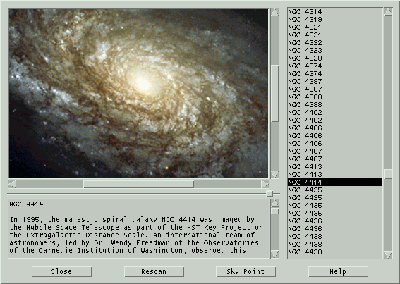This window is a portal to high quality
color images.
The Gallery window is broken into three sections. Down the right side
is a scrolled list of the
available images. Images are displayed in the upper left, captions in
the lower left. All sections scroll
to accommodate large areas. A sash between the upper and lower
sections on the left allow you to control the proportion of vertical
space used by each.
Controls across the bottom:
Close
Close the Gallery window.
Rescan
Reinitialize the list. This also occurs each time the
Gallery window is opened.
Sky Point
If the current XEphem database contains an object whose
name matches the Gallery object currently being displayed, this button
will
be active and clicking this button will center the object in the Sky
View.
3.2.1 File format
The Gallery database index is stored in one or more files with the
suffix .gly. The index files and the image files to which they
refer reside in a directory named gallery which in turn must
reside within either the Shared or Private
directories. All index files found are combined and sorted by name into
the scrolled list.
The index file is in XML format. The entire collection is within one
outer-most element named gallery. In turn it contains one
element named image for each
Gallery image file.
In turn it contains one or more elements named name, one
element named file and one element named description.
The file name is with respect to the directory in which the .gly file
resides. When XEphem reads the description contents, it replaces
isolated newlines with blanks so that word wrapping is left up to the
scrolled text window. Please refer to the following example.
<gallery>
<image>
<name>
NGC 4414
</name>
<file>
1999-25-a-web_print.jpg
</file>
<description>
In 1995, the majestic spiral galaxy NGC 4414 was imaged by the Hubble
Space Telescope as part of the HST Key Project on the Extragalactic
Distance Scale. An international team of astronomers, led by Dr. Wendy
Freedman of the Observatories of the Carnegie Institution of Washington,
observed this galaxy on 13 different occasions over the course of
two months.
Image Credit: Hubble Heritage Team (AURA/STScI/NASA)
</description>
</image>
</gallery>
3.3 Network
Setup
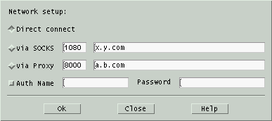This
window controls how XEphem tries to
connect to
the Internet. One of the following three choices must be turned on for
Internet access to be available.
- Direct connect This
choice
just means to use the direct DNS/IP TCP/IP sockets as necessary. Use
this one unless you are behind a firewall.
- via Proxy This choice
attempts to access the Internet via a Proxy. Type the port address
and the host name of the proxy in the fields provided.
- via SOCKS This choice
attempts to access the Internet via a version 4 SOCKS server. Type
the port address and the host name of the server in the fields
provided. These values can be initialized using the environment
variables SOCKS_PORT and SOCKS_NS.
If your Proxy or SOCKS firewall require Authentication, turn on the Auth option and enter name and
password in the fields provided. Note that only the Name field may be
Saved.
3.4 External Input
 XEphem
can read a file (or fifo)
containing sets of
time, latitude and longitude values and automatically install these
values sequentially unattended. Enter the name of the file in the
window
and press OK. To pause between updates, set the desired delay in the
Pause field of the Main window. All features of XEphem, such as plotting and listing are
available while this feature is running.
XEphem
can read a file (or fifo)
containing sets of
time, latitude and longitude values and automatically install these
values sequentially unattended. Enter the name of the file in the
window
and press OK. To pause between updates, set the desired delay in the
Pause field of the Main window. All features of XEphem, such as plotting and listing are
available while this feature is running.
The format of each line of the file is as follows:
JD
Lat Long
where
JD = Julian Date
Lat = Latitude, radians, +north
Long = Longitude, radians, +west
The fields are separated by one or more blanks or tabs. All lines not
having exactly three floating point values are ignored and may be used
for comments, etc.
4.0 View menu
4.1 Data Table
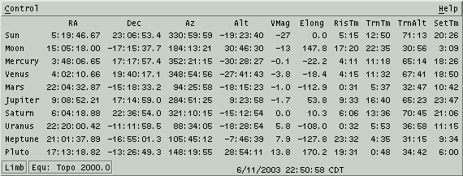
This is a table of information about each of the current
Favorites. Each data item occupies one
column in the table and each object occupies one row.
The Control pulldown menu contains the following options:
- Setup... This button
brings up a configure window to specify the table rows and columns
as desired.
- List... This button
allows the current data table to be saved in a text file.
- X Select
This button puts the current contents of the data table into the X11
PRIMARY selection buffer. You can then typically paste it into a file
using the middle mouse button.
When any columns related to rising or setting are active a box at the
bottom will indicate whether the times refer to the center or the
upper limb of the object. Similarly, when either the RA or Dec columns
are active or any of the separation columns are active a box will be
present to indicate whether the separation is from a geocentric or
topocentric point of view. The box will also indicate the precession
epoch.
Any of the information in this table may be plotted,
listed or used in a solver
algorithm.
4.1.1 Data setup
 This
window lets you configure which columns will be in the Data Table.
When this window first comes up it will be set to indicate the state
of the Data Table. You may then manipulate the toggle buttons as
desired. To actually change the Data Table to a new configuration
select the Apply button. Ok does the same thing but also
closes this window. Close just
closes this window without making any permanent changes.
This
window lets you configure which columns will be in the Data Table.
When this window first comes up it will be set to indicate the state
of the Data Table. You may then manipulate the toggle buttons as
desired. To actually change the Data Table to a new configuration
select the Apply button. Ok does the same thing but also
closes this window. Close just
closes this window without making any permanent changes.
Entries are grouped into three sections for clarity. Column one
controls miscellaneous basic information. The descriptions of each
entry are as follows:
- Cns name of the
constellation in which the object appears.
- RA Right ascension: if
Main Equinox is set to EOD this is the apparent place, otherwise it
is the astrometric (mean) place. If Main Preference Equatorial is
Topocentric, it is further corrected for parallax.
- HA geocentric or
topocentric hour angle of object, computed as LST-RA precessed to
EOD. Positive angles are west of the meridian.
- GHA Greenwich Hour Angle,
hour angle of object when at 0° longitude.
- Dec Declination: if Main
Equinox is set to EOD this is the apparent place, otherwise it is
the astrometric (mean) place. If Main Preference Equatorial is
Topocentric, it is further corrected for parallax.
- Az topocentric degrees
eastward of true north for object.
- Alt topocentric degrees up from a
horizontal plane that is Elevation feet above sea level. Corrected
for refraction.
- Zenith topocentric Zenith
distance, degrees; corrected for refraction.
- PA parallactic angle, i.e., the angle as seen from the
target between zenith and NCP, measured positive westward of meridian.
- JD current UTC Julian date.
- HJD current heliocentric Julian date, i.e., JD adjusted to
time frame of Sun.
- Air Number of relative
air masses through which light from the object passes to the
topocentric observer. Computed by the method of Hardie, clamped to a
max at 3 degrees altitude.
- VMag visual magnitude
of object.
- PMRA Proper Motion in RA. Units are arcseconds/hour for a
Solar system object, degrees/minute for an Earth satellite and
milliarcseconds/year for all other types of objects.
- PMDec Proper Motoin in Declination. See PMRA for units.
- Size angular size of
object, in arc seconds. If not otherwise given, estimated for
objects in heliocentric orbits from the absolute magnitude parameter H
and by assuming an albedo of 0.10, for which H is 18 for an object
of 1.06 km diameter at 1.0 AU.
- Phase percent of visible
surface in sun light.
- Elong spherical angular
separation between the Sun and given object, calculated from the their
geocentric ecliptic coordinates. Note this is not just the
difference in ecliptic longitude, as is sometimes used. The sign is
positive for an evening object or negative for a morning object.
Thus, this field is not generally useful in searching for eclipses
because of the discontinuous sign change which occurs at
conjunction. For that, use the individual Separations fields.
- Spect Basic spectral
classification, if appropriate.
- HeLat true heliocentric
latitude, in degrees. For the Moon this is the geocentric latitude.
- HeLong true heliocentric
longitude, in degrees. Earth's is displayed on the Sun's line. For the
Moon this is the geocentric longitude.
- GLat galactic latitude,
in
degrees. Based on 32.93192° longitude of ascending node on
equator, 192.85948° RA J2000 of North Galactic Pole and
27.12825° Declination of pole.
- GLong galactic longitude,
in degrees. See GLat for definition.
- EcLat ecliptic latitude,
in degrees.
- EcLong ecliptic
longitude,
in degrees.
- EaDst true distance from
Earth center to object center, in AU, except distance to the Moon is
in miles or km depending on the Units preference.
- EaLght time for light
to travel from Earth to object. Format is hh:mm for all solar system
objects, except the Moon is in decimal seconds.
- SnDst true distance from
Sun center to object center, in AU.
- SnLght time for light
to travel from Sun to object. Format is hh:mm.
- Uranom Volume and Page
number of object's location in the original Uranometria, published
by Willmann-Bell, Inc.
- Uran2k Volume and Page
number of object's location in the new Uranometria 2000 edition.
- MillSA Volume and Page
number of object's location in the Millenium Star Atlas, published
by Sky Publishing Corp.
Section two controls information related to rising, transitting, and
setting. These are computed based on a refraction model that uses the
actual atmospheric and topocentric circumstances displayed on the Main
window. A text entry field is available in which you may specify a
number of decimal degrees the local horizon is above horizontal to
account for local effects.
The Limb option means that
the rise and set circumstances are based on the location of the upper
limb of the object. Center
means
that the circumstances are based on the location of the center of the
object.
Follows is a description of the Data Table columns controlled by the
second Data Selection section:
- RisTm and RisAz The local or UTC time and
azimuth when the upper limb (or center) of the object rises Today.
See note below for Earth satellites.
- TrnTm,
TrnAlt and
TrnAz
For all but Earth
satellites, this is the local or UTC time, altitude and azimuth when
the object crosses the meridian Today or, if no precession, when the
local sidereal time equals the object's right ascension.
If the object is an Earth satellite, this is the next time, highest
altitude and corresponding azimuth the satellite ever reaches above the local
horizon.
- SetTm and SetAz The local or UTC time and
azimuth when the upper limb (or center) of the object sets Today.
See note below for Earth satellites.
- HrsUp The number of hours
the object is up Today, that is, the difference between the set and
rise times. See note below for Earth satellites.
Note for time zones:
Rise and set circumstances are all
computed in local time. If the Zone Display preference (from the
Main menubar) is set to UTC then the times are converted to UTC.
Thus, when reference is made to Today it means the current local
date, not UTC date.
Note for Earth satellites:
Due to their generally rapid motions
Earth satellites often have many rising and setting events per day.
For this reason, the rise and set time for satellites are not
restrained to be during the current local day. Rather, for
satellites, XEphem displays the very next rising and setting events
that occur strictly later than the current time on the Main window,
provided they occur within 24 hours. This means that if the rise or
set time displayed is earlier than the current local time on the
Main window, it actually refers to the next day. This doesn't happen
for the other objects because their times are restricted to events
that happen just today. Similarly, we can only compute the HrsUp
column if the set time is strictly later than the rise time.
The upshot of all this is that the best way to really understand
the visibility of a satellite in your area is by graphing its
altitude over the desired time interval, or displaying all its
passes in the Night-at-a-Glance tool.
Various odd ball rising, transit and setting conditions are accounted
for and marked when they occur as in the following table. Note that in
the case of Earth satellites, "Today" really means within the next 24
hours.
| NoRise |
up some time but never rises, as such, Today. |
| NoSet |
up some time but never sets, as such, Today. |
| NoTran |
up some time but doesn't transit, as such, Today. |
| CirPol |
object is circumpolar (never goes below horizon) Today. |
| NvrUp |
object is never above the horizon Today. |
The third section in the Data Table setup window lists the current
set of Favorites. Any one may be selected
for which the angular separation between it and the object on that row
will be shown, in degrees.
The vantage point for the Separation values depends on the Equatorial preference in the Main window.
Geocentric ignores local conditions and gives the separation as seen
from Earth center. Topocentric uses the local conditions known to
XEphem. The choice is particularly critical for lunar occultations and
Earth satellites, of course, but the effect can be significant for the
planets as well. Geocentric separations between objects and the Sun
will match the magnitude of the elongation given in the Data Table
window.
Note:
Solving over a period that will
include
the rise or set times of either object is generally better performed
from the geocentric viewpoint. The refraction effect of the
topocentric viewpoint causes many arc minutes of rapid whiplash
displacement as the objects rise and set that overlays the smooth
celestial motion of the objects. This rapid position variation can
confuse the solver algorithms that expect fairly smooth functions.
4.2 Sun
 This
window provides a convenient tool to download, display and manage
images
from SOHO, the Solar
& Heliospheric Observatory. Use of this
extraordinary data is courtesy of the SOHO consortium. SOHO is a
project
of international cooperation between ESA and NASA.
This
window provides a convenient tool to download, display and manage
images
from SOHO, the Solar
& Heliospheric Observatory. Use of this
extraordinary data is courtesy of the SOHO consortium. SOHO is a
project
of international cooperation between ESA and NASA.
The SOHO data is pulled from the web site
http://sohowww.nascom.nasa.gov. The host name is defined in the XEphem
resource XEphem.SOHOhost. This may be changed if necessary by placing a
new value in the XEphem resource file.
4.2.1 Sun mouse
Moving the mouse over a loaded SOHO image will display the approximate
RA and Dec under the cursor. To do this XEphem makes an assumption
about
the scale and orientation of the image and defines the center of the
image as the position of the sun computed at the current XEphem time.
However, we have found SOHO images are not always oriented the same way
and we are not aware of a means to know the orientation
programmatically
so beware. The Carrington Rotation Number is shown in the lower right,
also as of the current XEphem time. If XEphem time differs from when
the
SOHO image was acquired the coordinates will still be correct but of
course the solar features shown in the image will not be correct.
Note that the coordinates do not take account of the different
perspective from the SOHO spacecraft. SOHO does not wander far from the
Sun-Earth line so images of the sun itself do not suffer much but this
effect is quite pronounced for Large Angle and Spectrometric
Coronagraph
images where the coordinates of background objects may be off by a
degree or more. Again, beware and check all coordinates independently
for important work.
4.2.2 Sun Control menu
Download latest
Clicking this entry will use your
Internet
connection to download the latest image from SOHO. The type and size of
the downloaded image are determined by the current selections in the
Type and Size menus.
This button is active only if the currently displayed image was
downloaded from the net and has not yet been saved. Clicking this
button will save the
downloaded SOHO image currently being displayed to the
Private XEphem directory in .gif
format.
The name of the file always begins with SOHO and includes the size,
date, time
and code name of the data product. For example, the following file name:
SOHO_512_20030802_0100_eit_171.gif
indicates the file is 512x512, was
acquired 2003 Aug 02 at 01:00 UTC and is from the 171Å channel of
the Extreme ultraviolet Imaging Telescope.
Filter Files by Type
Filter Files by Size
These options control whether the files
presented by the Files menu will be filtered by the current setting of
the Type menu or the Size menu, respectively. If a filter is not
selected then all files found will be listed.
Print...
This selection allows printing the
current SOHO view or saving it to a file. See
Printing.
User annotation...
This selection brings up a window
which
allows text and lines to be drawn over the SOHO image. See Annotation.
Add to movie...
This selection brings up a window to allow adding the
current Sun view to a movie loop.
4.2.3 Sun Files menu
This menu lists each of the SOHO image files currently found
in either the Private or Shared directories. Depending on the Filter
settings in the Control menu it will list all
images or just those that match the current setting of the Type or Size
menus.
Selecting a file from the list will display it in this window.
4.2.4 Sun Type menu
This menu lists each of the
eight data products provided by SOHO, one of which may be selected at a
time. The type selected here will be used when Downloading a file from
the Control menu, and may also limit the scope of files listed by the
Files menu if the Filter option is On in the Control menu. Follows is a
brief summary of the data product referenced by each menu entry.
Menu Entry
|
Instrument |
Notes |
| EIT 171 |
Extreme ultraviolet Imaging
Telescope |
Fe IX/X 171 Å, rendered
blue |
| EIT 195 |
|
Fe XII 195 Å, rendered
green |
| EIT 284 |
|
Fe XV 284 Å, rendered
yellow |
| EIT 304 |
|
He II 304 Å, rendered
orange |
| HMI Continuum |
Helioseismic and Magnetic Imager |
Visible Sun spots
|
| HMI Magnetogram |
|
Magnetic Sun spots
|
| LASCO C2 |
Large Angle and Spectrometric
Coronagraph |
Corona to 6 solar radii
|
| LASCO C3 |
|
Corona to 3 solar radii
|
4.2.5 Sun Size menu
This menu lists each of the three file sizes of images provided by
SOHO, one of which may be selected at a time. The size selected here
will be used when Downloading a file from the Control menu.
4.3 Moon
 This
is
an image of the Moon, shaded to indicate phase. It may be flipped and
scaled as desired and many Lunar features may be labeled, including
most spacecraft landing sites. During a Lunar eclipse, the edges of
the umbra and penumbra regions are drawn as solid and dashed lines,
respectively.
This
is
an image of the Moon, shaded to indicate phase. It may be flipped and
scaled as desired and many Lunar features may be labeled, including
most spacecraft landing sites. During a Lunar eclipse, the edges of
the umbra and penumbra regions are drawn as solid and dashed lines,
respectively.
The coordinate system on the Moon is such that latitude increases
towards the north and longitude increases towards the east. When facing
the Moon with the unaided eye, lunar east is towards the right. The
lunar image in XEphem is oriented with the polar axis vertical on the
screen. Letters are placed at each edge of the image to show lunar
coordinate directions.
The scrolling list on the right lists all features in the data base.
Clicking on a name will toggle its label on the map. The labels are
positioned so the center of the feature is at the lower left corner of
the label string. If the label is being turned on then the Labels View
option is also turned on if it is off.
Double-clicking will display the set of Lunar Orbiter images that
include the feature.
The Moon nods and rocks slightly as it moves through the sky. This
motion is called libration. A dot is placed on the circumference of
the image to indicate the limb position that is currently tilted most
towards Earth due to libration. The angular position of the dot is
placed accurately but the image rendering is not adjusted for
libration effects. Thus, the surface features over which the dot and
the terminator appear in the image are only approximate.
4.3.1 Moon mouse
Left button
Activating the left mouse button while
over the lunar image will display a small magnified 2x view of the
lunar surface under the cursor. The magnified image will track the
cursor as it is moved around the image. The latitude, longitude and
solar altitude of the location are displayed in the More info... window.
Right button
Activating the right mouse button while
over the lunar image will display a popup menu. It lists the name of
the
feature nearest to the cursor, the type, lunar coordinates and the
altitude of the sun as seen from that feature at the current XEphem
time. A toggle button Label
turns on or off a label on the map. A
pushbutton Set info table
loads the feature into the More info window and
will display window if it is not already up. If the Lunar Orbiter
database has been loaded, then a pushbutton Lunar Orbiter image displays the
image in which this feature lies, and also turns on the feature's label
on the main map for handy reference.
Activating the right mouse button
while
not over the lunar image but near a sky background object will pop
up a menu containing the name and magnitude of the object. There
will also be a button
Add to favorites
to assign the object to your
Favorites.
The two features may be activated together if desired by first pressing
the left button then the right button. This is helpful when trying to
locate a particular feature in the magnified view. Try to always
release the right button to dismiss the popup before releasing the
left button. If you release the left button first, the magnifying
glass will remain on the image. If you run into this, you can activate
the glass again and mop up the remains of the old glass.
4.3.2 Moon Control menu
Print...
This selection allows printing the
current Moon view or saving it to a file. See
Printing.
User annotation...
This selection brings up a window
which
allows text and lines to be drawn over the image. See
Annotation.
Add to movie...
This selection brings up a window to allow adding the
current Moon view to a movie loop.
Field Stars...
This selection activates the Field
Star
setup window. See
Field stars.
Set Earthshine...
This brings up a window containing a
scale which allows you to set how bright the Earthshine is in the
Moon image. The value ranges from 0, black, to 10, full sun light.
Full sun light is useful when you would like to peruse the Lunar
surface but would rather not change the XEphem date to a full Moon.
This value depends on the gamma of your display. A fine discussion
of display gamma and a test image with which you can determine the
gamma value of your own display may be found at the URL:
http://www.cs.cmu.edu/afs/cs.cmu.edu/user/rwb/www/gamma.html.
Movie Demo
This button sets up an automatic
display
movie
of the Moon. This is done by setting the N Steps entry in the Main
window to a large value; setting the Step to two hours if Sky
background is Off or to one minute if it is On; and starting XEphem
looping. The movie can be stopped by
selecting this option again or by selecting Stop from the Main window.
Forget labels
This button forgets the labels that
have been added either via the popup or the list to the right. Note
this is different than turning off labels in the View menu, which only
temporarily turns of the labels but does not forget.
Close
This closes the main Moon display and,
if open, the More info window. The image is never updated while it
is closed. however if any of the fields in the More Info window are
being used for
plotting,
listing
or
solving, they continue to be updated even
when
the window is closed.
4.3.3 Moon View menu
Spacecraft
If set and the Scale is at 6, then all
spacecraft landing sites are marked and labeled on the image. If the
Scale is less than 6, then only the Apollo sites are marked.
Labels
This sets whether additional
(non-spacecraft) Lunar features may be labeled on the image. Exactly
which ones are labeled is controlled from the scrolled list down the
right or with the popup menu activated by the right mouse button. Note
that turning labels off with this button does not forget which features
are labeled, it only turns them off. To actually forget the labels, use
the Undo labels button in the Control menu.
Sky background
This sets whether to show objects
within the current field of view that are in the XEphem database
memory or available from the Field Star facility. The size and
symbol used for the object matches that of the Sky view when set for
a minimum magnitude of 12. While this option is on, XEphem will
automatically retrieve field stars if the moon position changes on
the sky
{Pen}Umbra
This sets whether to show circles at
the edges of the umbra and penumbra during a Lunar eclipse.
Also, the current subearth location is marked with an X; the
subsolar point is marked with a small open circle; and the
anti-subsolar point is marked with a small filled circle.
Flip T/B
Flip L/R
These set whether the image is flipped
vertically or horizontally, respectively.
Grid
This sets whether a coordinate grid is
drawn over the image. Each line is spaced at an interval of 15
degrees.
4.3.3.1 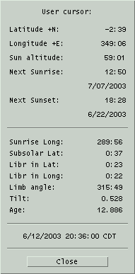More info...
This brings up a separate window with
additional information. The top portion of the window reports the
location of the cursor as it is moved over the image, if the left
button is pressed. It also shows the altitude of the Sun and the
times when the Sun will next rise and set at that location. The times
are in accord with the Time zone
Preferences
in the Main window.
The lower portion of the window shows the lunar longitude of sunrise,
the lunar latitude of the subsolar point, and libration information.
The longitude of the subsolar point is at +90 from the sunrise
longitude, and the longitude of the anti-subsolar point is at -90.
The libration in longitude is positive towards lunar east; latitude
is positive towards lunar north. The Limb angle is zero at lunar
north and increases towards lunar west. The Tilt is the number of
degrees the Moon is tilted towards Earth around an axis defined by
the librations in latitude and longitude. The limb location that is
tilted most towards Earth is indicated on the image by a small dot.
Any of the values in the lower portion may be
plotted,
listed or used in a
solver
algorithm. The values are always current when used in this way, even
if the main Moon view is closed. For faster looping, close the main
Moon display to prevent it from being redrawn each time.
4.3.4 Scale menu
This pulldown menu presents a list of factors by which the lunar
image may be scaled. The image is presented in a scrolled window for
panning if it is larger than the overall window.
4.3.5 Lunar
Orbiter IV
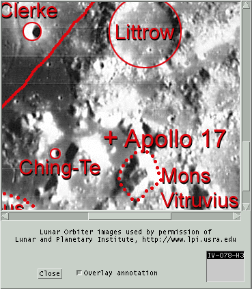XEphem optionally supports displaying images
taken by Lunar
Orbiter IV in 1967. These images and the features database are used by
permission of
the Lunar and Planetary Institute.
Lunar Orbiter images are located in the lo directory within the Shared
directory. When these images are installed they are accessible from the
Moon view in two ways. One is to double-click an entry in the features
list down the right of the Moon view window. The other is to use the
Lunar Orbiter images button in the popup over the image in the main
Moon window. These functions are automatically disabled if XEphem
can not fund the images on startup.
The LO images are displayed in their own window. The images are large
so panning controls are available on the bottom and right edges. The
annotation
overlay may be toggled on and off with the given toggle button. A
scrolled list in the lower right corner allows choosing one from among
all the LO images which contain the current feature.
The LO images are not perfectly aligned NSEW, some are canted as much
as 30 degrees from vertical. The images are shown exactly as they were
taken. No attempt is made to register the images with the main
XEphem moon view, nor to perform flipping or scaling. The ability to
click to see the next adjacent image would have been nice but certain
technical difficulties made the results unsatisfactory and was left
out.
The image scale is approximately 300m/pixel.
4.4 Earth
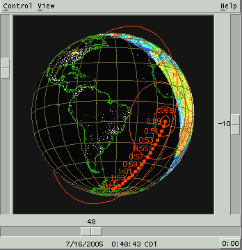This
view displays a view of the Earth with either schematic continent
outlines or a real color image. The night side may be dark or include
nightside lights. The projection may be spherical or
cylindrical "Mission Control" style. The controls available from the
menu bar across the top control the view, the display of additional
information and
the ability to overlay the ground positions of all Favorite objects.
The scales along the bottom and right edges display, and may be used
to control, the center longitude and latitude location. The button in
the lower right corner sets the latitude to exactly zero. The scale
along the left edge sets the zoom.
Any or all of the current Favorites may be
displayed on the map. Objects with defined date ranges are only shown
when they are valid. The location defined in the Main window is marked
on the map
with a plus (+).
If a solar eclipse is occurring on the Earth a small X will mark the
location of central totality. Try July 11, 1991 around 18:00 UT or May
10, 1994 around 16:00 UT.
All computations for Earth satellites are based on the NORAD SGP4/SDP4
code. This code produces the exact same output as their test
collection.
This means, however, that it is not integrated particularly tightly
with
the rest of XEphem. For example, its computations use a different model
for Earth flattening and for refraction. These and other differences
can
lead to modest inconsistencies.
4.4.1 Earth mouse
As long as the cursor is over the Earth, the four corners of the View
will display the following information about the position beneath the
cursor:
Upper left
|
Latitude and longitude
|
Upper right
|
Great circle bearing and distance
|
Lower left
|
Local Mean Time
|
Lower right
|
Local Sidereal Time
|
Left button
While the left button is depressed and located over the
Earth map, the great circle from the Main site location through the
cursor location will be drawn.
Middle button
If View » Live dragging
is On then while the middle button is depressed and located over the
Earth map, the cursor is changed to a fleur pattern. Moving the
mouse left and right is like sliding the scale at the bottom; moving
it up and down is like sliding the scale at the right. This provides
a simple method to pan the display.
Right button
If the right mouse button is clicked
while over the Earth, a popup menu appears with information related
to the location under the cursor.
If the location is near a Site,
information is presented with respect to the exact location of that
site.
If the location is not near a Site,
the
information is with respect to the latitude and longitude of the
location under the cursor.
If the location is near the current or
a trailed location of one of the displayed objects either on the
surface or in orbit, the information
is with respect to the location of that object at the time of the
trail mark.
There will also be a button labeled
Point that will center the orientation on the cursor location.
4.4.2 Earth Control menu
Print...
This selection allows printing the
current Earth view or saving it as a Postscript file. See
Printing.
User annotation...
This selection brings up a window
which
allows text and lines to be drawn over the image. See
Annotation.
Add to movie...
This selection brings up a window to allow adding the
current Earth view to a movie loop.
Objects...
This brings up a table for controlling
how each current Favorite object is displayed.
Set Main
This sets the Latitude and Longitude
of
the Main window to that of the current position of the Earth view.
This also causes all other information and views to be updated to
reflect the new location.
Set From Main
This sets the Earth view position to
that of the Main window
Movie Demo
This sets up an automatic display
movie
of the Earth. This is done by setting the N Steps entry in the Main
window to a large value; setting the Step to 5 minutes; and starting
XEphem
looping. The movie can be stopped
by
selecting this option again or by selecting Stop from the Main
window.
Close
This causes both the Earth view and
the
extra statistics window to be closed.
4.4.3 Earth View menu
Cylindrical graphic
Cylindrical image
Displays the entire Earth surface
projected onto a cylinder. Primary advantage is the entire surface
is visible at once. Particularly good for plotting satellite ground
tracks. Major disadvantage is distortion near the poles. The
preferred width-to-height ratio for the cylindrical projection is
3.14:1. This ratio is enforced each time this projection is selected by
changing the width and maintaining the current window height, subject
to
remaining fully on screen.
Spherical graphic
Spherical image
Displays the Earth as it would really
appear from space. The primary advantage is the sense of reality and
lack of distortion. Either projection may be shown using a simple
graphical technique which draws only the outlines of the major land
features, or using a full color image, courtesy NASA's project Blue
Marble. The former is fast, the latter looks much better. The spherical
projection resizes to become a square by setting the width equal to the
height.
Weather map
Displays a global montage of satellite
cloud imagery, ice, sea and land temperatures, courtesy Space
Science and Engineering Center at the University of Wisconsin. The
image is a gif file retrieved from
http://www.ssec.wisc.edu/data/comp/latest_cmoll.gif.
It is updated once every six hours. All other graphical features of
the Earth view remain available as overlays to this image. Primary
advantage is ease in determining whether weather will effect
visibility of a satellite pass. If you have trouble accessing the
image directly from XEphem, the program will also use the file
/tmp/latest_cmoll.gif if it exists. The weather map forces itself to
become 640x480 pixels.
After any projection is selected, the window size may be directly
manipulated manually from then on as desired.
Reload map
This button is only present when the
Weather map projection is turned on. Pressing it will cause a fresh
weather map to be retrieved.
Grid
This toggles showing grids lines every
15 degrees in latitude and longitude.
Sites
This toggles whether a tiny square
will
be drawn at each location found in the currently loaded Sites file
Sunlight
This toggles whether the portion of
the
Earth's surface currently in sun light is highlighted in some
fashion. When using the Weather map or either Image projection, the
map is darkened where the Sun is currently down, and only continent
outlines are shown.
Main marker
This toggles whether a small marker is
drawn at the location currently showing in the XEphem Main window.
Nightside lights
This toggles whether the dark side of the view will include
lights visible from space. This option is only available using either
of the Image methods (not Graphics). Image is courtesy NASA.
Live dragging:
This toggles whether the display
graphics are updated immediately as the sliders are moved, or
whether graphics are only drawn after the sliders are released.
Also, if this option is on, moving the mouse while holding down the
middle button will cause the display to rotate about the pole when
moved left-and-right or about a horizontal line centered on the window
when moved up-and-down. If your system is sufficiently fast, the
effect in quite dramatic.
Inertial frame:
When On, the display point of view
remains fixed in space; when Off, it remains over a fixed location on
the earth's surface.
4.4.3.1 Objects dialog
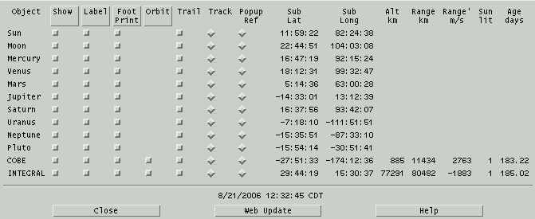
This dialog shows one row for each
active
Favorite. The columns are as follows:
Object
This is the name of the Object.
Show
Determines whether the object is shown
on the Earth map at all. If On, the object subearth location is
shown as a cross × surrounded by the loci of points at
which the object is 60, 30 and 0 (on the horizon) degrees
altitude. Clicking on the title toggles the individual buttons for all
objects.
Label
Determines whether the name of the
object is drawn somewhat above its cross. Clicking on the title toggles
the individual buttons for all objects.
Foot Print
The footprint is a set of three
contours
indicating the locations from which the object appears at 0, 30 and 60
degrees above the horizon. This toggle chooses whether to show these
contours or just the sub-earth postion. Clicking on the title toggles
the individual buttons for all objects.
Orbit
Determines whether to draw the orbit
of an earth satellite. The orbit is drawn starting from the current
location of the satellite as seen from space, irrespective of
subsequent earth rotation. Clicking on the title toggles the individual
buttons for all objects.
Trail
Brings up a window to define the time
duration and labeling of the ground track of the object. See
Trails After a trail has been created, this toggle
then allows it to be turned off and on without deleting it. The
trail really is deleted if it is Off and an Update occurs. After
being deleted, this toggle again brings up the window to define
a trail. Note that the trail may be redefined as many times as
desired directly from the Trail window, it does not need to be
deleted each time.
At most one button in this column may
be On. The object for which Tracking is on will remain centered
in the view each time Update occurs.
Popup ref
At most one button in this column may
be On. When right-clicking on the map with one of these buttons
on, the bearing and altitude from that location to this object
are displayed.
The remaining columns are informational only but be used for
plotted, listed or used
in a
solver algorithm. Sub lat and long are
displayed for all types of object, the others are displayed for
Earth satellites only.
Sub lat
Sub long
These columns display the latitude and
longitude at which the given object appears exactly overhead.
Alt
This is the distance from the mean
geode to the satellite.
Range
This is the line of site distance from
the current Main location to the satellite.
Range'
This is the rate of change of Range.
It
is useful for computing the doppler shift of a signal arriving
from the satellite.
Sun lit
This column is a 1 or 0 depending on
whether the satellite is in sun light. Note this is not whether the subearth point is
in
sun light.
Age Days
This is the age, in days, of the
elements used
to
compute the satellite orbit. Drag is included but elements older
than a few days will already show errors. Use the handy
Web Update button at the bottom to download the
latest elements.
4.5 Mars
 This
window displays an image of Mars as it currently appears from Earth
center. The orientation is
always parallel to the Martian rotation axis. The NSEW markings are
directions on the celestial sphere.
This
window displays an image of Mars as it currently appears from Earth
center. The orientation is
always parallel to the Martian rotation axis. The NSEW markings are
directions on the celestial sphere.
4.5.1 Mars mouse
Left Button
If the View » More Info
window is open, then moving the mouse around over the image while
holding the left button will display the Martian latitude and
longitude under the cursor location. A magnifying glass also appears
attached to the cursor.
Right Button
Pressing the right button while over
the planet will present a popup menu. Sliding down and releasing on
the Point button in the popup will reposition the view so the
current location is centered. Repointing will also disable the shadow
and
the subearth marker until the next Update from the Main window. If
over a feature, the popup will also contain its name, type, diameter
(or largest dimension) and location. If not over a feature, just the
cursor
location is shown.
4.5.2 Mars Control menu
Print...
This selection allows printing the
current Mars view or saving it as a Postscript file. See
Printing.
User annotation
This selection brings up a window
which
allows text and lines to be drawn over the image. See
Annotation
Add to movie...
This selection brings up a window to allow adding the
current Mars view to a movie loop.
Close
This selection will remove the Mars
view from the screen. If it is open it will also remove the More
Info window.
4.5.3 Mars View menu
Half size
This sets whether the map is drawn at full available
resolution or at one half resolution.
Flip
T/B
Flip L/R
This sets whether the image is flipped
vertically or horizontally, respectively.
Grid
This sets whether a coordinate grid is
drawn over the image. Each line is spaced at an interval of 15
degrees. Also, unless the image has been rotated, an X marks the
center of the image, that is, the subearth location.
4.5.3.1 Features...
This window displays categories of
surface features and a scrolled list of individual features sorted by
name. The features that are selected in the scrolled list are the ones
drawn on the map. Craters and single Mountains are drawn with a circle
to scale, landing sites with a small circle and other categories are
just labeled by name.
Click an entry in the scrolled list to turn it on or off individually.
Or select features by category by clicking the toggle buttons down the
left and possibly Toggle, All and None as
convenient, then clicking Apply. Ok does the same but
also closes this window.
As a special case if everything in the scrolled list is unselected and
one feature is selected, the map will be rotated to place the selected
feature in the center. This is handy for locating a feature by name.
Note that all features may be deselected easily by clicking None
then Apply.
4.5.3.2 More info...
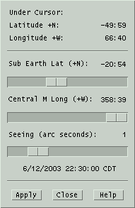 The top
portion of this window reports
the location
of the cursor as it is moved over the image, if the left button is
pressed.
Sub Earth Lat shows the Martian latitude which currently faces
the Earth. The value is computed
each time an Update is performed from the Main Menu. The scale below
allows you to set another value if desired as described below.
Central M Long shows the central meridian longitude, or simply
Martian longitude, which currently faces the Earth. The value is
computed
each time an Update is performed from the Main Menu. The scale below
allows you to set another value if desired as described below.
Seeing sets the size of your local atmospheric seeing disk in
arc seconds. The image will
be blurred to simulate the resolution under this condition.
For browsing purposes, the scale values may be changed as desired.
Adjust
any or all scales, then press
Apply to put the changes into
effect.
Forcing changes in this way will also temporarily disable the
shadow. At the time of the next Update, the correct current values
and the shadow will be reinstated. The Apply button is made
insensitive if the scale values are correct for the current time;
the button becomes sensitive only when the scales have been moved
manually.
The values in the lower portion may be
plotted, listed or used in a
solver
algorithm. The values are always current when used in this way, even
if the main Mars view is closed. For faster looping, close the main
Mars display to prevent it from being redrawn each time.
4.5.3.3 Moon view...
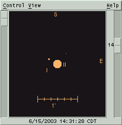
This is a schematic view of Mars and its moons at the indicated date
and
time. In addition, background sky objects may also be displayed.
The scale at the left controls relative magnification.
The scale at the right controls the dimmest magnitude which will be
displayed. The values range from 20 at the top and 0 at the bottom.
Objects dimmer than the value specified are not shown, except that
Mars is always shown.
Nominal celestial directions are indicated at the top and right edges.
Moons are displayed only if they are geometrically visible. Use the
top view to see whether they are also in sun light.
Mars Moons mouse
The mouse may be used to identify any
object in the Mars view. Position the cursor near the object of
interest and select the right mouse button. A popup menu will appear
with the objects name, current location and magnitude.
Mars Moons Control
menu
Print...
This selection allows you to print the
current view. See
Print.
User annotation...
This selection lets you place text and
lines on the current view. See
Annotation.
Add to movie...
This selection brings up a window to allow adding the
current Martian moon view to a movie
loop.
Field Stars...
This selection activates the Field
Star
setup window. See
Field stars.
Telescope GoTo
This option, when available, causes
the location of
Mars
to be sent to a telescope control process. This mechanism is
the same as that provided by the Telescope facility within the Sky
view. See
Telescope
Movie Demo
This option will set up the Main
window
time step controls for a 15 minute step size and start a
loop which dramatically displays the motions
of the moons as they orbit Mars. This selection automatically disables
the
View » Sky Background
selection to insure reasonable speed. Push the button again to stop
the movie.
Close
This removes the Mars moon display,
and
the additional information window if present, from the screen.
Mars Moons View menu
Top view
Selects whether to also display
another
window, looking down on the Mars system from above the N celestial
pole. This window will tend to remain aligned above the main view
when either is resized. Moons are displayed only if they are in sun
light.
Sky background
Selects whether to also show objects
within the current field of view that are in the XEphem database
memory or available from the
Field stars
facility. The size of the object is determined by the limiting
magnitude as specified by the scale at the right. Objects are drawn
using the same symbols as used by the Sky view. While this option is
on,
XEphem will continue to retrieve field stars as required.
Bright moons
If this option is in effect, then the
diameter of all moons will be increased by 3 pixels. This option
also insures that even those moons which are dimmer than the
limiting magnitude, as specified by the scale to the right, will be
drawn with a circle of diameter 3 pixels.
Tags
Whether to show the Roman numeral
designation beneath each moon and a 1 arc-minute scale calibration
line.
Flip T/B
Flip L/R
These allow the scene to be flipped
vertically and horizontally, respectively.
More info...
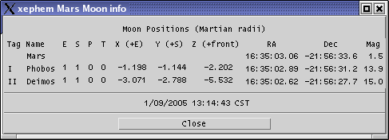This
button brings up a separate
window which
contains quantitative information about Mars's moons. All values may
be used in
plotting,
listing
and
solving.
The E and S columns are 1 if the moon is geometrically visible from the
Earth and
Sun, respectively. The P column is 1 if the shadow of the moon
currently falls on the planet. The T column is 1 if the moon is
currently transiting the planet. Otherwise the columns are 0.
The locations of the moons are given in two coordinate systems. The
first three columns are the displacements of the moons in Mars radii
with respect to the equatorial plane. The next two columns give the
RA and Dec location of the moons in the current epoch (as specified
on the Main window).
4.6 Jupiter
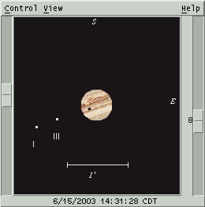
This is a view of Jupiter and its Galilean moons at the indicated date
and time. In addition, background sky objects may also be displayed.
The scale at the left controls relative magnification.
The scale at the right controls the dimmest magnitude which will be
displayed. Jupiter is always displayed. The values range from 20 at
the top and 0 at the bottom. Objects dimmer than the value specified
are not shown.
Equatorial directions are indicated at the top and right edges.
Moons are displayed only if they are geometrically visible from Earth.
Use the top view to see whether they are also in sun light.
The default longitude of the GRS is set to 77 degrees, where it was
in late May of 2002. This may be changed interactively in the More
Info window.
4.6.1 Jupiter mouse
The mouse may be used to identify any
object in the Jupiter view. Position the cursor near the object of
interest and select the right mouse button. A popup menu will appear
with the objects name, current location and magnitude.
4.6.2 Jupiter Control menu
Print...
This selection allows printing the
current Jupiter view or saving it to a file. See
Printing.
User annotation...
This selection brings up a window
which
allows text and lines to be drawn over the image. See
Annotation.
Add to movie...
This selection brings up a window to allow adding the
current Jupiter moon view to a movie
loop.
Field Stars...
This selection activates the Field
Star
setup window. See
Field stars.
Telescope GoTo
This option, when available, causes
the location of
Jupiter to be sent to a telescope control process. This mechanism is
the same as that provided by the Telescope facility within the Sky
view. See
Telescope
Movie Demo
This option will set up the time step
controls in the Main window for a 15 minute step size and start a
loop which dramatically displays the motions of the moons as they
orbit Jupiter. This selection automatically disables the View » Sky Background
selection to insure reasonable speed. Push the button again to stop
the movie.
Close
This removes the Jupiter display, and
the additional information window if present, from the screen.
4.6.3 Jupiter View menu
Top view
Selects whether to display another
window above the front view with a vantage point over the pole. This
window will try to remain aligned above the main Jupiter front view
when either is resized. Moons are displayed only if they are in sun
light.
Sky background
Selects whether to also show objects
within the current field of view that are in the XEphem database
memory or available from the
Field stars
facility. The size of the object is determined by the limiting
magnitude as specified by the scale at the right. Objects are drawn
using the same symbols as used by the Sky view. While this option is
on,
XEphem will continue to retrieve field stars as required.
Bright moons
If this option is in effect, then the
diameter of all moons will be increased by 3 pixels. This option
also insures that even those moons which are dimmer than the
limiting magnitude, as specified by the scale to the right, will be
drawn with a circle of diameter 3 pixels.
Tags
Selects whether to show the Roman
numeral designation beneath each moon and a 1 arc-minute scale
calibration line.
Flip T/B
Flip L/R
These allow the scene to be flipped
vertically and horizontally, respectively.
4.6.3.1 More info...
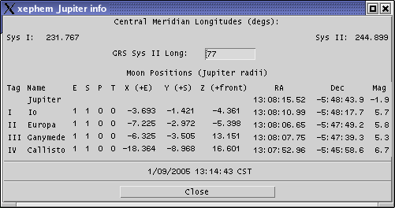This
button brings up a separate window which contains quantitative
information about Jupiter's moons and central meridian longitude.
All values may be used in
plotting,
listing and
solving.
The E and S columns are 1 if the moon is geometrically visible from the
Earth and
Sun, respectively. The P column is 1 if the shadow of the moon
currently falls on the planet. The T column is 1 if the moon is
currently transiting the planet. Otherwise the columns are 0.
The locations of the moons are given in two coordinate systems. The
first three columns are the displacements of the moons in Jupiter
radii with respect to the celestial plane. The next two columns give
the RA and Dec location of the moons in the current equinox (as
specified on the Main window).
Value of the System II longitude of the Great Red Spot is displayed.
The value may be changed according to current information. Pressing
Enter will update the Jupiter display with the new value.
4.7 Saturn
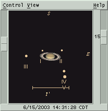
This is a schematic view of Saturn, its rings and moons at the
indicated
date and time. In addition, background sky objects may also be
displayed.
The scale at the left controls relative magnification.
The scale at the right controls the dimmest magnitude which will be
displayed. Saturn and its rings are always displayed. The values
range from 20 at the top and 0 at the bottom. Objects dimmer than
the value specified are not shown.
Nominal celestial directions are indicated at the top and right edges.
Moons are displayed only if they are geometrically visible. Use the
top view to see whether they are also in sun light.
4.7.1 Saturn mouse
The mouse may be used to identify any
object in the Saturn view. Position the cursor near the object of
interest and select the right mouse button. A popup menu will appear
with the objects name, current location and magnitude.
4.7.2 Saturn Control menu
Print...
This selection allows printing the
current Saturn view or saving it to a file. See
Printing.
User annotation...
This selection brings up a window
which
allows text and lines to be drawn over the image. See
Annotation.
Add to movie...
This selection brings up a window to allow adding the
current Saturn moon view to a movie loop.
Field Stars...
This selection activates the Field
Star
setup window. See
Field stars.
Telescope GoTo
This option, when available, causes
the location of
Saturn to be sent to a telescope control process. This mechanism is
the same as that provided by the Telescope facility within the Sky
view. See
Telescope
Movie Demo
This option will set up the time step
controls in the Main window for a 15 minute step size and start a
loop which dramatically displays the motions
of the moons as they orbit Saturn. This selection automatically
disables
the
View » Sky Background
selection to insure reasonable speed. Push the button again to stop
the movie.
Close
This removes the Saturn display, and
the additional information window if present, from the screen.
4.7.3 Saturn View menu
Top view
Selects whether to also display
another
window, looking down on the Saturnian system from above the
celestial N pole. This window will tend to remain aligned above the
main front view when either is resized. Moons are displayed only if
they are in sun light.
Sky background
Selects whether to also show objects
within the current field of view that are in the XEphem database
memory or available from the
Field stars
facility. The size of the object is determined by the limiting
magnitude as specified by the scale at the right. Objects are drawn
using the same symbols as used by the Sky view. While this option is
on,
XEphem will continue to retrieve field stars as required.
Bright moons
If this option is in effect, then the
diameter of all moons will be increased by 3 pixels. This option
also insures that even those moons which are dimmer than the
limiting magnitude, as specified by the scale to the right, will be
drawn with a circle of diameter 3 pixels.
Tags
Selects whether to show the Roman
numeral designation beneath each moon and a 1 arc-minute scale
calibration line.
Flip T/B
Flip L/R
These allow the scene to be flipped
vertically and horizontally, respectively.
4.7.3.1 More info...

This button
brings up a separate window
which
contains quantitative information about Saturn's moons and its
rings. All values may be used in
plotting,
listing and
solving.
The E and S columns are 1 if the moon is geometrically visible from the
Earth and
Sun, respectively. The P column is 1 if the shadow of the moon
currently falls on the planet. The T column is 1 if the moon is
currently transiting the planet. Otherwise the columns are 0.
The ring tilt is displayed as the angle above or below the line of
sight to Saturn from the Sun and the Earth. A positive value means
the front of the rings are tilted southward.
The locations of the moons are given in two coordinate systems. The
first three columns are the displacements of the moons in Saturn
radii with respect to the celestial plane. The next two columns give
the RA and Dec location of the moons in the current equinox (as
specified on the Main window).
4.8 Uranus

This is a schematic view of Uranus and its moons at the indicated date
and time. In addition, background sky objects may also be displayed.
The scale at the left controls relative magnification.
The scale at the right controls the dimmest magnitude which will be
displayed. Uranus is always displayed. The values range from 20 at
the top and 0 at the bottom. Objects dimmer than the value specified
are not shown.
Nominal celestial directions are indicated at the top and right edges.
Moons are displayed only if they are geometrically visible. Use the
top view to see whether they are also in sun light.
4.8.1 Uranus mouse
The mouse may be used to identify any
object in the Uranus view. Position the cursor near the object of
interest and select the right mouse button. A popup menu will appear
with the objects name, current location and magnitude.
4.8.2 Uranus Control menu
Print...
This selection allows printing the
current Uranus view or saving it to a file. See
Print.
User annotation...
This selection brings up a window
which
allows text and lines to be drawn over the image. See
Annotation.
Add to movie...
This selection brings up a window to allow adding the
current Uranus moon view to a movie loop.
Field Stars...
This selection activates the Field
Star
setup window. See
Field stars.
Telescope GoTo
This option, when available, causes
the location of
Uranus to be sent to a telescope control process. This mechanism is
the same as that provided by the Telescope facility within the Sky
view. See
Telescope
Movie Demo
This option will set up the time step
controls in the Main window for a 15 minute step size and start a
loop which dramatically displays the motions
of the moons as they orbit Uranus. This selection automatically
disables
the
View » Sky Background
selection to insure reasonable speed. Push the button again to stop
the movie.
Close
This removes the Saturn display, and
the additional information window if present, from the screen.
4.8.3 Uranus View menu
Top view
Selects whether to also display
another
window, looking down on the Uranus system from above the N celestial
pole. This window will tend to remain aligned above the main view
when either is resized. Moons are displayed only if they are in sun
light.
Sky background
Selects whether to also show objects
within the current field of view that are in the XEphem database
memory or available from the
Field stars
facility. The size of the object is determined by the limiting
magnitude as specified by the scale at the right. Objects are drawn
using the same symbols as used by the Sky view. While this option is
on,
XEphem will continue to retrieve field stars as required.
Bright moons
If this option is in effect, then the
diameter of all moons will be increased by 3 pixels. This option
also insures that even those moons which are dimmer than the
limiting magnitude, as specified by the scale to the right, will be
drawn with a circle of diameter 3 pixels.
Tags
Selects whether to show the Roman
numeral designation beneath each moon and a 1 arc-minute scale
calibration line.
Flip T/B
Flip L/R
These allow the scene to be flipped
vertically and horizontally, respectively.
4.8.3.1 More info...

This button
brings up a separate window
which
contains quantitative information about Uranus's moons. All values
may be used in
plotting,
listing
and
solving.
The E and S columns are 1 if the moon is geometrically visible from the
Earth and
Sun, respectively. The P column is 1 if the shadow of the moon
currently falls on the planet. The T column is 1 if the moon is
currently transiting the planet. Otherwise the columns are 0.
The locations of the moons are given in two coordinate systems. The
first three columns are the displacements of the moons in Uranus
radii with respect to the celestial plane. The next two columns give
the RA and Dec location of the moons in the current equinox (as
specified on the Main window).
4.9 Solar System
 This is a graphical representation of the
solar system. The Sun is
always at the center of the screen, marked with a small circle. The
set of objects displayed are the ones from the Favorites
list that are solar system objects. Objects with defined date ranges
are only shown at valid times.
This is a graphical representation of the
solar system. The Sun is
always at the center of the screen, marked with a small circle. The
set of objects displayed are the ones from the Favorites
list that are solar system objects. Objects with defined date ranges
are only shown at valid times.
4.9.1 Solar System Scales
The three scales at the edges control the position of the observer.
The vertical scale on the left controls the distance from the
Sun. You are closer as the scale is slid further up. You can also
control this with the keypad + and - keys. Using the key alone moves
by 2% little, with Shift moves by 10%.
The horizontal scale across the bottom of the view controls the
heliocentric longitude. Think of it as a rotation about the central
axis. The value of the scale is the heliocentric longitude vector
pointing straight at you. You can also control this with the keypad
Left and Right arrow keys. Using the key alone moves by 2%, with
Shift moves 10%.
The vertical scale on the right controls the heliocentric
latitude, your angle above or below the ecliptic plane. You can also
control this with the keypad Up and Down arrow keys. Using the key
alone moves by 2%, with Shift moves 10%.
Changes to the scales take effect as you drag, unless the View » All Objects
option is on in which case the change does not take effect until you
release the scale.
4.9.2 Solar System mouse
Right button
Clicking the right mouse button near
an
object will pop up a menu with additional information. RA and Dec
are displayed as of the time the dot was computed. The RA, Dec and
Mag given for the Earth is that of the Sun.
Persistent
Label toggles whether the label for the object is displayed
regardless of whether the
View
» Labels option is activated.
4.9.3 Solar System Control
menu
Print...
This selection allows printing the
current Solar System view or saving it to a file. See
Printing.
Favorites...
The Solar System view displays the
current set of
Favorites that
are in the
solar
system.
User annotation...
This selection brings up a window
which
allows text and lines to be drawn over the image. See
Annotation
Add to movie...
This selection brings up a window to allow adding the
current Solar System view to a movie
loop.
Create Trails...
This button will bring up a window to
set up making a trail for each object as they travel from their
current positions. Each trail time is drawn connected together with
a solid line with each point indicated with a small dot. The time
stamps shown with the trails, if any, are always in UTC. For the
trail to be visible, the Trails option must be activated. Only one
set of trails is supported at a time. Creating new trails will
delete the old ones. The trails will also be discarded if a user
defined
object is changed or an Update occurs from the Main window. Only the
Favorites are trailed. The other solar system objects, if any, are
always shown in their current positions. See
Trails.
Movie Demo
This push button will set the Main
window Step to 5 days and start
looping
with a very large number of steps. Press the button again or use
Stop control in the Main window to stop the movie.
Live Dragging
This toggle button selects whether the
graphics are redrawn in real time as the various scale controls are
being slid, or whether the graphics are not redrawn until the mouse
is released. The response depends on the speed of the computer, display
and data bandwidth. If the system is fast enough, turning this on
can produce dramatic depth clues for complex solar system views;
also try it in Stereo.
Stereo pair
This toggle button is used to bring up
another image of the solar system from a slightly displaced vantage
point. Adjusting your gaze to fuse the two images together will
reveal a 3D image. This effect is most pronounced if fairly lengthy
trails are created, legs are turned on and the Ecliptic plane circles
are turned off. This effect was designed
primarily to help visualize the orbits of comets.
At the bottom of the stereo display is
a scale to control the amount of parallax to introduce. The parallax
is only introduced in the plane of the ecliptic. This works well for
low latitudes but when viewing from near the poles it just moves
everything equally.
If you prefer focusing your eyes in front of the screen, move the
parallax control somewhat to the left; if you prefer to relax your
eyes and focus at infinity then move the parallax control to the
right. You can also control this scale with the keypad slash (/) and
star (*) keys.
Close
This push button will close both the
main Solar system view and the Stereo view. If the Solar System view
is closed while the Stereo window is on, it will reappear when the
Solar System window is reactivated.
4.9.4 Solar System View
menu
Trails
This toggles whether trails, if
currently defined, are displayed. The trails may be turned on and
off as desired without loss but the trails are permanently discarded
when the next Update from the Main window occurs.
Ecliptic
This toggle button controls the
display
of a set of circles in the ecliptic plane, spaced at regular
intervals. The interval between each circle is displayed at the
upper left of the view.
Labels
This option causes each object's name
to appear.
Legs
This toggle button controls whether a
line is drawn from each object down to the ecliptic. This aids in
visualizing the 3D location of the objects.
DB too
This allows showing all objects
currently loaded into memory that lie within the solar system, in
addition to the Favorites.
5.0 Sky View
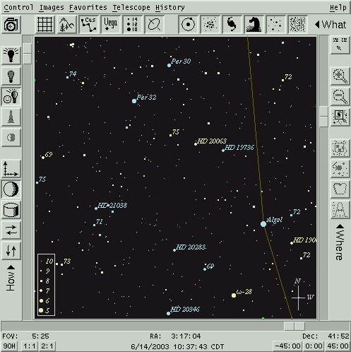 This view presents a
schematic representation of the sky showing database
objects and useful auxiliary information. A FITS file image can also
be displayed simultaneously.
The dominant center area displays each object that meets the brightness
and type filter selection criteria. Objects with defined date ranges
are
only shown at valid times. A menu bar across the top offers access to
all functions. Fast access to certain functions are available from the
surrounding toolbars. The mouse buttons can be used inside the display
area for additional functionality specific to the exact location of
the cursor when clicked.
Note that while looping with Pause set to
0 the Sky View is not updated (although all quantitative information
is always updated internally each step). This is to permit creating
plots and using other XEphem features that use many time increments to
run much more quickly if the Sky View is unmanaged or with Pause set
to 0.
If the object is an Earth satellite, its label will be surrounded in
parentheses if it eclipsed at that location.
5.1 Sky View mouse
The mouse serves many purposes in the Sky View. Exactly what it does
at any one time depends on whether it is located over an object and on
the states of some of the toolbar buttons.
No buttons:
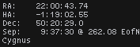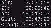Generally
nothing happens when the mouse is over the Sky View and no buttons
are being pressed. However, if the Corner Coordinates toolbar button
(upper right) is On, basic data describing the position of the
cursor are displayed in the upper corners whenever the cursor is
over the Sky even when no buttons are depressed. These data include:
- In the Upper left corner:
- RA, Dec and Hour angle equatorial coordinates;
- the great-circle distance and bearing between the current
position and the
point at which the left button was last clicked;
- constellation name;
- if displaying FITS image, raw image pixel coordinates. N.B. FITS coords = XEphem coords + 1
- In the Upper right corner:
- Alt, Az and Zenith horizon coordinates;
- Galactic latitude and longitude
- Parallactic angle, +/-180 +west
The coordinates are derived directly
from the screen location and know nothing of the displayed objects.
Thus, they neglect parallax (i.e., assume everything is at infinity).
If the Telescope Marker is active and a telescope control process
is reporting telescope position information, then when the cursor is
outside the Sky View the data in the corners refer to the telescope
marker position, not the cursor position. This information is not
displayed if any keyboard keys or mouse buttons are pressed.
Left button:
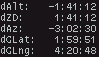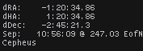If
the
Region of Interest toolbar button is On and the left mouse button is
pressed, then the information in the upper left and right corners
changes into delta information, that is, the changes in the various
coordinates with respect to the position where the left button was
last pressed.
If the ROI toolbar button is On,
pressing and dragging the left mouse button draws a Region of
Interest box. This ROI can serve two roles. One is a way to zoom.
With the ROI toolbar button On, click in the Sky View with the left
mouse button and begin to draw a box surrounding a region of
interest. When the button is released, the ROI becomes fixed into
position. To perform the zoom, press Zoom In in the tool bar. The
current size, position, and ROI are saved and the Sky View is
changed to expand the new area. The Zoom Back tool bar button then
becomes available to restore the display to its previous size and
position. The Zoom In and Zoom Back buttons work as a pair for
arbitrary
levels of undo and redo. This Zooming is implemented by actually
sliding the scales around the edges of the Sky View just as if you
had done it manually. Thus, the selected area may be rotated after
the zoom due to a change in perspective in the map projection. This
is a feature.
The other use for the ROI is available
only when an image is being display. Basic statistics are computed
for the pixels that lie within the ROI box. Also only while an image
is displayed, the left mouse button may be used to position a
Magnifying
glass; graph the pixels along an arbitrary cross sectional slice
through
the image; and compute and display high quality photometric and
astrometric information about the star nearest the cursor based on 2D
Gaussian fitting. See
Image analysis.
Middle button:
While the middle button is depressed,
the cursor is changed to a fleur pattern. Moving the mouse left and
right is like moving the scale at the bottom; moving it up and down
is like moving the scale at the right. This provides a simple method
to pan the display. This feature is not yet available while
displaying an image. If the Live
dragging option is turned on (see Control » Options), the
panning occurs immediately. If this is painfully slow on your system
then turn this off so the screen is only redrawn one time when the
button is released.
Right
button:

If
the right button is clicked over the
Sky View,
then a popup menu will appear. If the button is clicked and
released, the menu will stay up and can be used like any other menu.
Or the button may be pressed and held while you slide the cursor to
the desired button and let go. Try both and use whichever procedure you
prefer.
The popup contains information and
controls germane to the exact position of the cursor when the button
was clicked. The entries in the popup menu vary depending on whether
the cursor was near an object or over empty sky. If the cursor is
near a object, data is shown which are exactly the same as that
which is available in the
Data Table window.
If a trailed object is selected, the data applies at the
time for that position. If the cursor was not near an object, basic
information based on the location of the cursor itself is shown.
The popup also offers several control
operations, as follows. Remember, only the ones relevant to the
current situation and toolbar choices will appear.
- Name will show the name of the object. If alternate names
are available they will be displayed in a pullright cascade menu.
- Type will display a brief description of the type of
object.
- Center will change the
Sky View pointing direction to place the given object (or location)
at the center of the field of view.
- Center + Zoom » is like
Center but will also zoom in or out the amount selected in the
pullright cascade menu.
- Persistent Label » on
Left on Right will toggle whether a label is drawn on the left
or right side of the current object. The label will consist of the
name and/or the magnitude, depending on which options are selected
in the SkyView » Options
Labeling section. If neither are selected, the label will consist of
the name. Persistent labels are always on, that is, they are not
subject to magnitude limits, options, or object type filtering. Note
this option is maintained separately for trailed objects and for the
untrailed objects; that is, you have independent control over
labeling for a trailed object and its currently displayed object
since the latter also always appears in the trailed list. This can
be somewhat confusing for trails which begin Now since, in effect,
the first item is drawn twice (once just because it is an object
like any other, and again as a member of the set of trail history
points).
- Place eyepiece will cause
an eyepiece symbol to be drawn centered under the mouse location. The
eyepiece shape and size are defined in the Eyepiece Setup window,
available at Control »
Eyepieces. Both the RA-Dec and Alt-Az of the location are
saved and the one matching the Display mode is used when the
eyepiece is drawn on the Sky View. In this way eyepieces can be
fixed in either coordinate system. See Eyepieces.
- Delete eyepiece will
delete the closest eyepiece covering this mouse location. The search
algorithm uses the smaller of the two dimensions of the eyepiece so
it may be necessary to get close to the center depending on the shape.
- Telescope GoTo will cause
the coordinates of the cursor to be sent to the INDI telescope control
process. The command is not issued if the coordinates are below the
horizon. This button is only present if the connected process is
running. See Telescope.
- Add to logbook will copy
pertinent position and descriptive information about the current object
to a new entry in the Observers logbook. This
selection only appears if the logbook tool window is currently open.
- New Photom ref only
appears if an image is being displayed, the 2D Gaussian image analysis
tool is up, and the cursor was clicked near a database object. If all
this is so, then said object is used as the new reference for
photometric comparisons, and the magnitude of the object from the
database is set as the reference for subsequent use.
- Show orbit... is only
present
if the selected object is a Binary system. It brings up a window
showing
the
orbit of the secondary around the primary and an ephemeris for one
revolution. See Binary Star Map for more
information.
- Add to Favorites will add
this object to the Favorites list.
- Create Trail...
will bring up a window from which a trail may be easily defined,
computed and displayed. The button is labeled Change Trail if the selected
object already has a defined trail. Only one trail per object is
supported. See Trails.
- Track will toggle object
tracking for this object. If a trail object is chosen, the tracking
will apply to the current position of the object. See the discussion
for the Control » Tracking
toggle button for more details.
- Trail is only present
if the selected object has a trail defined. If it has a trail, the
toggle state indicates whether the trail is being displayed. Note
that turning off a trail does not actually discard the trail until
the next Update occurs from the Main window.
5.2 Toolbars
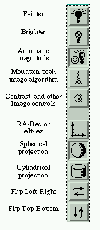
|
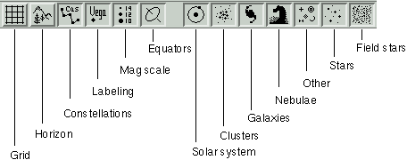
|

|
The toolbars are divided into
three broad categories. Down the left are choices that effect How the
scene is portrayed, such as coordinate system, flipping and
magnitude limits. Across the top the choices effect What is
displayed, such as coordinate grids, local horizon, and the
classes of celestial objects. All of the buttons in the Left and
Top toolbars are just convenient shortcuts to functions that can
also be accessed from the Options and Filter windows available
in the Sky View Control menu.
The toolbar down the right side is a little different. These
buttons share a broad common theme of Where objects or
information are located. Some also effect how the mouse operates. |
5.3 Scale controls
FOV
The vertical scale on the left side
sets the vertical field of view of the display. The horizontal field
of view is determined by the width of the window at the same scale.
The FOV can be varied in 5 minute increments from 0:05 through 180
degrees. The buttons below offer a quick way to set the scale to
exactly
90 degrees and to resize the window (by changing the width) to 1:1
and 2:1 Width:Height aspect ratios. When an image is loaded, an
additional button appears labeled Image. Clicking this will resize the
window to match the aspect ratio of the image. The FOV scale may also
be changed
using the keypad + and - keys. Using the key alone moves by 2%, with
Shift moves 10%.
Alt / Dec
The vertical scale on the right side
sets either the center altitude or declination, depending on the
display mode. The value can be varied from -90 to +90 in increments
of 5 minutes. The buttons below presents a quick way to center the
scale at exactly 45, 0 or -45 degrees. The Alt/Dec scale may also be
changed using the keypad Up and Down arrow keys (make sure your NumLock
is off). Using the key alone moves by 2%, with Shift moves 10%.
Az / RA
The horizontal scale across the bottom
sets either the center azimuth or RA, depending on the display mode.
In Alt-Az mode this sets azimuth and can be varied from 0 to 359:55
degrees in steps of 5 minutes. In RA-Dec mode this sets Right
Ascension and can be varied from 0 to 23:59:40 hours, in steps of 20
seconds. The Az/RA scale may also be changed using the keypad Left and
Right arrow keys (make sure your NumLock is off). Using the key alone
moves by 2%, with Shift moves 10%.
5.4 Trails
The location of any object on the Sky view may be computed at
regular intervals and displayed by setting up a sky trail. Use the Trails Setup window to select the interval,
number of steps, formatting details and which steps you would like
annotated. The trail setup window is accessed from the popup which
appears when the third mouse button is activated when the cursor is
near an object. Any number of objects may have trails.
The trail is created by computing the location of the object at
several intervals. Each new location will be drawn with a small mark
and connected with a line to its previous location. The trails
remain correct if the display coordinate system is changed. Trails
may be turned on or off without loss of trail information. Trail
information is discarded if a trail is turned off when a new Main
window Update is performed. If any point on a trail is selected
using the third mouse button the information displayed is as per the
object at that time. The times displayed next to trailed objects are in
accord with the setting of Preferences ->
Time zone.
Trail information is not subject to the
constraints in the Filter window, i.e.,
trailed objects are always shown.
Note that in Alt-Az mode, each trailed location is positioned on
the display according to the sky at the current moment. But because
of diurnal motion these trails are not useful for comparison with
the background of fixed stars. Use the RA-Dec mode for that. This is
so important (and easily overlooked) that you will see a reminder
notice to this effect the first (and only) time you create and
display a trail in Alt-Az mode.
Finally, be sure to recompute any trails if you change any of
the preferences or circumstances in the Main window.
5.5 Sky View Control
menu
This is a summary of the Sky View Control menu. Details follow.
Options...
This brings up a window with several
choices effecting the way the scene is drawn. See
Options.
Filter...
This allows selecting the types and
magnitude ranges of objects to display. See
Filter.
Print...
This allows printing the current Sky
view or saving it to a file. If an image is currently being
displayed, it will also be part of the print image. See
Printing.
List...
This brings up a window that allows
saving the objects currently displayed in the Sky View to a file.
See
List.
Horizon...
This activates the Horizon setup
window
where you can define new or load existing horizon profiles. To
actually display the Horizon profile, turn on the toggle under
Option. See
Horizon.
Field Stars...
This activates the Field Star setup
window. To display Field Stars, turn on the toggle under Options.
See
Field stars.
Favorites ...
This activates the Favorites setup
window. See
Favorites.
Eyepieces...
This brings up a window which allows
you to specify the shape, size, rotation and style of the next
eyepiece to be created. See
Eyepieces.
Whether eyepieces are shown at all is controlled by the
Control » Options »
Eyepieces option; see
Options.
Coordinates...
This brings up a simple dialog which
allows you to type in (or copy/paste) and convert among several
common coordinate systems used in astronomy. The coordinates may be
set from or used to repoint the Sky View. See
Coordinate
converter.
User annotation...
This selection brings up a window
which
allows text and lines to be drawn over the image. See
Annotation.
Add to movie...
This selection brings up a window to allow adding the
current Sky view to a movie loop.
Tracking
Tracking in this context refers to
whether the pointing direction of the Sky View will automatically be
changed each time an Update occurs from the Main window such that
the tracked object will remain centered on the display. The object to
be
tracked is selected by using the Track
option in its popup menu, as described elsewhere. When this toggle
button is sensitive and pushed-in it means that tracking is active for
one object. The tracked object will be marked with an × on the
display after each Update. If this toggle button is selected while it
is
sensitive, it turns tracking off. This is a convenient alternate method
to turn off object tracking without having to find the exact object
being tracked and use its popup Track control. When this toggle
button is insensitive and popped-out, it means that object tracking
is not active; it does nothing when selected while insensitive.
Close:
This causes the Sky view and all
supporting windows to go away.
5.5.1 Options
5.5.1.1 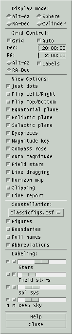Display mode:
Alt-Az
RA-Dec
This pair selects whether the display
coordinate system is Altitude-Azimuth or Right
Ascension-Declination. While in Alt/Az mode the display is always
topocentric; while in RA/Dec mode the display coordinate system
depends on the Equatorial preference and Equinox settings in the
Main window.
Sphere
Cylinder
This pair selects whether the display
is projected onto a sphere or a cylinder. The advantage of the
sphere is that it mimics the real sky. The advantage of the
cylinder is it shows the entire universe at once.
5.5.1.2 Grid Control:
This group of controls allows you to
specify the details of an overlay coordinate grid.
Grid
Toggles the grid on or off.
Auto
If on, the size of the grid steps will
be determined automatically and shown in the text fields beneath;
if it is off, then step sizes are determined from the values in
the text fields. Typing into either field then pressing Enter will also
turn off Auto and immediately display the grid with the new step
size.
Alt-Az
RA-Dec
This pair selects in which coordinate
system the grid will be drawn.
Label
Selects whether the grid will be
labeled.
5.5.1.3 View Options:
Just dots
This toggle effects how stars are
shown. When the toggle is pushed in, all stars are displayed simply
as dots of various sizes. When the toggle is released, each type of
star is displayed with a unique schematic symbol. These symbols may
be reviewed from the
Filter window.
Flip Left/Right
Flip Top/Bottom
These toggle whether the display is
shown with a flip in the left/right or the top/bottom directions,
respectively.
Equatorial plane
This toggles whether a red 3:6 dashed
line is shown along the Earth's equator projected onto the celestial
sphere. The North and South celestial poles are marked and labeled as
NCP and SCP, respectively.
Ecliptic plane
This toggles whether a red 2:2 dotted
line is shown along the ecliptic. The ecliptic is the plane of the
Earth's orbit or, as seen from Earth, the path of the Sun and the
approximate path of the planets across the sky. The anti-solar point
is marked with a small open circle. The Vernal and Autumnal equinoxes
and Summer and Winter solstice locations are marked and labeled as VEq,
AEq, SS and WS respectively. The North and South eclipic poles are
marked and labeled as
NEP and SEP, respectively.
The
edges of umbra/penumbra of
Earth are marked with open circles. If Preferences » Equatorial
is set to Topocentric, the umbra/penumbra are projected at the current
distance of the Moon and corrected for parallax; if set to
Geocentric they are projected at infinity.
Galactic plane
This toggles whether a red 1:4 dotted
line is shown along the galactic equator. The North and South galactic
poles are marked and labeled as NGP and SGP, respecively. The galactic
center is marked and labeled as GC. The outline of the
Milky Way boundary is also shown.
Eyepieces
This toggles whether eyepieces are
drawn on the Sky view, if and when any are placed.
Eyepieces are placed on the Sky view by
using the
Place eyepiece
control in the popup menu activated by the right mouse button. The
shape and style of eyepieces is defined in the
Control » Eyepieces
window. Eyepieces are only drawn if they fit entirely within the Sky
View. This selection is automatically activated when an eyepiece is
placed.
Magnitude key
This toggles whether to display a
chart
in the lower left corner showing the correspondence between dot size
and star magnitude. The scale is automatically turned off each time
an image is first displayed.
Compass rose
This toggles whether two symbols to
indicate the cardinal directions at the center of the Sky View in
each Display mode are drawn in the lower right corner. The symbol on
the right always shows the current mode, the symbol to its left the
opposite mode. The one labeled with Z and R indicates
the
local horizontal directions toward the Zenith and toward the Right; the
one labeled with N and W indicates equatorial North and
West. The symbols are not drawn near their respective poles.
Auto magnitude
When this toggle is active, the
faintest magnitudes and dot step size will automatically be set to
something reasonable based on the field of view. This option is
automatically turned on whenever the FOV changes for any reason,
unless it was turned off manually. Note that initial resource values
for faintest magnitudes and dot step size will not be honored unless
the
initial resource value for automag is also off.
Field Stars
This toggles whether
Field stars are automatically loaded and
displayed if the position, field of view, limiting magnitude or time
changes significantly. This selection turns itself off if any
difficulties ever arise in retrieving field stars.
Live dragging
This toggles whether the graphics are
redrawn in real time as the various scale controls are being slid,
or whether the graphics are not redrawn until the mouse is released.
What works best for you depends on the speed of the computer, display
and data bandwidth. If the system is fast enough, turning this on can
produce dramatic results.
Horizon map
This toggles whether to display the
local horizon profile on the Sky View and
whether objects below the horizon are drawn. The profile
linearly interpolates between points in the defining file. See
Horizon.
Clipping
This toggles whether objects
which are below the horizon are drawn. This has no effect if no
horizon is displayed.
5.5.1.4 Constellation:
File name
This drop-down selection allows you to
select the file that defines constellation figures. The files supplied
with XEphem are HAReyfigs.csf and classicfigs.csf to define the figures
defined by H. A. Rey or the classic definitions, respectively. The
files shown for possible selection are those files ending with the .csf
suffix in the Shared and Private directories.
The definition file must contain exactly one figure for each of the 89
constellations. Leading white space, blank lines and lines beginning
with # are ignored. Each figure definition begins with a line
containing just its name followed by one or more lines of the form:
drawcode ra dec [comment]
where
drawcode is a numeric value indicating a drawing
instruction as follows:
0 move to ra dec
1 draw solid line to ra dec
2 draw dashed line to ra dec
ra is decimal hours or sexigesimal h:m:s
dec is decimal degrees or sexigesimal d:m:s
the remainder of the line is ignored and may be any
comments, typical is the name of a star being drawn to.
Figures
Boundaries
This pair controls whether to show
constellation figures and/or constellation boundaries.
Full Names
Abbreviations
This radio pair controls whether and
how
constellation names are shown. The choices are full names, their
3-letter abbreviations or neither.
5.5.1.5 Labeling:
This portion controls labeling
options.
The sliders select how many of the brightest objects to label in
each of four categories. The count ranges from 0 on the left to All
on the right.
The label itself may consist of the Name or Magnitude or both,
depending on the state of the two buttons in the columns marked N
and M to the left of each scale. If Names and Magnitudes are both
turned on then the magnitude is drawn to the right of the name
surrounded by parentheses. Magnitudes are always drawn to the
nearest 1/10 with the decimal point removed.
Trailed entries and objects marked for Persistent Label do not
contribute towards the brightest count.
5.5.2 Filter
 This window lists all classes of
objects
supported by XEphem. Using the Filter window, you may select which
classes of objects are displayed on the Sky view window. For
reference, the Filter window also contains the schematic symbol for
each type of object, and its code when used in a database file. The
symbol displayed for each class of object is that which will be used to
represent the object in the Sky view, unless Control » Options » Just
dots is selected. Note
that the symbol used to draw an Elliptical object in the Sky View is
the same as that for objects of type Hyperbolic and Parabolic if the
name of the object begins with "C/" (presumed to denote a comet).
This window lists all classes of
objects
supported by XEphem. Using the Filter window, you may select which
classes of objects are displayed on the Sky view window. For
reference, the Filter window also contains the schematic symbol for
each type of object, and its code when used in a database file. The
symbol displayed for each class of object is that which will be used to
represent the object in the Sky view, unless Control » Options » Just
dots is selected. Note
that the symbol used to draw an Elliptical object in the Sky View is
the same as that for objects of type Hyperbolic and Parabolic if the
name of the object begins with "C/" (presumed to denote a comet).
Three scales near the bottom of the Filter window control the faintest
magnitude limit to be displayed for Stars, Solar system and Deep sky
objects. Note that trails and persistent labels are not subject to the
faint magnitude limits.
The diameter of the symbol drawn in the Sky View is the larger of the
object's actual size at the current window scale (if a size is
specified in the database entry for the object) or a size that is
proportional to the difference between the object's magnitude and the
current faintest magnitude setting.
The fourth scale in the lower left selects the number of magnitudes
binned in each dot size. Values larger than 1 are helpful for showing
very large ranges of magnitudes.
Several push buttons appear across the bottom of the Filter window
which have the usual effects: Selecting Apply
updates the Sky display according to the desired selection. Selecting Ok does the same thing but also
closes the Filter window. All
turns on all types. Toggle
swaps
which filters and Or and Off. Reset
will return the state of all Filter controls to their state when this
window first appeared or the most recent Apply.
5.5.3 Print
This allows printing the current Sky view or saving it to a file. If
an image is currently being displayed, it will also be part of the
print image. See Printing.
5.5.4 List
This window lists, sorts and writes the objects currently displayed
in the Sky View to a file. Basing the list on the Sky View allows the
selection criteria to use the full power of the Options and Filters
controls as well as the region of the sky as defined by the center and
field of view. If you wish to include all objects without regard to
position, use the Cylindrical project mode, set RA-Dec, FOV 180, Dec 0
and resize the Sky View window to show the entire universe.
At the top, the format of the file created may be specified in either
of two formats. The .edb format saves the objects in the XEphem
catalog format. This is handy for using the XEphem filtering options
to create custom catalogs. The text format is a columnar listing. The
columns that are printed are the same as those currently selected in
the Data Table, printed to the precision specified in the Preferences. A convenient button is
provided to bring up the Date Table setup window. Note that a column
need not be printed to be used for sorting, although it would seem
unusual to do so.
The center section lists several fields that may used for sorting the
list. Pick each field in the order you wish to sort the list. If you
wish to make a change to the order, you may Undo one at a time back to
the beginning or Clear the entire sequence and begin again.
The bottom section is a text field which (will) show the results of
the sort. This text field is fully editable, so you may delete specific
objects, add comments and so on as desired. N.B. If you have chosen
the .edb format, no checks are made that your edits have made the
format illegal.
Pressing the right mouse button over the text field will bring up a
popup menu, if a valid object name is found at the beginning of the
line under the cursor. This popup has buttons to Delete the object on
the current line from the list and Mark the object on the Sky View.
Across the bottom are several controls.
Save
This writes the text field exactly as
it now appears to the file named at the right of the format
checked at the top. N.B. No check is made that the format and the
extension agree.
Sort
This rebuilds the list according to
the
current settings. Use this after changing something in the Sky
View, or after changing the format or sort settings here.
5.5.5 Horizon
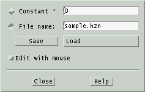 XEphem
allows you to create a file describing your local horizon. This window
gives you two ways to define your local horizon, and a handy way to
edit and save a horizon description.
One way to define a horizon is just to specify one altitude that will
be used
at all azimuths. To use this method, type the desired altitude in the
field provided, then type Enter or toggle the button labeled Constant On.
The other way is to draw your actual horizon profile interactively as
follows:
- Set the Sky View to display Alt-Az mode;
- set Az to 0, Alt to 90, FOV to 180 so you see your entire sky;
- click on Edit with mouse;
- draw your horizon with the mouse;
- when finished turn Edit with mouse back off;
- enter a file name;
- click Save.
Editing can in fact be performed in any mode but the above setup is the
most natural. Reload the profile later using Load.
As many profiles can be stored as desired. For example, if you
observe from several sites, you can have a profile for each.
File format
The Horizon profile file
format (suffix .hzn) and its use by
XEphem are defined as follows:
- Each line should contain exactly two numbers separated by
spaces.
- The first number is the azimuth, expressed as degrees East of
North.
- Azimuth values range from 0 up to 360 degrees. Any values
outside
this range have 360 added or subtracted until they fall in this
range.
- The lines need not be sorted by Azimuth, although they will be
sorted when used; thus the horizon map can never cross itself.
- If the file does not include the full range of Azimuths, the
end points will be connected automatically.
- It is ok to specify just one point (at any Azimuth). This will
result in a flat horizon all the way around at the specified
Altitude. This is functionally equivalent to using the Constant
method.
- The second number is degrees above horizontal.
- XEphem linearly interpolates as necessary when drawing between
the Az and Alt values in the file.
- Lines of any other form are ignored.
5.5.6 Field Stars
This activates the Field Star setup
window. To display Field Stars, turn on the toggle under Options.
See
Field stars.
5.5.7 Favorites
This activates the Favorites setup
window. See
Favorites.
5.5.8 Eyepieces
 This
window allows you to specify the shape, rotation angle, size and style
of the next eyepiece marker to be placed in the Sky View. These
markers are useful to show the view through your eyepiece, simulate
the view of a CCD camera, or as simple annotation markers for any
desired purpose. Symbology on the map will show through the eyepieces,
even when they are specified as solid.
This
window allows you to specify the shape, rotation angle, size and style
of the next eyepiece marker to be placed in the Sky View. These
markers are useful to show the view through your eyepiece, simulate
the view of a CCD camera, or as simple annotation markers for any
desired purpose. Symbology on the map will show through the eyepieces,
even when they are specified as solid.
Note that this window controls the style of the next eyepiece to be
created. To actually place an eyepiece, place the mouse over the Sky
view where you want the center to be located and press the right
button. A popup menu will appear. Slide down the menu and release over Place eyepiece. When an eyepieces is
place on the sky, both the RA-Dec and Alt-Az of the location are saved
and the set
matching the Display mode is used when the eyepiece is drawn on the
Sky View. In this way eyepieces are fixed in both coordinate systems.
Set next eyepiece ...
Across the top are three sliders which set the Width, Height and Angle of the next eyepiece. Width
and Height are shown in units of degrees:minutes.
The interpretation of the rotation angle depends on the
current display mode of the Sky View at the moment a new eyepiece is
placed. When in Alt/Az mode, the angle is away from a line through the
Zenith, and when in RA/Dec mode the angle is away from the North
Celestial Pole. In both cases, the units are degrees.
Below them is a toggle that will Lock
the W and H sliders so they move together. This makes it easy to
create eyepiece shapes that are perfectly round or square.
As a special convenience for and in deference to, there is a toggle
which will create three open circles spaced to match the view through
the Telrad unit power finder.
The circles are 0.5, 2 and 4 degrees in diameter. As long as this
special toggle is pushed in, the other controls are made insensitive
to avoid interfering with the preset values for the Telrad.
Next below are pairs of toggle buttons to select the Shape and Style
of the next eyepiece. Elliptical
and Rectangular refer to
circles
and squares. Solid and Outline refer to whether the shape
will be filled in or just drawn as a border.
Field-of-View Calculators
In the central portion of the Eyepiece window are two calculators that can be used to
compute the sky angle of an optical system in two ways. The first
method uses the net focal length of the entire optical system and a
linear size on the focal plane. The technique is handy for CCD users
who want to find the sky angle subtended by each pixel or the entire
detector. Another good use of this form is for photographers using
film to find the amount of sky that will fit on their film. To cover
this wide range of applications, the measures may be specified in any
of several common units by adding the appropriate suffix. Default
units are shown in parentheses.
The second calculator uses the apparent field of view while looking
into an eyepiece and divides this by the magnification, which in turn
is found from the ratio of focal lengths for the primary mirror and
the eyepiece. Typical eyepieces provide about 45 degrees apparent
fields of view, and some premium ones can go to 60 degrees or more.
After using either method, the resulting sky angle can be assigned to
the Width or Height scale for the next eyepiece by using the Set W and
H buttons to the right.
Saving Eyepiece Definitions
This portion of the Eyepieces window allows you to Add
the current eyepiece settings to a list of favorites. A simple
name is chosen automatically but you may change this to be more
meaningful to you. Each such eyepiece may be Deleted from the set or put to Use by using the buttons on the
left. To the right of each eyepiece is a reminder of its width, height
and a code letter for its shape and size.
The buttons below the table of favorite eyepieces allow you to Save
and later Load the table to a file. These files have the
extension .epd. When saving, the new file is always created in
the Private directory. When
loading, files with this suffix are first checked for in the Private
directory and if
not found in the Shared directory. The suffix is automatically added if
not entered in the file name field. The file named in the Save field is
also the file that is automatically loaded when XEphem starts. This
file name can be saved in the Preferences » Save window in
the Skyview -- Eyepieces section as EyePDefFile.
Saving Sky View Eyepiece Placements
This portion of the Eyepieces window allows you to Save and
later Load the set of eyepieces currently defined on the Sky
View to a file. These files have the extension .epp. When
saving, the new file is always created in
the Private directory. When
loading, files with this suffix are first checked for in the Private
directory and if
not found in the Shared directory. The suffix is automatically added if
not entered in the file name field. The file named in the Save field is
also the file that is automatically loaded when XEphem starts. This
file name can be saved in the Preferences » Save window in
the Skyview -- Eyepieces section as EyePPosFile.
Delete all placed eyepieces
After at least one eyepiece has been placed in the Sky
View, a button
at the bottom of this window will become available to permanently Delete all placed eyepieces
currently anywhere on the Sky View. You may also delete them
individually from the Sky View from the right-click popup or if you
just want to temporarily turn all Eyepieces off and back on later, use
the Eyepieces control in the Control
» Options window.
Close
Across the bottom are buttons to Close
the window and Help to get
more
information. Closing the window has no effect on eyepieces already
placed in the Sky View.
5.5.9 Coordinates
This brings up a simple dialog which
allows you to type in (or copy/paste) and convert among several
common coordinate systems used in astronomy. The coordinates may be
set from or used to repoint the Sky View. See
Coordinate
converter.
5.5.10 User
annotation
This selection brings up a window
which
allows text and lines to be drawn over the image. See
Annotation.
5.6 Sky View Images menu
The Images menu can bring up three windows.
Load and save...
This window controls loading local
FITS
files, downloading them from the Net, and saving them locally.
Analysis tools...
This window provides a variety of
image
analysis and processing tools. Settings made in this window can also
effect what the mouse does in the Sky View when an image is being
displayed.
WCS Solver...
This window provides a means to add
World Coordinate System headers to a FITS file. With WCS, XEphem
(and many other programs) can compute the RA and Dec of each pixel
in the file, not just its X and Y pixel coordinates. This capability
opens the door to many interesting possibilities. The algorithm
performs
a pattern match between the star-like artifacts in the image and the
GSC
and/or USNO star catalogs.
5.6.1 Load and Save FITS
images
 This
window allows you to display a FITS file in the Sky View window. You
may display local files or download the Digital Sky Survey directly
from the Internet. The image is resized to match the size of the Sky
View window. Once an image is displayed, all graphical features of the
Sky View are available, such as grids and labeling objects loaded in
the XEphem database. Most of these features require that WCS headers
be present in the image. XEphem can help create these using the WCS Solver tool.
This
window allows you to display a FITS file in the Sky View window. You
may display local files or download the Digital Sky Survey directly
from the Internet. The image is resized to match the size of the Sky
View window. Once an image is displayed, all graphical features of the
Sky View are available, such as grids and labeling objects loaded in
the XEphem database. Most of these features require that WCS headers
be present in the image. XEphem can help create these using the WCS Solver tool.
Resizing the window will change the size of the scrolled text
area displaying the FITS header fields.
Open FITS file
Clicking on the option menu will
display a list of all FITS files in the
Private
and Shared directories in a popup menu. All files with the name
extension .fts, .fits, or .fit will be included. Clicking on a file in
the popup list will display it.
Download
This button heads up the section for
downloading Digital Sky Survey images from the Internet You may
choose generations 1 and 2, and either Red or Blue filters for the
latter. The DSS is maintained by the Space Telescope Science
Institute, STScI, in the United States or the European Southern
Observatory, ESO, research facility in Germany. The image data from
either site is identical, so choosing which to use depends only on
availability and whichever is faster for you.
The size and position of the image are that of the current Sky View
settings, but the size is limited to 30 arc minutes by agreement
with each institution. Before attempting a download, use the File » Network setup
window off the Main menubar to configure your Internet connection.
Clicking Display will begin the download. A progress meter will display
remaining time. A Stop window is provided if you care to abandon the
effort. The header of the http server response message is in the
Main File » Syetem Log
window; check there if an error occurs.
FITS Header:
This section consists mainly of a
scrolled text area which shows each field in the FITS header.
If the
header contains any of the fields EPOCH, JD or DATE-OBS then the
date of the observation is displayed above the header. The button
labeled Set time will also
come
alive which allows setting the main XEphem time and date to this
value. This is handy when checking for asteroids, comets or using
the proper motion catalogs with an image. EPOCH must be a decimal year;
JD must be a decimal Julian Date; or DATE-OBS must be either in ISO
8601
format (YYYY-MM-DDTHH:MM:SS), YYYY[/-]MM[/-]DD, or MM[/-]DD[/-]YY
where YY is assumed to be the number of years since 2000 if less than
50 otherwise years since 1900.
In order to be displayed by XEphem, the header in a FITS file must
contain at least the mandatory fields SIMPLE, BITPIX, NAXIS, NAXIS1,
NAXIS2 and END. Only files with BITPIX 8 or 16 and NAXIS 2 are
supported. Both DSS PLATE headers and the traditional World
Coordinate System fields (CTYPE, CROTA, CRPIX, CDELT and CRVAL, 1 and
2) are supported. BSCALE and BZERO are not supported at this time.
Note: XEphem treats the 16
bit pixels as unsigned values from 0 through 65535, unlike the
standard which specifies they be treated as signed with values from
-32768 through 32767. XEphem assigns the coordinate [0,0] to be the
center of the first pixel in the file, unlike the standard which
specifies this position be at coordinate [1,1].
Save as:
The image currently displayed, if any,
may be saved to disk as a FITS file. The file name is specified in
the text field provided. If
Auto
name is turned on, a filename is automatically created derived
from the RA and Dec of the center of the image. An attempt is made to
preserve any existing directory and filename extensions, such that
the filename is constructed between the right-most '/' and the
right-most '.' characters, if possible. You may also type in your
own name.
When an image is saved, its current contrast settings are added to
the FITS headers. If these fields are present when the file is
opened these settings will automatically be put back into effect.
See
Contrast.
File
watch:
This feature allows XEphem to
automatically discover and display FITS files that were created by
another program. When Watch is
turned on, XEphem will try to open the watch
file named in the text field provided here approximately once each
second and display the file named on the first line of the watch file. If successful XEphem
removes the watch file as a
means to handshake the image has been displayed.
With this feature and the popularity of various networked file systems
(NFS, Samba, etc) it is quite reasonable to display images with
XEphem that were captured on an entirely different computer, or on
the same computer running camera control software unrelated to
XEphem.
A further note to implementors: XEphem also supports the watch file being a fifo. In this
case, XEphem will open the fifo and block trying to read a path name up
to the first newline. There is no handshake in this case. The fifo
approach is actually a bit more efficient than the file approach
because no polling is required.
5.6.2 Image Analysis Tools
The Sky Image Tools window offers several functions with which to
analyze the FITS file showing in the Sky View. There are a few sample
FITS files included with which to practice using the tools.
The window is divided into several separate sections, each of which
can be opened and closed as desired. Always present at the top of the
window is a block of basic information about the image. The statistics
ignore a border of 8 pixels. The information shown is: file name;
width and height; value and location of brightest pixel; value of
dimmest pixel; mean, median and standard deviation of all pixels.
Note two important differences
between XEphem and FITS: 1) XEphem treats the 16 bit image pixels as
unsigned values from 0 through 65535, unlike the FITS standard which
specifies they be treated as signed with values from -32768 through
32767. 2) XEphem image coordinates are one less than the FITS
standard. FITS defines the center of the first pixel in the file to be
at [1,1] while XEphem defines it to be at [0,0].
5.6.2.1 Brightness and
Contrast
 This
section controls the mapping between image pixels and screen colors.
It does not modify image pixels in any way.
This
section controls the mapping between image pixels and screen colors.
It does not modify image pixels in any way.
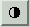This section may
also
be opened using the button in the left Sky View toolbar that looks like
a circle filled with black on the right half.
The top nine buttons offer shortcuts to set or adjust the image
appearance according to predefined algorithms.
Reverse
toggles between assigning brightness
in
direct or inverse proportion to image pixel values.
Narrow, Wide and Full
correspond to high, medium and low
contrast settings. These are implemented using increasingly broader
assignments of brightness about the mean pixel value in the image.
Narrow assigns full black and white to the mean ± 1/3 Std Dev.
Wide assigns black to mean - 1*StdDev and white to mean + 2*StdDev.
Full
assigns black to the smallest pixel and white to the largest pixel
in the entire image.
Sharper and Duller
change contrast by changing the slope
of the pixel-to-brightness map to be steeper or flatter.
Brighter and Darker
change the brightness by shifting the
center of the pixel-to-brightness map to higher or lower pixel
values.
Nominal
ignores the statistical distribution
of
pixel values and sets the map entirely on the basis of the minimum
and maximum pixel.
Low and Hi
are text fields in which one may type
(or paste) the exact pixel values to be assigned to black and white.
A new value takes effect when Enter is pressed. These fields also
always show the current settings installed by any of the shortcuts.
Gammas
is set using the scale just above the
graph. The mapping from pixels to display colors is a power
function. Values of gamma less than 1 emphasize dark pixels, gamma
values greater than 1 emphasize bright pixels.
The graph contains two
overlaid
plots. The horizontal axis for each plot is the same: the full range
of pixel values within the image, with lowest on the left. The orange line is a histogram of the
number of pixels with each value. The yellow
line indicates the brightness at which each pixel value will be
displayed on the screen. You may control the black and white limits of
the mapping function from the graph by dragging the red arrows at the top of the
diagram.
You may control gamma by sliding the scale ust above the graph.
When XEphem saves an image, it adds three fields to the FITS header
to save the current contrast settings. When it loads an image, if
these fields are present they are used to restore the same display
contrast. If these fields are not present, the Wide setting is used.
These fields are: XELOGLUT: the pixel value assigned to black
XEHIGLUT: the pixel value assigned to white XEGAMMA: the value of
Gamma.
5.6.2.2 Cross section Slice
 Opening
this section lets you use the mouse to drag a line across the image
and display the pixels along that line. The graph is labeled
vertically in pixel value, horizontally as pixel distance from the
starting point. The line begins where the left mouse button
is first depressed.
Opening
this section lets you use the mouse to drag a line across the image
and display the pixels along that line. The graph is labeled
vertically in pixel value, horizontally as pixel distance from the
starting point. The line begins where the left mouse button
is first depressed.
Full pixel range toggle when set scales the vertical
scale to the full range of pixel values in the image, else scales to
the pixel range from Lo to Hi as defined in the
Brightness and Contrast section.
 This section may
also
be opened using the button in the right Sky View toolbar that looks
like a slice of bread.
This section may
also
be opened using the button in the right Sky View toolbar that looks
like a slice of bread.
5.6.2.3 Magnifying Glass
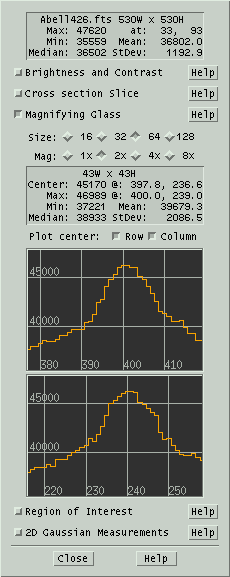This
section gives control over and shows information about the pixels in
the magnifying glass.
Click and hold the left mouse button as you roam over the image and
you will see an expanded view of the pixels. The Size and Magnifying power of the glass can be
set as desired using the two rows of toggle buttons. Note the numbers
on these buttons are in units of screen pixels, not image pixels. So
for example if you zoom in on an area the magnifying glass will expand
it correspondingly further.
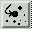While roaming you
might want to turn on the Jump to Max button on the right hand toolbar.
It is the one with the bright dot in the center to which a meandering
arrow finally points. When this button is on, XEphem will begin at the
pixel under the real cursor and walk the gradient to the brightest
connected pixel. All processing proceeds as though this brightest
pixel is where the cursor really pointed.
Statistics about the image pixels under the glass are shown in the
table. All values are in pixels, all locations are in image
coordinates.
Fractional image coordinates occur because the image is resized to fit
the window which results in rational values for the scale factors. If
you zoom in enough to clearly see individual image pixels, you can see
that the coordinate system for image pixels puts the integral position
in the center.
The statistics in the table include:
- Size of the area under the glass;
- Value and location of the center;
- Value and location of the largest pixel under the glass;
- Value of the minimum pixel;
- Mean value of all glass pixels;
- Median value of all glass pixels;
- One Standard Deviation of the pixel values about the mean.
Below the statistics box you can optionally open windows that plot
the row or column through the center of the glass. The horizontal axis
of each graph is in image pixels, the vertical is in image pixel
values.
 This section may
also
be opened using the button in the right Sky View toolbar that looks
like a box containing a few stars much larger than the others.
However, since the glass is useful in its own right, the toolbar
button only opens this section if the Image Tools window is already
up. Similarly, closing this section does not also turn off the toolbar
button.
This section may
also
be opened using the button in the right Sky View toolbar that looks
like a box containing a few stars much larger than the others.
However, since the glass is useful in its own right, the toolbar
button only opens this section if the Image Tools window is already
up. Similarly, closing this section does not also turn off the toolbar
button.
5.6.2.4 Region of Interest
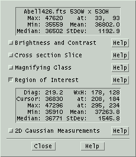This
section lets you use the mouse to draw a rectangle over the image and
get statistics about the pixels within this region. The area is the
same as that which can be used to specify a region in which to zoom.
 This section may also
be opened by the right toolbar button that looks like a boxdrawn around
a galaxy.
This section may also
be opened by the right toolbar button that looks like a boxdrawn around
a galaxy.
The following statistics about the image pixels in the ROI are shown
in the table:
- Length of the diagonal;
- Width and height of the region;
- Value and location of the cursor as you draw the ROI;
- Value and location of the largest pixel in the ROI;
- Value of the minimum pixel;
- Mean value of all ROI pixels;
- Median value of all ROI pixels;
- One Standard Deviation of the pixel values about the mean.
5.6.2.5 2D Gaussian
Measurements
 This
section is based on results of modeling stars with a 2 dimensional
Gaussian.
This
section is based on results of modeling stars with a 2 dimensional
Gaussian.
The model finds the coefficients in the following function of pixel
coordinates x and y that minimizes the Chi square error with each
pixel in an area:
g(x,y)
= B + A*exp(-0.5*(sqr((x-mx)/sx) + sqr((y-my)/sy)))
where
mx is the row coordinate from some
reference position,
my is the same for a column,
sx is the standard deviation of the pixel values along a row,
sy is the same for a column,
A is the peak height of function ( = g(xm,ym) - g(inf,inf)),
B is the mean of the row and column pixels.
[mx,my] is then taken to be the location of the star, the volume as
proportional to A*sx*sy as a measure of its magnitude, and B a measure
of the mean noise level of the surrounding pixels.
In practice, we find this method converges quickly and yields
positional results accurate to .2 pixel or so. Magnitudes and their
error estimates depend strongly on whether the image was ever
compressed, proper image correction, linearity of ADU counts with
brightness, and other factors. When these factors are properly
addressed, magnitude ratios seem to be good to .02 mag or so over
differences of several magnitudes.
The text box shows the results of this fitting process on the image
pixels that are centered on the cursor and lie within the area defined
by the magnifying glass settings (whether or not the glass is actually
turned on). The numbers report the following:
- Relative magnitude difference and error estimate between the
current star and the reference star;
- Position of the star, in image coordinates and in RA/Dec if WCS
header fields are present;
- Full-width-half-max of the star in each dimension in pixels,
and in arc seconds if the image scale is known from header fields
CDELT1 and CDELT2;
- The pixel value representative of the noise level base in the
area (B in the above equation);
- The pixel value of the peak of the Gaussian fit (A+B in the
equation).
If there is a number in the Reference
Mag text field, it is simply added to the magnitude reported.
The idea is to set this to the magnitude of a star (known by
independent means) and use that star as the reference for subsequent
comparison. Since the reference is now calibrated, magnitudes reported
will be absolute not just relative. Except under special situations,
the reference star will not be applicable to other images, although
XEphem does not prevent you from doing this.
The reference star can be established in several ways.
One way is automatic in the sense that
if there is no current reference, the first star that is measured is
also automatically given the role as reference for subsequent
comparisons.
After any star has been measured, it
can be made the reference by clicking on New. Clicking Mark will draw a small circle in
the image around the current reference star in case you lose track
of it.
Another way to set the reference is to
use a catalog star. This is only possible, of course, if the header
includes WCS coordinates. Right-click on the catalog star in the Sky
View and choose the entry New Photom
ref. This will perform the Gaussian fit on the pixels at
that stars location in the image, and assign the Reference Magnitude
to the catalog value.
 This section of the
Sky image tools window can be opened by clicking on the button in the
right toolbar that looks like a Gaussian graph (or perhaps a large
nose).
This section of the
Sky image tools window can be opened by clicking on the button in the
right toolbar that looks like a Gaussian graph (or perhaps a large
nose).
While measuring stars
you might want to turn on the Jump to Max button on the right hand
toolbar too. It is the one with the bright dot in the center to which
a meandering arrow finally points. When this button is on, XEphem will
begin at the pixel under the real cursor and walk the gradient to the
brightest connected pixel. All processing proceeds as though this
brightest pixel is where the cursor really pointed.
5.6.3 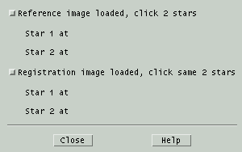Registration
This window lets you register, or align, one or more images to a
reference image. The motivation for this feature is to make a
movie of a moving object that has been captured in several images.
Load the reference image into a new Movie then
load each additional image after it is aligned.
The alignment algorithm requires two stars that appear in each image.
Using two stars is the most general method of defining a 2D coordinate
system and is used for its robust performance. It is possible to use
just one star, but the technique requires the software to make
assumptions about matching features in the image. We feel the slightly
larger burden of defining two stars is worth the results. When choosing
the two reference stars, select stars that are well separated in both
rows
and columns, isolated from neighboring stars, moderately bright and
well
formed.
To begin, load the reference image into Sky View and adjust the
contrast or other visual effects as desired. Then click the first
toggle in the window. The cursor will change over the Sky View to a
small cross. Place the cursor over one reference star and click; you
will see the Gaussian centroid image coordinates of the star
appear in the registration window for Star 1. Now choose a second
reference star and click again. You will see its coordinates appear for
Star 2, the cursor will revert back to the original style and the
toggle button will pop back out. If you ever want to change the
reference image choose different reference stars, you can turn on the
top
toggle again at any time and restart the procedure. This is a good time
to
delete any frames currently in the Movie tool and add the reference
image to form the first frame of a movie.
Now you can load a second image. Again, adjust contrast and so on as
desired. Click on the second toggle in the registration window and
proceed as before to click on the same two stars in the second
image. Be sure to click on the two stars in the same order, so that the
first star clicked when defining the reference stars is also the first
star clicked when working on the second image.
As soon as the second star is clicked on the second image, the image
will be transformed using translation, scaling and rotation in such a
way as to align the two stars with their location in the reference
image. The contrast settings are preserved for you even though the
image
pixel statistics have changed due to the addition of new black pixels
where
the images do not overlap and the loss of pixels that do not fit over
the
reference image. If the results look useful, add it to the Movie.
You may repeat the process of aligning additional images with the
reference image for as many images you like.
Note that while either toggle is turned on in the registration window,
the other image analysis tools are temporarily disabled. Note also that
the algorithm used to transform the image to match the reference image
is
designed primarily for speed. The stars in the transformed image are a
little
distorted and we recommend you not use these images for precise
photometry or
astrometry.
5.6.4 WCS Solver
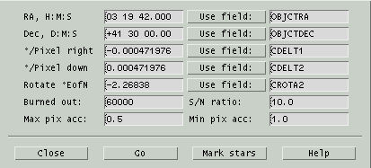This window controls a pattern matching
algorithm that attempts to
register the star-like artifacts in a FITS image with the entries in
any or all of the XEphem Field Star catalogs. See Field stars.
The solver will be invoked automatically whenever a FITS file is
loaded whose header includes all the seed fields but does not already
have a WCS solution.
Rows
1-5: setting seed values
The first five rows seed the search
with approximate coordinates for the center of the image, the scale
of the image pixels in each direction, and a possible rotation. The
center must be known to within about one half the smaller of the image
width and height. The scale must be known to within about 10%. The
rotation seed need not be accurate at all, but better estimates will
result in vastly faster solution times. Indeed, better values for any
field will improve the solution speed and also reduce the chances of a
false solution.
Each of the fields may be typed or
pasted into the fields down the left. But often FITS files will
include fields which contain information suitable for this purpose.
In the column down the right you may enter the names of such fields.
Clicking the Use field button
in
a row will read the value from the header field named on the right and
install it into the field on the left of the same row, possibly after
some reformatting and change of units. Certainly not all forms are
supported so please take care to check for proper units and
formatting yourself. The default fields supplied are fairly common
and are known to work if you are lucky enough to have them in your
images.
Row
6: scanning the image for star-like artifacts
The next row contains two parameters
which control the algorithm that scans an image to extract what seem
to be reasonable candidates for stars, that presumably will also be
in a Field star catalog.
Burned
out: This parameter sets the largest pixel value (in the
range 0 .. 65535) a star may contain. Groups of pixels being
considered as a candidate star by the algorithm will immediately
reject the entire group if even one pixel is higher than this. The
idea here is that if a star is so bright as to be even a little burned
out, its centroided position is likely to be worse than not using it
at all. If you feel otherwise, set this to 65535 and no groups will
be rejected (at least for this reason).
S/N
ratio: This parameter sets the minimum signal-to-noise ratio
of a candidate star. The algorithm breaks an image into several
smaller regions and computes several statistics of all the pixels in
that region. In order for a group of pixels to be considered a star,
its
brightest pixel must be at least the median plus this parameter
multiplied by the standard deviation computed from the statistics of
the region in which it is located. Basically, the larger this
number, the more distinct the star must be.
Row
7: Setting realistic search goals
The bottom row contains two parameters
that effect the goal of the search algorithm.
Max pix acc: This parameter
tells the search algorithm not to expect position information for
the star-like artifacts extracted from an image to be any better
than this fraction of a pixel.
Min pix acc: This is the
worst pixel distance acceptable between each image star and its
closest catalog star.
Go
Commences the search for a solution
using the image currently in the Sky View and the parameters in
the various fields above. If a solution is found, each star used
in the solution will be circled and statistics about the quality
of the solution will be presented. The WCS fields that
characterize the solution are written into the FITS header. If you like
the solution, Save the
image and this solution will be saved with the image and searching
will not be needed next time.
Mark stars
Clicking this button will draw a small
circle around each group of pixels in the image the algorithm
considers to be a star. Use this to choose good values for Burned
out and S/N ratio.
WCS Solver Tutorial
The first step is to supply suitable seeds values for the
center of the image, the image scale and any suspected rotation. If the
FITS image header contains fields with these values, enter the names of
the fields in the spaces provided and they will be extracted
automatically when the image is loaded. If the header does not contain
this information, or the units are not correct, then seed values must
be entered manually in the fields provided. Note that the pixel scale
values must have the correct sign since the algorithm automatically
takes into account rotation but not flipping.
The second step is to set the SNR value so that Marking stars finds
most of the brightest and well-formed star-like objects in the image,
without also finding bogus star candidates. Also, if the image was over
exposed so that very bright stars are washed out, eliminate these by
reducing the value for burned out stars.
Once good stars are being marked, the last step is to indicate how
accurately star centroids can be determined and how accurate any
solution is likely to be using the bottom two fields of the form.
Another issue is to use an appropriate field star catalog. More
stars is not necessarily better. For example, the GSC 2.2
goes to mag 18 but also tends to have more bogus entries near very
bright stars. If your image contains a very bright star, take note of
the field stars that are near it; you might do better with the GSC 1.2
than 2.2 catalogs.
After adjusting any field, click Go. If a solution is found, the stars
used in the fit will be marked and statistics about the fit will be
displayed.
This algorithm has proven to be very robust over the years. With a
little practice it can usually be made to work quite well.
5.7 Sky View Favorites
menu
This brings up a menu of the current Favorite objects. Clicking an
entry will place a cross-hair over the object and activate the same
popup menu
that would appear if the object had been right-clicked over the map.
If the object is not
within the field of view the Sky View will be moved so the object is
centered. If Alt-Az mode is currently active and the object is below
the horizon, the view will not be changed and a message will suggest
the mode first be changed to RA-Dec.
Favorites may be managed from the Control » Favorites
window. See Favorites.
5.8 Sky View Telescope
menu
The Telescope menu in Sky View
allows you to connect to and control a telescope and, if using the INDI
protocol, any other instrumentation whatsoever. The control can be
performed via a simple fifo connection, or a much more flexible INDI
interface. For a complete description of the INDI protocol, please
download the reference specification from http://www.clearskyinstitute.com/INDI/INDI.pdf.
Here we only describe the INDI configuration window, the INDI
control panel, testing the INDI system using the sample drivers, and
finally the simple fifo interface.
Regardless of which means is used to send a new position to a
telescope, the menu contains a history list of targets. Clicking on one
of these will send that target again. A button is available to erase
the list at any time.
5.8.1 INDI Test Drivers
Beneath the source directory of XEphem is a directory tools/indi.
This contains several sample INDI drivers that together simulate an
entire observatory. Please read the README and follow the instructions
to build and run the sample drivers. This will allow you to perform a
live test of XEphem's INDI windows to be described next.
5.8.2 INDI Configuration
window
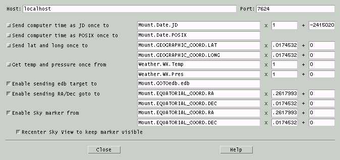The top row of this window contains two text fields by
which you to
specify the TCP/IP host and port name to which a connection is to be
made to an INDI driver or server. The default values are suitable for
running the test drivers mentioned above.
The remaining rows define the mapping between internal XEphem
functionality and the external INDI devices. All information flows over
the INDI protocol based on Properties. Each property is defined as a
Device, a Property and an array of one or more Elements. The INDI
protocol does not
prescribe the names or the meanings of Properties, it is up to the
client and servers to agree. Recommended practice will evolve as
community participation matures. The sample drivers supplied with
XEphem make some possible choices for properties and names.
The default settings in the Configuration window are the correct
mappings for these sample drivers. The idea is to specify the
Device.Property.Element that corresponds to each purpose. The
Configuration window also allows entering a multiplier and offset that
is applied to the INDI value to compute the value in units used within
XEphem. For example, the units for Mount.EQUATORIAL_COORD.RA are hours
but XEphem
wants this value in radians, hence the multiplier set to 0.2617993.
When connecting to drivers for which the
name mapping is not yet known, one technique for discovering their
Properties is to watch the INDI Control Panel (described next) for each
new Property that is reported when connecting toan INDI server.
One of the options is whether to display a marker at the
telescope position on the Sky View. Below this ia a toggle button to
specify whether the Sky
View will automatically Recenter in order to keep the telescope
Marker in the
field of view. The option applies both to INDI and fifo marker
commands. When Recenter is On, then the telescope Marker is
automatically turned off whenever the Sky View is manually adjusted
(the rationale being that one will most likely not want the Sky View to
bounce back to the telescope position after having been manually
changed).
Note that the sample drivers do not support all XEphem functionality.
For example, the sample drivers do not support being sent a new time
and date. This is included in XEphem in case it is useful someday for
some other driver and to illustrate how XEphem stores dates internally
as a modified Julian date, ie, with an offset of 2415020 removed.
5.8.3 INDI Control Panel
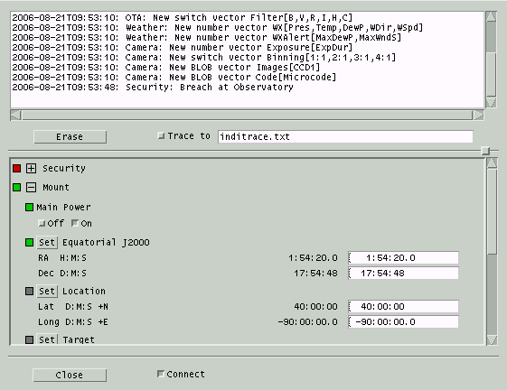This window shows the realtime operation of an INDI
server. It is
divided into a top and bottom section. The proportion of screen space
used by each half may be controlled using the sash control located
just about the bottom scrolled area.
The top half is a scrolled text area that shows the status messages
arriving from each device. Each message is preceded with a time stamp,
followed by the Device followed by the message text. The Erase
button will permanently remove all messages from the scrolled text.
Clicking on the Trace to button will append the current set of
messages to the file named in the text field to the right and append
all further messages to this file until tracing is turned off.
The bottom half shows each INDI Device, Property and Element to which
XEphem is connected. Each Device may be expanded or collapsed to
control screen space. The entire list can be scrolled up and down. The Connect
button controls whether XEphem will connect to the INDI device whose
host and port are defined in the INDI Configuration window. If a
connection is successful, each of the reported Properties will appear
in the bottom scrolled area.
Under each Device is a list of its Properties. Each INDI Property may
be in one of four states: Idle, Ok, Busy and Alert. These are shown as
a light to the left of the Property colored gray, green, yellow and
red, respectively. To the left of each Device is also a light, colored
the same the highest activity color of any of its Properties. In this
way the status of the most active Property can be determined even when
a Device is collapsed in the window.
INDI Properties can be one of four types. These are Numeric, Text,
Switches and Lights. The first three may be read-write or read-only. A
light is always considered read-only (set only by the Device, not by
the operator). Each Element of each Property is shown on one line. The
left side of the line is the label. Following the label is the current
value and, if read-write, followed by a text field for entering a new
value. Read-write Properties will have a push button to the left of
their name to set a new value; pressing Return in the text field will
also set a new value. Switches will show each switch with their label.
Switches may be defined to operate according to the rules one-of-many,
any-of-many and at-most-one.
5.8.4 FIFO Control
Completely separate from the INDI interface, Sky View implements two
simple
fifos for communicating with a telescope control dæmon or other
processes or scripts. Each fifo must be in either the
Private
or
Shared
directory.
- Inbound: A marker may be placed on the Sky View by
writing a text string to the fifo named fifos/xephem_in_fifo.
The format allows for sending either equatorial or horizon coordinates.
To send an equatorial coordinate, the format is "RA:X Dec:Y",
where X
and Y are in radians at epoch 2000.0. To send a horizon coordinate, the
format
is "Alt:X Az:Y", where X and Y are in radians. The Sky View
center pointing position will be changed if necessary to make the
marker
visible. XEphem attempts to open this fifo each time the Sky View
window is
opened and closes it when the view is closed.
- Outbound: If a process has the fifo named fifos/xephem_loc_fifo
open for reading when the Sky View popup menu is activated, then the
menu will
offer a button to send the cursor position to this fifo. The format is
the
same as a line in .edb format. If it is not already open XEphem
attempts to
open this fifo each time the popup is activated, and leaves it open
until
writing to it fails. Each position sent to the fifo is added to the
Telescope history list.
5.9 Sky View History menu
This is the Sky View History control window. All Sky View Options,
Filter settings and pointing values may be saved in a History entry to
make it easy to configure the same way again at a later time. The Edit
pushbutton in the History pulldown menu brings up this window. The
additional pushbuttons in the History pulldown menu correspond to each
defined History entry and make it easy to apply any one history entry
without opening the History control window.
The control window shows the current set of History entries, one per
line. The left portion of each line contains several controls,
described below. The center portion summarizes the entry, showing the
display mode, coordinate system, center position and field of view. The
right portion provides a text field to give the entry a name. This is
the name which appears in the History pulldown menu.
The controls for each History entry are as follows:
Apply
puts the entry into effect, in the
same way as choosing it from the pulldown menu.
Up
Down
moves the entry up or down in the list.
Delete
removes the given entry.
Replace
replaces the entry with the current
Sky View settings.
The buttons across the bottom allow for
additional control of the History list as a whole:
Add
captures the current Sky View
settings
and creates a new History entry. A default name will be created but
you should probably change it to something more descriptive if you
plan to Save the list.
Save
writes all of the current History
entries to a file. The file name is
xephem_skyhist
and will be created in the
Private
directory. You really don't want to know the format of this file.
Load
reads an existing file of History
entries that has been previously Saved and makes them the current
set.
5.10 Sky View Binary Star Map
 This window displays a map of a
binary
star system and a matching ephemeris. It is displayed from the popup
that appears when the mouse is right-clicked over a binary object in
the Sky View.
This window displays a map of a
binary
star system and a matching ephemeris. It is displayed from the popup
that appears when the mouse is right-clicked over a binary object in
the Sky View.
The map is at left, oriented with equatorial N up and E left, as on the
unaided sky. Each star is drawn in a color according to its spectral
class. The primary star is drawn at the center. A scale at the bottom
shows the sky dimensions of the plot.
If complete orbital elements are available, one orbit is plotted at
equal time intervals marked by small dots. The largest dot in the orbit
marks the position of the secondary nearest to the current XEphem time,
medium size dots mark other locations each ten steps.
If only discrete positions for the secondary are known, the plot is
simply one dot for each.
The table on the right lists the position of each plotted secondary
position. The columns are the dot number, year, separation in arc
seconds and
position
angle as degrees East of North. The separation and position angle at
the current XEphem time are available in the More info pull-right menu in the Sky
View popup.
The Print button will print the map and the list.
6.0 Tools menu
The tools menu provides access to a variety of functions.
6.1 Plot values
 This window controls the plot generation and display
functionality of XEphem. You may select most numeric information
displayed throughout XEphem, in pairs, to form x/y coordinates of a
plot. You may select up to 40 such pairs. You then specify a file in
which to write the plot information. XEphem adds one line of
information
to the file for each x/y pair each Update iteration step. XEphem can
then plot any such file on the screen.
This window controls the plot generation and display
functionality of XEphem. You may select most numeric information
displayed throughout XEphem, in pairs, to form x/y coordinates of a
plot. You may select up to 40 such pairs. You then specify a file in
which to write the plot information. XEphem adds one line of
information
to the file for each x/y pair each Update iteration step. XEphem can
then plot any such file on the screen.
Selecting data to plot
Click the toggle labeled Select fields to plot to make each
field in the other windows that are eligible for plotting appear as
a pushbutton. Select each such button as desired to form the x or y
component of a plot. As you make the selections, they are listed in
the table. Use the Undo button
to make changes. You may also associate a tag with each line, up to 8
characters in length. These tags will be included in the plot display
for identification later. Once all the field choices have been made you
may return all the windows to their normal operational appearance by
deselecting the same toggle button.
Saving
and restoring a plot configuration
To save this configuration so it can
be
loaded later, specify a file name and click
Save config file. It will be saved
in the
Private directory. The plot
entries will be savde in addition to the plot title field. The
extension for plot configuration files must be
.ptc and will be added automatically
if left off. A configuration file may be
loaded by selecting it from the option popup menu to the right of
Load config file. The menu will list
all files that reside in the Shared and Private directories with
extension .ptc. Note that reloading a configuration only recreates the
Plot's tag, x and y description; to be useful, the fields to which the
reloaded configuration refers must be made active independently.
Specifying the plot file name and title
Type the name of the file to be used
to
contain the plot information in the text field provided. The
extension must be
.plt and
will be added automatically if left off. When
XEphem first needs to write to the file, it will first check for the
existence of the file and, if it already exists and the
Confirmations
Preferences is On,
ask
whether you wish to append to the file or overwrite it.
Enter a short
title for the plot information in
the
text field provided. When XEphem first writes to a plot file, it
will place the contents of the title text field, if it is not empty,
into the file as a comment. All lines within a plot file that do not
begin with an alphanumeric character are considered comments and are
ignored. If the first line of a file is a comment, XEphem will use
it as the title when it displays the plot.

Once the fields have been specified
and
the plot file named and titled, you may select the
Create plot file toggle button when
ready. Now each time XEphem goes through one Update iteration the
values
you have selected and their tags will be written to the plot file.
Note that when plotting is activated, XEphem does not update the
screen until the N Steps count in the Main window
looping section goes to 1. This greatly
speeds the creation of plot files by avoiding screen updates. If you
wish to watch each iteration, set N Steps to 1 and click the Update
button manually for each iteration.
Once all the desired data has been entered into the plot file, toggle
the plot button back off to flush all data and close the file. The
windows that contain each of the fields used in the plot need not be
visible while the plot is being generated. However, each field must
be active, for example its row and column must be selected if they
are in the Data table.
Existing plot files may be viewed by
choosing it in the menu to the right of Show
plot file. The menu will list all files that reside in the
Shared and Private directories with extension .plt. As many different
plot files may be viewed simultaneously as desired. Each plot has
separate controls for flipping the X and Y axes and for turning on
and off a reference coordinate grid. The position under the cursor is
displayed above the top of the plot. The XEphem distribution kit
includes a sample plot file of the analemma.
6.2 List values
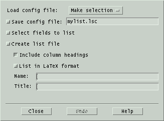 This window controls the
list generation functionality of XEphem. The fields you select define
columns of a table written to a file as XEphem runs. The text in
these columns looks exactly like their corresponding fields on the
XEphem windows and so are more familiar and readable than the entries
in plot files. They are designed to be used in
further text processing operations or printed as-is. Two spaces are
placed between each column.
Selecting data to list
Select the Select fields toggle button to
make each field in the other windows that are eligible for listing
appear as a pushbutton. Select each such button as desired to define
each column of the listing. As you make the selections, they are
listed in the table here. Use the Undo
bottom to make changes. Once all the column choices have been made
return all the windows to their normal operational appearance by
deselecting the same toggle button.
Saving and restoring a plot configuration
To save this configuration so it can
be
loaded later, specify a file name and click
Save config file. It will be saved
in the
Private
directory. The name of each list item will be saved in addition to the
column and latex options and title field. The extension for list
configuration files must be
.lsc
and will be added automatically if left off.
A configuration file may be loaded by selecting it from the option
popup menu to the right of
Load
config file. The menu will list all files that reside in the
Shared and Private directories with extension .lsc. Note that reloading
a configuration only recreates the Listing fields; to be useful, the
fields to which the reloaded configuration refers must be made active
independently.
Specifying the listing file name and
format
Type the name of the file to be used to
contain the listing in the text field provided. When XEphem first
needs to write to the file, it will first check for the existence of
the file and, if it exists, ask whether you wish to append to the
file or overwrite it.
Choose to print the file in LaTeX
table format by pressing the given button before beginning to list to
the file.
When column headings are
turned
on, they are written to the output file each time the file is
opened.
All lines within a listing file that
do
not begin with an alphanumeric character are considered comments and
are ignored. When XEphem first writes to a listing file, it will
place the contents of the title
text area, if it is not empty, into the file as a comment for your
convenience.
Generating the listing entries
Once the fields have been specified
and
the listing file named and titled, if desired, select the
Create list file toggle button. Now
each time XEphem goes through one iteration the values you have
selected
will be written to the file. Note that when listing is activated,
XEphem
does not update the screen until the N Steps count in the Main window
looping section goes to 1. This greatly
speeds
the creation of plot files by avoiding screen updates. If you wish
to watch each iteration, set N Steps to 1 and click the Update
button manually for each iteration.
Once all the desired data have been entered into the listing file,
toggle the list button back off to flush all data and close the
file. The windows that contain each of the fields used in the
listing need not be visible while the list is being generated.
However, each field must be active, for example its row and column
must be selected if they are in the Data table.
6.3 Solve equation
 This
window controls the automatic equation solving facility. You define an
arithmetic or boolean function, using most of the fields XEphem
displays, then XEphem will automatically evaluate the function and
adjust the time on each iteration to solve for the goal. To set up a
function to solve, follow these steps: Enter a function, Compile it,
Select a goal, Set the desired accuracy, Enable solving, Start the
solving process. Each of these steps is described below.
This
window controls the automatic equation solving facility. You define an
arithmetic or boolean function, using most of the fields XEphem
displays, then XEphem will automatically evaluate the function and
adjust the time on each iteration to solve for the goal. To set up a
function to solve, follow these steps: Enter a function, Compile it,
Select a goal, Set the desired accuracy, Enable solving, Start the
solving process. Each of these steps is described below.
Entering the function
The function may be any arithmetic
expression, in C-language syntax. All of C's comparison, logical and
arithmetic operators are supported as well as several common
arithmetic functions. The complete list is:
+ - * /
&& || > >= == != < <= abs floor sin cos tan asin
acos atan degrad raddeg pi log log10 exp sqrt pow atan2
The function is entered into the text line provided. It may utilize
most of the fields from the other XEphem windows. Press the Enable field buttons button to
make each available field a button. Where ever a field is desired in
the function, position the text insertion cursor at the desired
position and select the field; its name will be inserted into the
function text. When you are finished defining the function, turn off
the field button appearance by selecting the Enable button again.
Compiling the function
Once the function has been created as
desired, it must be compiled by selecting the Compile button (or by pressing the
Enter key on your keyboard). If there are any errors, a diagnostic
message will appear just below the function. Once a function has
been successfully compiled, the message will read No compile errors.
If the function is modified, a message will remind you that it has
not been compiled. Each time a function is successfully compiled,
XEphem updates all fields and evaluates the function. As explained
below, this can be used as an astronomical calculator even when not
actually solving anything.
Selecting a goal
You may choose from any of four
evaluation algorithms, as selected by the trio of radio buttons.
Find Maximum and
Find Minimum
will solve for a maxima
or minima of the function, respectively.
Find 0
will solve for a time when the function evaluates to zero.
Binary will keep incrementing time
by
Step until the state of the function
changes, then do a binary search to find the exact time when the
function changes state. Binary search interprets a function that
evaluates to zero to be in one state and all other values to be the
opposite state. Generally, binary functions are comprised of logical
operators at their outermost expression levels.
Specifying the desired accuracy
Searching will automatically stop when
the time changes by less than the desired accuracy value. Note that
this method of detecting convergence is not based on the value of
the search function itself.
Enabling the solver
Once the function is defined and it
compiles without errors, you may enable searching for a solution by
selecting the button at the top labeled
Solving is Active. Then,
referring now to the
looping section of
the
Main window, each time an Update occurs the solution advances by one
time step until either N Steps iterations have occurred or until
Step becomes less than Accuracy. The initial time and step size are set
from the Main window, and are adjusted automatically as the solution
proceeds. Note that by setting N Steps to 1 and repeatedly selecting
Update you can effectively single-step the process. Solving will
automatically turn off when convergence is detected, the function is
edited or you may turn it off manually at any time by clicking
Solver is Active back off.
To save the Function, Goal and
Accuracy
so it can be loaded later, specify a file name and click
Save to. It will be saved in the
Private directory. The extension for
solver configuration files must be
.svc
and will be added automatically if left off.
A configuration file may be loaded by selecting it from the option
popup menu to the right of
Load file.
The menu will list all files that reside in the Shared and Private
directories with extension .svc. Note that reloading a solver
configuration only recreates the solving conditions; to be useful, the
fields to which the reloaded Function refers must be made active
independently.
When selecting fields for plotting or listing a button appears labeled Use for plotting. You may select
this button to use the evaluated function as an item in the plot or
listing feature. Note that the function may be used in plotting or
listing whether or not actual solving is turned on.
The windows which contain the fields used in the function being
solved need not be visible while solving is in progress. However, the
field must be active, for example their row and column must be
selected if they are in the Data table.
The Close button removes
the Solving window from the screen; it does not effect actual solver
operation in any way.
A successfully compiled function is evaluated each time XEphem
updates. Whenever the function is compiled it is also evaluated using
freshly updated values. In this way, the Solve window can actually be
used as an arbitrary astronomical calculator at any time, whether or
not solving is actually active.
Solving periodic functions can lead to solutions far from the
intended range. You will get best results if you can start the search
near the expected answer and with a modest step size that will reach
the the
nominal solution within a few steps. You can use the plotting
feature to
study
a function and get an idea of the solution, then use the solver
feature to zero in.
Each plot file may be added to a movie loop or
overlayed with text or graphical annotation
using the menu items in the Control menu of each plot.
6.4 Find close pairs
 This
window allows you to scan the list of objects currently in memory
brighter than a given magnitude for all pairs which are separated by
less than a given angular distance. Separations will be topocentric or
geocentric depending on the Equatorial Preference
in the Main menubar. The scan does not include field
stars.
This
window allows you to scan the list of objects currently in memory
brighter than a given magnitude for all pairs which are separated by
less than a given angular distance. Separations will be topocentric or
geocentric depending on the Equatorial Preference
in the Main menubar. The scan does not include field
stars.
These are the essential steps:
- Set the desired maximum separation, in degrees, and faintest
magnitude.
- Set other options via the Options menu, described below.
- Start the scan via the Run button in the Control menu.
- When the scan completes, all pairs meeting the criteria will
appear in the scrolled list.
The columns in the list are:
- Object 1 Magnitude
- Object 1 Name
- Object 2 Magnitude
- Object 2 Name
- Separation, in Degrees:Minutes:Seconds
The entries are sorted in increasing order of separation. The total
number of pairs found and current conditions are reported above the
list and the time when the scan was performed is indicated in the time
stamp label below the list.
6.4.1 Close Pairs Control
menu
Run
This performs one scan. The XEphem
cursor will change to the Watch shape until the scan is complete at
which time the results appear in the scrolled list.
Sky Point
This will place a cross-hair over the
first object of the selected pair on the
Sky View,
re-aiming if it is currently not in the field. Either select the
pair in the list then press this button, or double-click on the
pair in the list. (These commands do nothing if the Sky View is not
currently up.)
List to file...
This selection allows writing the
current list to a file. A window is presented which allows you to enter
a file name. The file is written when you click Ok.
The format of the file begins with a header line that captures the
conditions in effect when the set of close objects was built.
Following the header, there is one line per pair with exactly the
same information as appears in the window list.
Close
This closes the Close Pairs window.
Note that the Auto run option
is
disabled when the window is closed.
6.4.2 Close Pairs Options
menu
Auto run
When this option is active, a scan for
close objects is performed automatically each time an Update is
commanded from the Main window. The prior list is discarded each
time. The scans are not performed if the Close Pairs window is closed.
Auto list
When this option is active, the
results
of each scan are automatically appended to the file last specified
in the List to file window.
This
works whether the scan was performed explicitly via the Control » Run command
here
or implicitly via an Update from the Main window and the Auto run option is active.
Omit fixed pairs
When this option is active, pairs of
Fixed objects are not listed.
Omit planet's own moons
When this option is active, pairs for
which both objects are part of the same planetary system are not listed.
6.4.3 Close Pairs Algorithm
The sky dome is broken into bands of
constant Dec with height equal to the given separation. The database
is scanned once and each object brighter than the given limit is
dealt into its band and the one adjacent in the direction of the
North pole. Each band is then sorted by RA. Each band is then
scanned for close pairs, with rapid cutoff detection due to the
sort. The final list is then sorted by separation, and displayed.
Total time is strongly influenced by the number of pairs in the result.
So when using wide separations it helps to use relatively bright
limiting magnitudes.
6.5 Night at a Glance
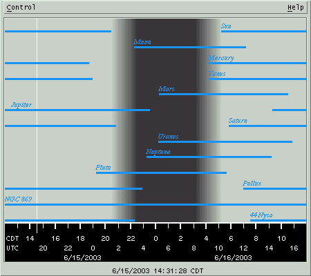 This
window displays a 24 hour period with local midnight in the center.
Across the bottom is a scale marking local dates and time and UTC time,
at each even hour. The current XEphem time is marked with a thin
vertical line.
The background gray shading shows when the Sun is up, down and periods
of twilight. The twilight period matches the Sun Dip setting in the
Main window Night section.
Overlayed on the gray background is one horizontal line for each Favorite. The lines show when the object is
above the horizon, the altitude of which is defined in the View » Data Table »
Control » Setup horizon parameter. The lines on the
diagram
pack closer together as the number of objects to display increases; if
things get too crowded try turning off some of the Favorites.
NAAG Control menu
NAAG mouse
Right-clicking near an object's line will pop up a menu
containing its rise, transit and set data. This information is
with respect to the day in which the click occurred.
If the mouse is clicked far from any object, then just the time at that
horizontal position is presented.
The menu always includes a button showing the exact moment
corresponding to the mouse click position. Clicking the button sets the
main XEphem time to this moment.
An interesting exercise is to set up a time loop with a Step size of
a few days and watch how the rise and set times of objects and the
amount and timing of night time are effected throughout the year.
6.6 Coordinate converter
 This window performs simple conversions
among several common astronomical coordinate systems. Simply edit (or
paste) any coordinate and the others will update immediately. All
fields are in units of Degrees except RA is in Hours. Fields may be
entered in either sexagesimal or decimal format. For example, either
10:30:00 or 10.5.
This window performs simple conversions
among several common astronomical coordinate systems. Simply edit (or
paste) any coordinate and the others will update immediately. All
fields are in units of Degrees except RA is in Hours. Fields may be
entered in either sexagesimal or decimal format. For example, either
10:30:00 or 10.5.
Altitude and Azimuth are with respect to the time and location set in
the Main window. These will change to correspond to the RA and Dec
values if an Update is performed.
The top row are astrometric RA and Dec precessed to the given equinox
year, or enter EOD for apparent coordinates at the current epoch.
Unlike the other fields, edits to the equinox field only take effect
on Enter.
The next row are RA and Dec using whatever is set in the Main Window.
The controls across the bottom perform as follows
Close
Closes this window
Sky Point
Centers the Sky View at the current coordinates.
Eyepiece
Places an eyepiece in the Sky View at the coordinates
shown. The Sky View is not recentered. In order to be drawn the Sky
View
Eyepieces Option must be turned on.
Get Sky
Loads each field from the current center position of the
Sky View.
Canonize
Reformats each field in a consistent manner for easier
viewing.
6.7 Observers
logbook
 This
tool lets you store observing circumstances and notes. It is typically
used when making observations at the
telescope.
This
tool lets you store observing circumstances and notes. It is typically
used when making observations at the
telescope.
When this window is open, the popup you get when right-clicking on an
object in the Sky View will contain a selection Add to logbook. Clicking on this
choice will automatically fill in the top section of fields in the
logbook pertaining to
observing
circumstances and object information. To these fields you may add your
own Notes in the scrolled text
area at
the bottom, and equipment or User
defined fields if desired.
There are two interesting controls available across the bottom as
follows:
List
This brings up a scrolled list showing
all entries in the logbook whose fields match those selected in the
S
column. The field may contain
glob patterns
for a textual match or be
preceded with < or > for a numerical range match. Only those
fields selected with the
L column will be
shown, and they may be sorted by the field selected in the
K
column.
You may
Save the resulting scrolled list to a text file using
the
file name field provided. Right-clicking on an entry in the scrolled
list will mark the location of that log entry in the Sky View based on
its RA2000 and Dec2000 field values.

Add
This will add the current record to
the
logbook file. In keeping with the convention that log books are written
in ink, there is no mechanism provided for editing or removing existing
entries. Of course, one may always edit the log file independently.
File format
The Observers logbook is a text file in XML format. The format should
be pretty self-explanatory. The file name is xelogbook.xml in the Private
directory. The entire logbook is
contained in one XML element tagged xelogbook
with a version attribute 1.1.
Each log entry is in an element tagged logentry.
Within each logentry is
one element named the same as the label in the window, sans spaces if
any. The date fields are stored in the user's preferred format.
6.8 Movie
loop
 The Movie tool allows you to capture any
number of View, Night at a Glance or Plot windows and collect them into a movie. The
frames of the movie can be viewed one at a time or you can set the rate
to change from one frame to next automatically. There are many uses for
this type of function. For example, you could make small changes in
time and make a series showing the movement of an asteroid through the
solar system. Or use it to quickly blink between two FITS images, one
with and one without a potentially new supernova. You might find the Image Registration feature useful to make these
images.
The Movie tool allows you to capture any
number of View, Night at a Glance or Plot windows and collect them into a movie. The
frames of the movie can be viewed one at a time or you can set the rate
to change from one frame to next automatically. There are many uses for
this type of function. For example, you could make small changes in
time and make a series showing the movement of an asteroid through the
solar system. Or use it to quickly blink between two FITS images, one
with and one without a potentially new supernova. You might find the Image Registration feature useful to make these
images.
The Control menu has entries to Delete current frame or
Delete all frames of the movie. You may also Save the
frames to individual PNG files. You must specify a prefix then each
file name will be of the format prefixnnn.png where nnn will be
a sequence number starting with 000. The files will be located in the Private directory. XEphem does not save
the frames directly as an actual movie because there are many such
formats and other tools available to collect the files into a movie in
your preferred format. For example, you could convert the PNG files
into GIF files using pngtopnm and ppmtogif tools
from the netpbm
toolkit then make an
animated gif using whirlgif
or gifsicle.
Another possibility is to use convert which is part of the
ImageMagick
collection. Check your system before looking too far, these tools are
often
already installed on many UN*X systems.
Sliding the Frame selection scale will display the indicated
frame. Step +1 and -1 will advance or back up by one
frame. Frames may also be changed automatically by sliding the Frames
per second scale to the desired rate. Changing the displayed frame
manually by any means will automatically reset the frame rate back to
zero. When moving through the frames automatically and encountering the
last frame in the series, the sequence can either reverse and show each
frame back towards the first or jump back to the first and move
forwards again, depending on the Bounce toggle button.
Each window whose contents may be added to a Movie will have an entry
somewhere in its menu bar named "Add to movie". All such windows also
support a short cut of typing Control-m to add the window to the Movie,
so long as the cursor focus is located within the desired window.
7.0 Data menu
The Data menu offers several means to load, search and update the
files XEphem uses for storing objects.
7.1 Files
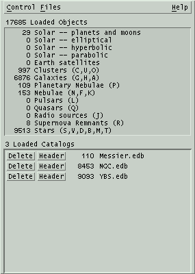 This
window allows you to load and delete database files to and from memory.
These objects form what is referred to as the XEphem database. These do
not
include the field stars.
Click the Files menu to scan the Private
and Shared directories and pop up a list of all .edb and .tle files
found therein. Click on a file to load it into XEphem memory.
The top section of the window displays a count of each major type of
object and the total number in the database. The counts include Favorites that are not also in the database.
The bottom section lists the catalogs which are currently loaded and
the number of new objects they contributed to memory. Buttons to the
left of each catalog allow the catalog to be Deleted from memory and to display
the Header of the catalog.
The current list of loaded catalogs may be saved so it becomes the
ones automatically loaded when XEphem starts. To do so, go to Preferences » Save and Save the XEphem.DBInitialFiles resource under the
Data Base category.
7.1.1 Files Control menu
Index...
This is a handy shortcut to open the object
index.
Delete all
This deletes all loaded data. The files on disk are not
effected.
Reload all
This reloads all catalogs currently loaded. This is handy
when catalogs have been updated on disk, perhaps by some by some
automatic means.
Open DB Fifo
Listen for database objects arriving via a fifo from
another process. XEphem attempts to reopen the fifo each time the
button
is pressed. The file name of this fifo is "fifos/xephem_db_fifo" in either the
Private or Shared directory. All relevant displays are automatically updated
when data arrives via this fifo. The format of the fifo data is
exactly the same as for any XEphem database file. Due to the way the
fifo data is read and processed, it is important that each line be
terminated with a newline; incomplete last lines can result in loss
of information.
Make Favorite when read 1
If this toggle is on then when a new database file is
loaded and it defines exactly one object, it will also be assigned to
the list of Favorites. This feature also
applies for files loaded when XEphem first starts.
Check alternate names
This toggle turns on or off support for XEphem 3.6's new
support for alternate names. It is motivated entirely by performance.
Recording alternate names and checking for duplicates is quite
expensive and
if not needed can speed up loading and deleting catalogs significantly.
If this toggle is On then when a new database
catalog is loaded each entry's alternate names, if any, will be checked
for
already being loaded and not loaded if found, and new alternates will
be
stored for display and subsequent checking. If this toggle is Off, only
the
first name of each entry is stored and no duplicate names are checked.
Note that even when this option is Off, deleting a catalog still
requires
XEphem to remove all alternate names that might have been recorded when
the
catalog was loaded, so the full performance advantage is only achieved
if this
option was off when each catalog is loaded.
Close
Closes the Data Base window.
7.1.2 File format
This section describes the format of an XEphem database file. The
file name extension is .edb. See the next section for files containing
two-line Earth satellite elements.
7.1.2.1 General format
rules
- Each object occupies one line in the file.
- The order of objects in a file does not matter.
- Lines beginning with anything other than a-z, A-Z or 0-9 are
ignored and may be used for comments.
- Lines are separated into Fields using commas (,).
- Fields may be further subdivided into Subfields with vertical
bars (|).
- All date fields may be in either of two forms:
- month/day/year, where day may contain a fractional portion.
examples: 1/1/1993 and 1/1.234/1993 . Note the format of dates in
database files is always M/D/Y, regardless of the current XEphem
Date format Preference setting; or
- the year as real number as indicated by the presence of a
decimal point, such as 1993.123.
7.1.2.2 Format Details
The first two fields are required and
are always Name and Type. Remaining fields depend on Type.
Field 1
|
One or more object names, each
separated by the Subfield separator, |. Any number of characters may be
present in the file but XEphem only uses the first 20 characters of
each name and only the first 20 names.
|
| Field 2 |
Type designation. Consists of a
single letter designation from the following set (case is significant):
f
|
fixed (or at most exhibits
constant curvilinear proper motion) |
e
|
heliocentric elliptical
orbit |
h
|
heliocentric hyperbolic
orbit |
p
|
heliocentric parabolic
orbit |
E
|
geocentric elliptical
orbit, i.e., Earth satellite |
P
|
built-in planet or natural
satellite name |
|
If
Field 2 is
f the object is fixed and
the
following fields and subfields are defined:
|
SubField 2A |
An optional SubField 2A can be
added to further define an object class code, consisting of
one character from the following list:
A
|
Cluster of galaxies |
B
|
Star, binary. Deprecated
as of version 3.6, gets turned into D internally. Use Field 2
type B if more than one position angle and separation or
orbital elements are
known.
|
C
|
Cluster, globular |
D
|
Star, visual double |
F
|
Nebula, diffuse |
G
|
Galaxy, spiral |
H
|
Galaxy, spherical |
J
|
Radio |
K
|
Nebula, dark |
L
|
Pulsar |
M
|
Star, multiple |
N
|
Nebula, bright |
O
|
Cluster, open |
P
|
Nebula, planetary |
Q
|
Quasar |
R
|
Supernova remnant |
S
|
Star |
T
|
Stellar object |
U
|
Cluster, with nebulosity |
Y
|
Supernova
|
V
|
Star, variable |
|
|
SubField 2B |
If SubField 2A is one of T, B,
D, S or V, optional SubField 2B may consist of up to two spectral
designation characters, typically one letter followed by one numerical
subclass designator. Two examples are O and G3. |
|
|
If SubField 2A is any other
class code, optional SubField 2B may consist of up to two additional
characters to further describe the type.
|
| Field 3 |
Astrometric RA
position coordinate in equinox given by Field 6 always at epoch 2000, given as H:M:S. |
|
SubField 3A |
This optional subfield may
specify a proper motion in RA. It is in milliarcseconds per
year on the sky, i.e., ΔRA*cos(dec). |
| Field 4 |
Astrometric Declination
position coordinate in equinox given by Field 6 always at epoch 2000, given as D:M:S. |
|
SubField 4A |
This optional subfield may
specify a proper motion in Dec. It is in milliarcseconds per
year on the sky |
Field
5
|
Magnitude
of the object. |
Field
6
|
This
optional field is the reference epoch. It is assumed to be
2000 if absent |
| Field 7 depends on SubField 2A |
| If SubField 2A is G
or H |
Field
7
|
Galaxy
major axis, in arcseconds |
|
SubField 7A |
Galaxy minor axis, in arcseconds |
|
SubField 7B |
Major axis position angle, in
degrees East of North |
| If Subfield 2A is B
or D |
| Field
7 |
star
pair separation, in arcseconds
|
|
SubField 7A |
reserved, set to 0 |
|
SubField 7B |
position angle, in degrees East
of North |
| Otherwise Field 7 is
optional but if present |
| Field
7 |
size of
the object, in arcseconds. It is assumed to be 0 if absent. |
If
Field 2 is
B the object is a true
binary pair and
the
following fields and subfields are defined.
|
SubField 2A |
An optional SubField 2A can be
added to further define an binary class code, consisting of
one character from the following list. This scheme is taken from the
Washington Multiplicity catalog for compliance with the IAU 2003
recommendation.
a
|
Astrometric binary
|
c
|
Cataclysmic variable
|
e
|
Eclipsing binary
|
x
|
High-mass X-ray binary
|
y
|
Low-mass X-ray binary
|
o
|
Occultation binary
|
s
|
Spectroscopic binary
|
t
|
Single-line spectroscopic
binary
|
u
|
Double-line spectroscopic
binary
|
v
|
Spectrum binary
|
b
|
Visual binary
|
d
|
Visual binary with common proper motion
|
q
|
Visual binary - optical
|
r
|
Visual binary - physical
|
p
|
Exoplanet
|
|
|
SubField 2B |
Up to two characters to specify
the spectral class of the primary star, typically one letter followed
by one numerical subclass designator. Two examples are O and G3. |
|
SubField 2C |
Up to two characters to specify
the spectral class of the secondary star,
typically one letter followed by one numerical subclass designator.
Two examples are O and G3. |
| Field 3 |
RA
position coordinate, given as H:M:S. |
|
SubField 3A |
This optional subfield may
specify a proper motion in RA. It is in milliarcseconds per
year on the sky, i.e., ΔRA*cos(dec). |
| Field 4 |
Declination
position coordinate, given as D:M:S. |
|
SubField 4A |
This optional subfield may
specify a proper motion in Dec. It is in milliarcseconds per
year on the sky |
Field
5
|
Magnitude
of each star in the pair. |
|
SubField 5A
|
Magnitude of the primary star
|
|
SubField 5B
|
Magnitude of the secondary star
|
Field
6
|
This
optional field is the reference equinox year. It is assumed to be
2000 if absent |
Field 7
|
This field may contain
either 3 or 6 subfields (one or two triples of year/separation/position
angle)
or 7 subfields (orbital elements).
|
|
If 3 or 6 subfields,
they define positions grouped as the following triplets:
|
|
SubField 7A/D |
Year of the separation and position angle given
in the next two fields, decimal year or month/day/year |
|
SubField 7B/E |
Separation, arc seconds
|
|
SubField 7C/F |
Position angle, degrees E of N, referenced to
equinox in field 6
|
|
If 7 subfields, they
define a
true orbit:
|
|
SubField 7A
|
Semi-major axis, arcseconds
|
|
SubField 7B |
Inclination from plane of sky, degrees
|
|
SubField 7C |
Longitude of node, degrees
|
|
SubField 7D |
Eccentricity
|
|
SubField 7E |
Epoch of periastron, decimal year or
month/day/year
|
|
SubField 7F |
Argument of periastron, degrees
|
|
SubField 7G |
Period. Units are designated by suffix y
for years, d for days, or h for hours. If no
designation the default is years.
|
If Field
2 is e the object type
is
elliptical heliocentric (eccentricity < 1) and the remaining fields
are defined as follows:
Field
3
|
i =
inclination, degrees |
Field
4
|
O =
longitude of ascending node, degrees |
Field
5
|
o =
argument of perihelion, degrees |
Field
6
|
a = mean
distance (aka semi-major axis), AU |
Field
7
|
n = mean
daily motion, degrees per day (computed from a**3/2 if
omitted) |
Field
8
|
e =
eccentricity, must be < 1
|
Field
9
|
M = mean anomaly,
i.e., degrees from perihelion |
Field
10
|
E = epoch date,
i.e., time of M |
|
SubField 10A |
First date these elements are
valid, optional
|
|
SubField 10B |
Last date these elements are
valid, optional
|
Field
11
|
D = the equinox
year, i.e., time of i, O and o |
Field
12
|
First component of
magnitude model, either g from (g,k) or
H from (H,G). Specify which by preceding the number with a "g"
or an "H". In absence of either specifier the default is (H,G) model.
See Magnitude models. |
Field 13
|
Second component of
magnitude model, either k or G
|
Field 14
|
s =
angular size at 1 AU, arc seconds, optional |
You may have other parameters
available
for elliptical orbits that can be converted into these. The
following relationships might be useful:
P
= sqrt(a*a*a)
p = O + o
n = 0.9856076686/P
T = E - M/n
q = a*(1-e)
AU = 149,597,870 km = 92,955,621 U.S. statute miles
where
P = the orbital period,
years;
p = longitude of
perihelion, degrees
T = epoch of perihelion
(add multiples of P for desired range)
q = perihelion distance, AU
Note that if you know T you can then set E = T and M = 0.
If
Field
2 is
h the object type
is
hyperbolic heliocentric (eccentricity > 1) and the remaining fields
are defined as follows:
Field
3
|
T = date
of the epoch of perihelion |
|
SubField 3A |
First date these elements are
valid, optional |
|
SubField 3B |
Last date these elements are
valid, optional |
Field
4
|
i =
inclination of orbital plane to ecliptic, degrees |
Field
5
|
O =
longitude of ascending node, degrees |
Field
6
|
o =
argument of perihelion, degrees |
Field
7
|
e =
eccentricity, must be > 1
|
Field
8
|
q =
perihelion distance, AU |
Field
9
|
D = the
equinox year (i.e., time of i/O/o) |
Field
10
|
g
component of magnitude model. See Magnitude
models. |
Field 11
|
k component of magnitude
model
|
Field
12
|
s =
angular size at 1 AU, arc seconds, optional |
As with elliptical elements, other
parameters might be available. The relationships are generally the
same, except:
q
= a*(e-1)
If
Field 2 is
p the object type is parabolic
heliocentric (eccentricity exactly equal to 1) and the remaining
fields are defined as follows:
Field
3
|
T = date
of epoch of perihelion |
|
SubField 3A |
First date these elements are
valid, optional |
|
SubField 3B |
Last date these elements are
valid, optional |
Field
4
|
i =
inclination, degrees |
Field
5
|
o =
argument of perihelion, degrees |
Field
6
|
q =
perihelion distance, AU |
Field
7
|
O = longitude of
ascending node, degrees |
Field
8
|
D = the equinox year
(i.e., time of i/O/o). |
Field
9
|
g component of
magnitude model. See Magnitude models. |
Field 10
|
k component of magnitude
model |
Field
11
|
s = angular size at
1 AU, arc seconds, optional |
If
Field
2 is
E (note upper
case)
the object type is Earth satellite and the remaining fields are defined
as follows:
Field
3
|
Epoch of the other
fields |
|
SubField 3A |
First date these elements are
valid, optional |
|
SubField 3B
|
Last date these elements are
valid, optional |
Field
4
|
inclination, degrees |
Field
5
|
RA of ascending
node, degrees |
Field
6
|
eccentricity, must
be < 1 |
Field
7
|
argument of perigee,
degrees |
Field
8
|
mean anomaly, degrees |
Field
9
|
mean motion, revs/day |
Field
10
|
orbit decay rate,
revolutions/day^2 |
Field
11
|
integral reference
orbit number at Epoch
|
Field
12
|
drag coefficient,
1/(earth radii); optional |
XEphem arbitrarily assigns all Earth
satellites a visual magnitude of 2.0.
XEphem can also read files directly containing the venerable
Two-Line-Element (TLE) format. See next section for details.
If not specified explicitly in the edb entry, XEphem assigns the valid range
of dates for satellite elements to the greater of 100 days or the time
required for the mean motion to change by one percent either side of the
element epoch.
If
Field
2 is
P (note upper
case)
then
Field 1 must be the name
of
a built-in object for XEphem and no other fields are defined. The
following names are recognized:
Sun
Moon
Mercury
Venus
Mars
Phobos
Deimos
Jupiter
Io
Europa
Ganymede
Callisto
Saturn
Mimas
Enceladus
Tethys
Dione
Rhea
Titan
Hyperion
Iapetus
Uranus
Ariel
Umbriel
Titania
Oberon
Miranda
Neptune
Pluto
7.1.2.3 Magnitude models
The g,k magnitude model
requires two parameters to be specified. One, the absolute magnitude,
g, is the visual magnitude of the object if it were one AU from both
the Sun and the Earth. The other, the luminosity index, k,
characterizes the brightness change of the object as a function of its
distance from the Sun. This is generally zero, or very small, for
inactive objects like asteroids. The model may be expressed as:
m
= g + 5*log10(D) + 2.5*k*log10(r)
where:
m
= resulting visual magnitude
g = absolute visual
magnitude
D = comet-earth distance,
in AU
k
= luminosity index
r
= comet-sun distance.
The H,G model also requires
two parameters. The first, H, is the magnitude of the object when one
AU from the Sun and the Earth. The other, G, attempts to model the
reflection characteristics of a passive surface, such as an asteroid.
The model may be expressed with the following code fragment:
beta
= acos((rp*rp + rho*rho - rsn*rsn)/ (2*rp*rho));
psi_t =
exp(log(tan(beta/2.0))*0.63);
Psi_1 = exp(-3.33*psi_t);
psi_t =
exp(log(tan(beta/2.0))*1.22);
Psi_2 = exp(-1.87*psi_t);
m = H + 5.0*log10(rp*rho) -
2.5*log10((1-G)*Psi_1 + G*Psi_2);
where:
m =
resulting visual magnitude
rp = distance from
sun to object
rho = distance from
earth to object
rsn = distance from
sun to earth
Note that neither model takes into account the phase angle of sun light.
7.1.3 Notes
XEphem uses a different window to manage Field
star catalogs.
XEphem ships with a few perl scripts which might be helpful for
converting databases in other formats into XEphem format. These
scripts are in the tools/ directory of the source distribution tree.
7.1.4 Two-line Earth
satellite element sets
XEphem supports reading files which contain Earth satellites defined
using the the NORAD "two-line element" set format, or TLE. Because the
TLE format is quite rigid and includes a checksum within each line,
XEphem is able to search files containing other arbitrary text and find
each properly formatted TLE contained therein. Follows is a description
of the TLE. Note the line immediately preceding the TLE, line "0", is
assumed to contain a common name for the satellite, this line is only
used if the following two lines conform to TLE.
Data for each satellite consists of three lines in the following
format:
AAAAAAAAAAAAAAAAAAAAAAAA
1 NNNNNU NNNNNAAA NNNNN.NNNNNNNN +.NNNNNNNN +NNNNN-N +NNNNN-N N NNNNN
2 NNNNN NNN.NNNN NNN.NNNN NNNNNNN NNN.NNNN NNN.NNNN NN.NNNNNNNNNNNNNN
Line 0 is a twenty-four character name.
Lines 1 and 2 are the standard Two-Line Orbital Element Set Format
identical to that
used by NORAD and NASA. The format description is:
| Line 1 |
| Column |
Description |
| 01 |
Line Number of Element Data |
| 03-07 |
Satellite Number |
| 08 |
Classification (U=Unclassified) |
| 10-11 |
International Designator, last two digits of launch
year, 2000+ if < 57. |
| 12-14 |
International Designator, launch number of the year |
| 15-17 |
International Designator, piece of the launch |
| 19-20 |
Epoch Year, last two digits of year, 2000+ if < 57 |
| 21-32 |
Epoch Day of the year and fractional portion of the day |
| 34-43 |
First Time Derivative of the Mean Motion |
| 45-52 |
Second Time Derivative of Mean Motion (decimal point assumed) |
| 54-61 |
BSTAR drag term (decimal point assumed) |
| 63 |
Ephemeris type |
| 65-68 |
Element number |
| 69 |
Checksum (Modulo 10)
(Letters, blanks, periods, plus signs = 0;
minus signs = 1)
|
| Line 2 |
| Column |
Description |
| 01 |
Line Number of Element Data |
| 03-07 |
Satellite Number |
| 09-16 |
Inclination [Degrees] |
| 18-25 |
Right Ascension of the Ascending Node [Degrees] |
| 27-33 |
Eccentricity (decimal point assumed) |
| 35-42 |
Argument of Perigee [Degrees] |
| 44-51 |
Mean Anomaly [Degrees] |
| 53-63 |
Mean Motion [Revs per day] |
| 64-68 |
Revolution number at epoch [Revs] |
| 69 |
Checksum (Modulo 10) |
When reading a TLE entry, XEphem assigns the valid range of dates for a set of
elements to the greater of 100 days or the time required for the mean motion
to change by one percent either side of the element epoch.
7.2 Index
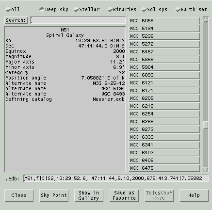This
window shows a list of all objects currently loaded into memory sorted
by name. Or, by chosing a toggle button across the top, the list can
be restricted to just deep sky, stellar, binary systems, solar system
and
Earth
satellites. The list does not include Favorites.
Each object name, including all alternate names, are in the scrolled
list on
the right. Clicking an arrow
button moves the list by one object up or down; clicking above or below
the thumb
control scrolls the list so that the top object moves to the bottom or visa versa. Clicking on an object
displays its defining parameters in the box to the left, and also
displays its .edb file format entry in the read-only text field below.
The list of objects may be searched by entering a glob pattern in the Search field then
typing Enter or clicking Search. If more than one object name matches,
clicking Search again scrolls to the next candidate; the search wraps
back to the front when no more are found.
Buttons across the bottom function as follows:
Sky Point
This will mark the object currently selected in the
Sky
View, repointing if necessary to move it into the field of
view.
Show in Gallery
If this object is in the
Gallery, this button will be available and will
display the object.
Save as Favorite
This button will add the object
currently
selected to the list of
Favorites.
Tel Goto
This will send the object currently
selected to the
Telescope control
system. Whether this button is active depends on the state of the
telescope control subsystem when the Index window was opened. If the
button state is incorrect, close and reopen the Index window.
7.3 Favorites
 This
window allows you to add, arrange, remove and temporarily deactivate an
arbitrary collection
of XEphem objects, called Favorites. Once defined as a Favorite, the
object remains available whether or not its original database file is currently loaded.
This
window allows you to add, arrange, remove and temporarily deactivate an
arbitrary collection
of XEphem objects, called Favorites. Once defined as a Favorite, the
object remains available whether or not its original database file is currently loaded.
Favorites have special significance in several places throughout
XEphem. For example the rows in the Data Table
and in the Night at a Glance windows are
exactly those of the Favorites. The Earth view
shows those Favorites which are satellites. Favorites are available
very
easily in the Favorites menu in the Sky View.
And the Solar System view displays those
Favorites
that are within the solar system.
Objects may be added to the list of Favorites in several ways:
- from the Data
»
Index
window by browsing the objects currently loaded in memory then clicking
Favorite;
- from buttons labeled Favorite located in several dialogs
throughout XEphem;
- from buttons in the popup menus of several views when clicked
over displayed objects; and
- by entering its .edb format definition in the text field near the
bottom of the Favorites window and clicking Add edb.
Note this field may also be used to edit an existing Favorite in-place.
Each entry in the Favorites list shows its complete .edb format
definition. Each entry has the following controls:
Del
removes the entry from the Favorites
list
Up and Down arrow buttons
move the entry up and down to arrange
the Favorites into any designed order. This is useful where Favorites
define rows such as in the
Data Table and
Night at a Glance windows.
specifies whether to use or hide the
entry from
the rest of XEphem without actually Deleting it.
The buttons across the bottom allow you to Save the current set
of Favorites to a file and later Load them again.
The suffix of these files must be .fav and will be added
automatically if not included in the file named in the text field. When
XEphem first starts, it automatically
loads the file named in the Save text field. To save this file name, go
to Preferences » Save
and Save
the XEphem*Favorites*File resource under the Favorites category.
7.4 Download
 This
window provides an easy means to download from the Internet to disk and
simultaneously
load into memory any file which contains objects defined in either
XEphem's .edb format or the NORAD 2-Line Element (TLE) format commonly
used for Earth satellite. The file is saved in the Private directory, converted to .edb
format if it is not already.
This
window provides an easy means to download from the Internet to disk and
simultaneously
load into memory any file which contains objects defined in either
XEphem's .edb format or the NORAD 2-Line Element (TLE) format commonly
used for Earth satellite. The file is saved in the Private directory, converted to .edb
format if it is not already.
Several particularly useful sites as of this build are already entered.
The first three are from Dr. TS Kelso's Earth satellite lists at celestrak.com. The other four are
the Minor Planet Center's lists of hot comets and unusual asteroids
specially formatted for XEphem.
Click Get beside the desired
catalog to download the file to the Private directory and
simultaneously load into XEphem memory.
Special files created by the Minor Planet Center
and Lowell
Observatory may also be downloaded. Each organization maintains
extensive lists of all known asteroids and produces on a regular basis
Keplarian orbital elements precessed to the current date. Both are of
excellent quality. When the Get
button is clicked, XEphem downloads the appropriate file, uncompresses
it, reformats it to .edb format and splits the results into two files
for convenience. One file will contain all asteroids which can ever
become brighter than magnitude 13, and the other (with a "_dim" suffix)
contains all the rest. All files are created in the user's Private
XEphem directory. The real work is performed by two perl scripts,
mpcorb.pl and astorb.pl, respectively. These may be run independently
of XEphem if desired.
7.5 Field Stars
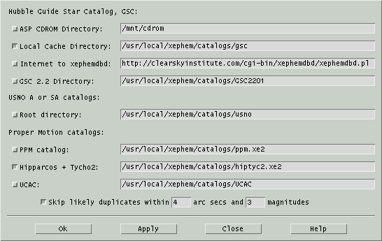This window allows you to control
which
field star
sources you wish to use. The window is accessible from the Main window
as well as from the Control menus of most graphical views.
XEphem uses the term "field star" to refer to the huge numbers of faint
stars visible in any real world view of the sky. Field stars are
generally far more numerous than could be reasonably accommodated in
the XEphem *.edb database format. For this reason they are stored and
made available in their own special compact forms for utmost
efficiency. The downside to this approach is that field stars are not
included in the totals presented by the Data » Files window nor
are they available for searching or inspection using the Data » Index window.
This results in little loss of generality, however, since (once
found!) they may be assigned to the user Favorites.
The controls in the Field Stars setup window are grouped into
categories, depending on the basic source of the stars, as follows:
7.5.1 Hubble GSC
The Hubble Guide Star Catalog is a seminal work created by the Space
Telescope Science Institute to support the Hubble Space telescope. It
contains from 13 million unique stars, or about 300 stars per square
degree of sky.
ASP CDROM Directory
This choice enables reading field stars
from the Hubble Guide Star Catalog made available some years ago
on two CDROMs published by the Astronomical Society of the
Pacific. Mount a CDROM somewhere onto your filesystem, type the
name of the mount directory in the text field provided then turn
this option on and press Apply. Note that XEphem assumes your CDROM
driver removes the trailing ";1" from all filenames.
Local Cache Directory
This choice enables reading GSC field
stars from your local disk. If this option is on along with the
CDROM option, then as requests are satisfied from the CDROM a
compact form of the same data will be written to files below the
directory named in this option. Then the next time the same field stars
are needed, and this option is on, they will be obtained from the
local disk files rather than the CDROM. In fact, the CDROM is not
needed
or used if the local disk contains all the stars for any given
access. The entire 2 CDROM set loads onto disk in this format in
some 180 MB. The default path of the directory which holds the
disk version is "catalogs/gsc" off the Shared directory. Note:
There is also a utility in the tools/gsc directory, gscload, with
which you may preload any entire CDROM segment at once if desired.
These files are already included in te commercial version of
XEphem.
Internet to xephemdbd
This choice is to use the Internet to
access an XEphem GSC server. To use this source, select this
option and type the URL to the remote xephemdbd.pl in the text
field provided.
GSC 2.2 Directory
This choice enables using a local copy
of the GSC 2.2.0.1 catalog in xe3 format. This catalog only contains
stars between magnitude 10 and 18.5, so it must be used in conjunction
with
an additional catalog for completeness. The Hipparcos catalog is an
ideal companion and is automatically chosen as a convenience.
7.5.2 USNO A or SA catalogs
Root directory
This choice of field stars supports the SA and the A series of
astrometric catalogs produced in recent years by the US Naval
Observatory. The SA2.0 for example, includes some 54 million stars,
spatially sampled so there is about 1,300 stars per square degree of
sky. Note that such a uniform distribution does not "look" much like
the real sky, but it is great for its intended use as an astrometric
mesh for comet hunters or such. To order these catalogs, see
http://psyche.usno.navy.mil/pmm.
If you have such a catalog, simply enter the name of its base directory
and toggle this switch on. The default assumes a symbolic link,
"catalogs/usno" off the shared directory. The suggested citation for
SA1.0 follows:
Monet, D., Bird, A., Canzian, B.,
Harris, H., Reid, N., Rhodes, A., Sell, S., Ables, H., Dahn, C.,
Guetter, H., Henden, A., Leggett, S., Levison, H., Luginbuhl, C.,
Martini, J., Monet, A., Pier, J., Riepe, B., Stone, R., Vrba, F.,
Walker, R. 1996, USNO-SA1.0, (U.S. Naval Observatory, Washington
DC).
This catalog has been included with permission of USNO as long as
we mention the following stipulations:
It may not be the latest version,
check
with http://ad.usno.navy.mil.
If you paid for XEphem, you paid for
the software, not this catalog. The catalog is available free from
the USNO.
Inclusion of the SA2.0 catalog does
not
imply an endorsement of XEphem by USNO; nor did I have privileged
access to the catalog; nor does the US Government affirm or
guarantee that XEphem works properly in any way.
7.5.3 Proper Motion catalogs
These large catalogs include information regarding proper motion.
Two such catalogs are currently available ready for XEphem. You may
only use one at a time, by choosing the corresponding toggle
PPM catalog
This is the Positions and Proper Motion
catalog of S. Roeser and U. Bastian, Astronomisches
Rechen-Institut, Heidelberg, published in 1990. The PPM includes
468,586 stars rather evenly distributed throughout both
hemispheres. This averages out to more than 10 stars per square
degree. The set here includes the original North and South
editions plus the extended supplement. The set includes more than
99% of the stars in the original SAO catalog and some 70% of the
Henry Draper Catalogue (HD). While the SAO catalog is more or less
complete to V=9, with stars as faint as V=10, the PPM catalog is
fairly complete to V=9.5, and goes somewhat deeper than V=10.
Hipparcos and Tycho-2
This catalog is a combination of the
Hipparcos and the Tycho-2 astrometric catalogs published by the
European Space Agency. This catalog contains all Hipparcos stars
for which astrometric and magnitude values are assigned, and all
additional non-redundant entries from the Tycho-2 catalog except
multiple-component entries. There is a total of some 2.5 million
stars, or about 60 stars per square degree. One example of a star with
high proper motion is Groombridge 1830 (HD 103095), in Ursa Major,
near 11h53m 37d44m. For a nice discussion see Burnham's Celestial
Handbook, Volume III, page 1978. By comparing its position in either
PM catalog with the same entry from the GSC one can deduce this
particular GSC field was evidently taken in early 1983.
UCAC
This choice allows using the USNO Astrographic catalog with XEphem. For
more information on this catalog please refer to
here.
As of release UCAC4, the directory specified must be that which contains
the u4b and u4i directories. In turn, u4b must contain all 900 z files and
u4i must contain u4index.unf and u4hpm.dat.
7.5.4 Skip likely duplicates
All of the above may be used together with the regular database
facility of XEphem. If this option is on, XEphem eliminates what
appears to be redundant entries for the same star from the various
catalogs. Two stars are considered the same if their positions match
within the given number of arcseconds and their brightnesses differ by
less than the given number of magnitudes. (The generous default
magnitude tolerance is because the GSC and the PPM use varying
filters).
When deciding on the final selection for such duplicate entries the
highest priority is the local database, then the HD or SAO entry,
then the PPM entry, then Hipparcos, then Tycho and finally the GSC
entry.When you have made the desired entries, pressing Apply will attempt to check each
filename, directory and Internet choice, as appropriate. The cursor
will be a Watch while the tests are in progress. If something does not
seem correct, a warning window will appear and the option will be
turned back off. If everything seems to be operating correctly, you
are in business. The Ok button
does the same thing but then also closes the window if they all
succeed.
7.5.5 Notes
If at any time something goes wrong during the acquisition of any
Field Stars from any View, the responsible option in that view is also
turned off automatically. The problem should be corrected and Field
stars turned on again.
All field star sources will silently enforce limits on the total number
of stars they yield for any query. As of this writing, local queries
except USNO are limited to 30 degrees; USNO are limited to 15 degrees;
network queries impose various limits.
8.0 Preferences
The simple choice preferences are covered in the Main Window section.
See Preferences menu,
8.1
Fonts

This
window lets you change most of the fonts used by XEphem. The basic
technique is to specify a font, use the four toggle buttons to choose
which action to take then perform the action in a particular font
context by clicking in the menus accessed from the menubar across the
top.
To browse the available fonts, type a pattern in the field provided and
click Search. This will
display
the names of all fonts matching a pattern. To see all available fonts,
use the wild card pattern of a single star (*). To be more specific,
specify the fields desired and fill the gaps between with the star
wildcard. See the next section for a description of each field.
Clicking a font in the top list will display a sample and its full name
in the region at the bottom.
The Buttons, Text and Other menus in the menu bar across
the top provide ways of referring to several font contexts. The four
toggle buttons just below the menu bar determines what happens when one
of these context menu buttons is clicked, as follows:
Get current
When this toggle is active, clicking a
context menu button will cause the name of the current font for that
context to be displayed in the pattern field and history list.
Get default
When this toggle is active, clicking a
context menu button will cause the name of the last saved default
font for that context to be displayed in the pattern field and
history list.
Set
When this toggle is active, clicking a
context menu button will cause the font named in the pattern field
of this window to be applied to that context throughout XEphem.
Restore default
When this toggle is active, clicking a
context menu button will cause its last saved font value to be
reinstated through XEphem.
Fonts that have been changed from their default values are tagged in
the Preferences » Save
window (when opened or after you do a Refresh). This allows you to Save
the new fonts set here permanently. If you do not Save it, the change
only effects XEphem until you exit.
There are a few situations scattered around within XEphem for which
changing fonts at runtime from this window does not work perfectly.
For example, changing to a smaller font does not shrink some windows
as much as you might expect. Such anomalies are known challenges and
do not indicate serious problems. After Saving the fonts and
restarting XEphem, all will work again as expected.
8.1.1 XLFD
The font names are in the format called X Logical Font Description.
There are 15 fields separated by hyphens. The fields are as follows:
- Foundry
The organization that digitized the font data.
Family
- The commercial name of the font.
Weight
- The relative weight of the font, such as bold, medium or regular.
Slant
- A code indicating the slant:
r Roman (no slant)
i Italic (slant left)
o Oblique (slant left)
Set Width
- The width with respect to what the foundry considered normal.
Choices include normal, condensed, narrow, double.
Additional Style
- Anything else needed to uniquely identify the font, such as sans
or serif.
Pixel Size
- The height of an em in
pixels.
Point Size
- The height of an em in
tenths of a point, where one point is 1/72 inch.
Horizontal Resolution
Vertical Resolutoin
- The resolution of the device for which the font was designed, in
pixels-per-inch.
Spacing
- A code indicating the spacing between characters in the font:
M Monospaced (fixed pitch)
P Proportional spaced (variable pitch)
C Character cell (each character occupies the same size box)
Average Width
- Average width of all characters in the font, measured in tenths
of
a pixel.
Registry
Enoding
- The registration authority and their name for the character set
from which the characters in the font are drawn. For example ISO8859-1,
also known as Latin-1.
Scalable fonts are indicated by 0 for point size, pixel size, x and y
resolution and average width (fields 7, 8, 9, 10 and 12). To choose a
specific scalable font, specify desired values for some but not all of
these fields, letting the system fill in the others.
8.2
Colors
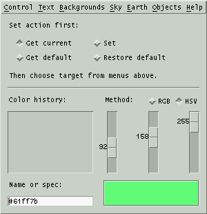This window lets you change most of the
colors used by XEphem. The basic technique is to use the four toggle
buttons to choose which action to take then perform the action in a
particular color context by clicking in the menus accessed from the
menubar across the top.
The possible actions are as follows:
Get current
When this toggle is active, clicking a
color context menu button will cause the current color for that
context to be displayed in the color patch in the lower right corner
of this window.
Get default
When this toggle is active, clicking a
color context menu button will cause the last saved default color
for that context to be displayed in the color patch in the lower
right corner of this window.
Set
When this toggle is active, clicking a
color context menu button will cause the color currently being
displayed in the color patch of this window to be applied to that
context throughout in XEphem.
Restore default
When this toggle is active, clicking a
color context menu button will cause its last saved color to be
reinstated.
Above the color patch are three sliding scales that allow you to define
a color using either Red+Green+Blue or Hue+Saturation+Value, depending
on the toggle. Each scale ranges from 0 through 255. Hue is the basic
spectral color, where 0 is red, 85 is green, 170 is blue. Saturation
is the amount of color purity, where lower values mix in more white.
Value is like brightness, where 0 is totally black.
The text field at lower left allows you to type a color using one of
the standard descriptive names, such as "steel blue", or in hex RGB
notation, for example #ff0000 for pure red, #00ff00 for pure green
#0000ff for pure blue. After typing the desired value, press Enter to
set the scales and see the color in the patch. This field is also set
automatically when the scales are used to set a color, during Grabbing
(see next), and when a color context is retrieved.
The history list in the lower left stores each color name that is used
from the name field, making it easier to reuse a color. Selecting a
name
will copy it to the name field and show it in the color patch. You can
select history entries with the mouse, or by browsing with the Up and
Down keyboard arrow keys.
8.2.1 Colors Control menu
Night
mode
This changes the XEphem background to
black, and uses the Night vision color for all text. Clicking this
back off will restore the previous colors. Note that when Night vision
is on, you may not change the colors it effects. This is to eliminate
confusion with regards to whether or not they are new in the Save
window.
Grab
color
Press this button and the cursor will
change to a crosshair. Move the cursor around on the screen and the
color of the pixel under the crosshair will be displayed; press
Button1 to capture the color and resume normal cursor operation.
Clear
history
Erases all entries in the History list.
When a color context is changed, it also changes the corresponding
resource. In the Preferences
» Save window you will notice that the resource becomes
marked as Modified (when opened or after you do a Refresh). This
allows you to Save the new color choice permanently. If you do not
Save it, the change only effects XEphem until you exit.
8.2.2 Star colors
XEphem assigns colors to stars based on their spectral classification.
The default colors were chosen based on work done by Mitchell Charity.
The colors are specified using X Resources. The resource names each
begin with "XEphem.starSpect" followed by one or two characters. The
value of the resource is the color. The following table shows the
default spectral color resources built into XEphem:
XEphem Resource Name
|
Default Color Value
|
| XEphem.starSpectO |
#9bb0ff |
| XEphem.starSpectB |
#aabfff |
| XEphem.starSpectA |
#cad7ff |
| XEphem.starSpectF |
#f8f7ff |
| XEphem.starSpectG |
#fff4ea |
| XEphem.starSpectK |
#ffd2a1 |
| XEphem.starSpectM |
#ffcc6f |
| XEphem.starSpectN |
#ff8f2c |
| XEphem.starSpectS |
#ffc574 |
| XEphem.starSpectC |
#ff9e40 |
| XEphem.starSpectT |
#ffd19a |
| XEphem.starSpectW |
#c4c4ff |
XEphem uses the closest entry with matching first character. If no
entry is found with matching first character then white is used and a
message is added to the System log. The
spectral color resource values may be edited or additional resources
can
be added but this must be done by hand, there is no GUI support
available. Always edit the XEphem resource file while XEphem is not running to avoid any chance of
conflict.
8.3 Save
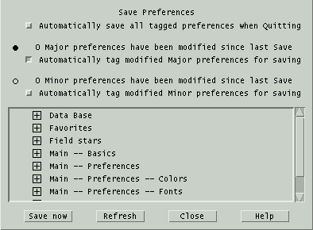This window displays all of the
options,
settings and controls, collectively called Preferences, throughout
XEphem that may be saved and
reinstated next time the program is started. XEphem has many such
preferences, so
they are separated into categories in this window for easier
management. Each category may be expanded or collapsed using the
+/- toggle square to show each individual preference.
Preferences are saved using the standard Resource mechanism provided by
the X Window System. These resources are saved in the file XEphem
located in the Private directory.
Each preference may be tagged for saving. The toggle at the top
controls whether all tagged preferences will be Autoatically saved
when XEphem is Quit.
Preferences have been divided into two classes.
Major: In the opinion of the author these
preferences are sufficiently interesting that they are likely to be
worth saving and automatically restoring between one invocation of
XEphem and the next.
Minor: Everything else, presumably less critical in nature. It
is expected that you are likely to
change these preferences frequently in due course while operating
XEphem yet they do not cause major effects on program behavior so
saving them at
any one particular setting is not especially compelling. Minor
preferences are things like window size and position, scale settings
which
only effect views, and all of the Sky View Filter and Option settings.
This distinction is of course rather arbitrary so please take
care when changing and saving preferences so the ones you want are
saved.
The number of preferences in each class currently tagged
for saving is indicated by messages near the top.
The scrolled area can display each preference, whether it is tagged for
saving and the ability to change whether it is tagged. Each category of
preference can be expanded for more detail using the +/- toggle square.
In the expanded view, each preference and its value are
shown exactly
as it will appear in the disk file if Saved. Those preferences
which differ from the last time they were Saved, or since XEphem was
started if no Save has yet occurred, are marked with a bullet. Major
preferences are marked with a solid bullet, Minor preferences with an
hollow
bullet. A toggle next to each preference allows individual selection
over whether the preference will be written to disk on the next Save.
After each Refresh, the toggles are set for those preferences found to
have changed since the last Save if their class is set to be
automatically tagged. Each toggle may be changed manually in either
direction to override this automatic behavior on an individual basis
if desired but not these will be overridden with the next Refresh.
In the collapsed view, if at least one Major preference is out of date
in a category, a solid bullet is placed next to the category heading;
otherwise if at least one Minor preference is out of date a hollow
bullet is used.
Note that the information in this window does not
automatically track changes in preferences as XEphem is used. You must
use Refresh to update the status manually when desired. In particular,
the values which are Saved are what they were the last time Refresh
was performed, not what they actually are at the moment Save is
activated.
Save now
Write each tagged preference to disk to
the XEphem resource file.
If the file already exists, it will first be copied to XEphem.bak in
the same directory. If a preference already exists in the file it will
be
edited in-place, otherwise a new entry is added at the bottom. Other
lines in the file are left unchanged. After using Save, all preferences
will be considered up to date, even if they were not selected to be
written to the preference file.
N.B. The values saved are as they
appear in this window, which may be different from their current
value if they have changed since the last Refresh.
Refresh
Update the changed and save status of
each preference. This refresh action also
happens automatically after a Save is performed and just before
XEphem quits when deciding which preferences to save if the Automatic
saving option is enabled.
9.0 Multifunction Tools
The tools in this section are used in several different places
throughout XEphem. The descriptions here are generic. If there are any
special issues when used in certain contexts they will be described in
the appropriate sections elsewhere.
9.1 Trails
 This
window allows you to define a set of time values spaced at regular
intervals before and after the current XEphem time and define which
and in what manner values will be annotated with a time stamp.
This
window allows you to define a set of time values spaced at regular
intervals before and after the current XEphem time and define which
and in what manner values will be annotated with a time stamp.
This is a general purpose facility used in several places throughout
XEphem, generally for the purpose of establishing a trail of object
motion. This description will be of a general nature.
Six format parameters must be specified:
Orientation
This choice determines where the
stamps
appear in relation to their corresponding position mark. The first
several options should be self-explanatory. The last two, Path-left and
Path-right, cause the time stamps
to be placed to the left or right side of the trail path, as one would
perceive these directions when traversed in forward time order. In
no case are the time stamps ever drawn to require you to turn your
head more than 90 degrees left or right.
Interval
This is the time interval between each
step. Choose from among several predefined intervals or choose Custom
and enter any desired interval
in the space provided. It is okay to specify more than 24 hours to
achieve intervals of several days. It is also okay to specify negative
values to run time backwards.
Label
This choice determines which intervals
will to be labeled with a time stamp. Choose from among several
options or choose None if no labeling
is desired. Times will be printed surrounded by parentheses if the
object is an Earth satellite and it is eclipsed.
Format
This choice determines the format in
which to display
each time-stamp. Choose Hour:Minute
with or without Seconds or the date formatted as per the
Preferences » Date formats
option in the Main menubar, see
Preferences.
Font
This choice sets the size of the
annotation text font.
Start
This choice specifies how the first
time value is derived from the current XEphem time. The lower right
radio box offers several methods of determining the beginning of the
first time interval. The idea here is generally to match the time
values of each time mark with the precision implied by the format, but
to allow other options for special situations.
Whole min rounds the current
XEphem time forward to the next whole minute, if necessary;
Whole day rounds to the next
whole day.
Whole interval rounds to the
next whole multiple of whatever time interval is set (as specified
in the Intervals choices).
Now means to begin with the
current XEphem time without any initial changes.
Two scales near the bottom specify the number of tick marks to create
before and after the starting time.
Once the choices are set up as desired, Ok will create the trail and the
window will disappear. Apply
will create the trail but the window will remain up for further use. Close just dismisses the window
without creating a trail.
Even with all this flexibility pleasingly annotated trails are not
trivial to generate. It is hoped that a little experimentation can
yield acceptable results in most cases. Note that this general trail
facility does not provide close coupling with the view being
supported. For example, some views do not support setting a trail for
an object which has changed while the Trail Setup is up. Also, views
may vary in their support of having trails defined while they are not
visible. Each view may establish its own initial default values but
changes usually remain in effect for subsequent instances of Trail
Setup windows from the same view. Some views permit more than one
Trail Setup to be active at one time. In short, the operational
boundary conditions vary by view.
The settings for each view context may be saved using
Preferences » Save.
9.2 Printing
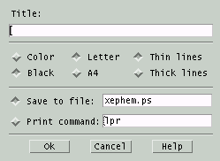This
window lets you print the current view or save it to a file. In either
case the format used is Postscript.
Title
If you enter a string in the text
field
labeled Title, the string will be printed centered across the top of
the page.
Color
Black
The top left pair of toggle buttons
allow you to choose whether color commands will be included in the
Postscript generated.
Letter
A4
The center pair offer the choice of US
Letter size 8½x11" with ¾" margin or ISO A4 210x297mm
with 15mm margin.
Thin lines
Thick lines
The right pair offer the choice of
drawing with very thin lines or somewhat thicker lines.
Save to file
If you choose to Save to a file, turn
on that toggle button and enter the desired file name in the text
box to the right of the toggle button. Unless begun with a / the
file name is in the
Private directory.
Print command
If you choose to print directly to the
printer, turn on that toggle button and enter a command which will
print a Postscript file on your system. The command should expect
the name of a file to print as its first and only argument. A
temporary file will automatically be created for this command and
deleted when printing is completed. You can also enter a command
here that will display the file, such as gv to preview the file then
and print from there.
When ready, click Ok. To avoid
printing, press Cancel. If
your
current viewing fonts are not available for printing, error recovery
will depend upon your local print system.
9.3 Annotation
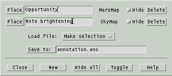This window allows you to add your own text
and lines to any graphical
view. Annotation locations are saved in the world coordinates of the
view. For example, in the Earth view they are saved in Lat and Long. In
the Sky View, they are saved in the current display mode, that is,
either RA/Dec or Alt/Az. The window shows which view each annotation
refers to.
You may Save the current set of annotations to the specified
file or Load a set by selecting from the files presented in the
pop-down menu. Annotation files use the suffix .ano. XEphem tries to
automatically load the file specified in the Save field when it starts.
This
file name can be saved in the Preferences » Save window in
the Annotation section.
To add a new annotation entry:
- click New to create a blank entry,
- type in the desired text,
- click Place to begin the placement procedure,
- move the cursor to position the text where desired,
- click and hold to anchor the text and begin drawing a line,
- move the pencil cursor to position the far end of the line as
desired,
- release.
To move an existing entry, click Place
again and proceed as above with step 4.
To draw just a line with no text, leave the text field blank.
To place text with no line, immediately release after anchoring the
text.
To change just the text of an existing entry, edit the text and type
Enter.
To temporarily hide one entry, click Hide on its line. To hide
all entries click Hide all, to toggle which entries are hidden
click Toggle.
To delete an entry, click Delete.
10.0 Credits
The following are in no particular order but all are greatly
appreciated:
Thanks to Lutz Mandle for restoring SOHO support in 2012; showing sun in
moonview; proxy support in web downloads; improved horizon clipping and
correct use of Sky View options in individual planetary views.
Enormous advances in data quality were
contributed by the late Guillermo Andrade Velasco.
The Blue Marble project at
http://earthobservatory.nasa.gov/Newsroom/BlueMarble
for their
wonderful
whole-earth color images.
Corrections for ecliptic longitude from Adrian Robinson, adrianprobinson@yahoo.co.uk
The stellar spectra colors are based on work by Mitchell Charity,
mcharity@lcs.mit.edu, at
http://www.vendian.org/mncharity/dir3/starcolor.
Thanks to Paul Schlyter for some improved anomaly code.
Dean Huxley contributed improved constellation figures and improved
the Tycho Hipparcos data base.
Thanks to Thomas Conze, thomas.conze@gmx.net, for several great
patches.
Thanks to Matei Conovici, cmatei@profis.ro, for making Sky View's "live
report" option a saveable preference.
Several nice tweaks and some thorough debugging from John O'Donnell,
jmodonnell@earthlink.net.
Thanks to Jean-loup Gailly and Mark Adler for zlib.
Thanks to Eric S. Raymond for his fine implementation of base64.
Milky Way contour by Pertti Paakkonen, ppaakko@cc.joensuu.fi, in
turn
based on map from http://www.ebicom.net/~rsf1/fun/sm-new.htm copyright
(c)
1972,2001, R.S. Fritzius, may be reproduced for non-commercial purpose.
The local magnetic declination model is from the DoD World Magnetic
Model as published at http://www.ngdc.noaa.gov/seg/potfld/DoDWMM.shtml
Thanks to Fridger Schrempp, fridger.schrempp@desy.de, for his long
term encouragement of the project, and particularly for many
suggestions
to improve ease of use.
Thanks to Wolfgang Steinicke of www.ngcic.org for allowing use of
his corrected NGC and IC catalogs.
Earth satellite orbit propagation is based on the NORAD SGP4/SDP4
code, as converted from FORTRAN to C by Magnus Backstrom,
b@eta.chalmers.se. See "Spacetrack Report Number 3: Models for
Propagation of NORAD Element Sets" at
http://www.celestrak.com/NORAD/documentation/spacetrk.pdf
Improvements to Delta T code, help and wording contributed by Neal
McBurnett, nealmcb@bell-labs.com.
Any parts of the USNO SA2.0 catalog that are included with XEphem
distributions are done so with the following understandings:
It may not be the latest version, check with http://ad.usno.navy.mil
If you paid for XEphem, you paid for the software, not this
catalog. The catalog is available free from the USNO.
Inclusion of the SA2.0 catalog does not imply an endorsement of
XEphem by USNO; nor did I have privileged access to the catalog; nor
does the US Government affirm or guarantee that XEphem works
properly in any way.
Thanks to Atsuo Ohki, ohki@gssm.otsuka.tsukuba.ac.jp, for numerous
fixes and features.
Thanks to Robert Lane, roblane@alum.mit.edu, for Uranonmetria 2000
work.
Martian relief map completed June 2000 using data from Mars Orbiter
Laser
Altimeter on board the Mars Global Surveyor, operated by the Jet
Propulsion
Laboratory, NASA.
See http://marsprogram.jpl.nasa.gov/mgs
The near real-time weather map in the Earth view is provided by
the Space Science and Engineering Center at the University of
Wisconsin.
See their web site at http://www.ssec.wisc.edu/ssec.html
The XEphem logo was contributed by Jonathan Adams,
jfadams@mail.arc.nasa.gov. The galaxy background image is from Galaxy
Photography, www.galaxyphoto.com.
For the years 1999-2010 the natural satellite ephemerides for Mars,
Jupiter, Saturn and Uranus are based on developments in mixed
functions computed and contributed at Bureau Des Longitudes,
http://www.bdl.fr
by J.-E. Arlot, Ch. Ruatti and W. Thuillot. Many
thanks!
Outside this range, Jupiter's moons based on information in
"Astronomical Formulae for Calculators" by Jean Meeus. Richmond, Va.,
U.S.A., Willmann-Bell, (c) 1982. Saturn's moons based on code and
ideas supplied by Dan Bruton, Texas A&M, astro@sfasu.edu. For all
dates, ring tilts based on "RINGS OF SATURN" program by Olson, et al,
Sky & Telescope, May 1995, page 95. C code as converted from BASIC
by pmartz@dsd.es.com (Paul Martz).
Thanks to Monty Brandenberg, mcbinc@world.std.com, for his
assistance and solution to the unaligned access messages on Digital
UNIX.
Thanks to Christophe Magneville, cmv@hep.saclay.cea.fr, for finding
an array subscript and a numeric overflow problem in libastro.
Thanks to Jean-Etienne Lamiaud for a fix to
prevent gif color tables from hogging more than their share of X
colormap entries, many corrections to xephem_sites, and a nice speedup
to
Sky View depth sorting.
Thanks to Egil Kvaleberg, egil@kvaleberg.no, for key idea on how to
support 8 bit FITS images.
Thanks to Stuart Levy, slevy@ncsa.uiuc.edu, for his work converting
the Tycho ESA mission database
adc.gsfc.nasa.gov:/pub/adc/archives/catalogs/1/1239 into xe format.
Images of Saturn from STScI.
Many formulas and tables are based, with permission, on material
found in: "Astronomy with your Personal Computer" by Dr. Peter
Duffett-Smith, Cambridge University Press, (c) 1985.
The high precision planet positions were implemented for XEphem by
Michael Sternberg <sternberg@physik.tu-chemnitz.de> based on the
papers
- "Planetary Theories in rectangular and spherical variables:
VSOP87 solution" by Bretagnon P., Francou G., in Astron. Astrophys.
202, 309 (1988), ftp://ftp.bdl.fr/pub/ephem/planets/vsop87/, and
- "Representation of planetary ephemerides by frequency analysis.
Application to the five outer planets" by Chapront J., Astron.
Astrophys. Suppl. Ser. 109, 181 (1995), ftp://adc.gsfc.nasa.gov/\
pub/adc/archives/journal_tables/A+AS/109/181.
See the comments in chap25.h and vsop87.h for accuracy estimates.
The high precision Moon code was also implemented for XEphem by
Mr. Sternberg based on code supplied by Stephen L. Moshier
<moshier@world.std.com> at
ftp://ftp.std.com/pub/astronomy/selenog.zip. Mr. Sternberg also
incorporated the algorithm for deltaT, based on code also provided by
Mr. Moshier. See the comments in deltat.c for full references. My
greatest thanks to Messrs. Sternberg and Moshier for their generous
and kind assistance in making XEphem a program of first-class accuracy.
The improved lunar libration trig series fit to JPL DE403 was
provided by Stephen L. Moshier, <moshier@world.std.com>.
Many thanks to Michael Naumann, Michael.Naumann@eso.org, and Miguel
Albrecht, malbrech@eso.org, at ESO and Tim Kimball, archive@stsci.edu,
at STScI for their help and support accessing the DSS at their
institutions. And thanks to ESO and STScI in general for offering this
service at all.
Thanks to Seiichi Yoshida, seiichi@muraoka.info.waseda.ac.jp, for
a subtle fix to the constellation code in 3.1.
The sample spacecraft elements were furnished by Ron Baalke,
baalke@jpl.nasa.gov.
Thanks to Vance Haemmerle, vance@toyvax.Tucson.AZ.US, for his
updated and appended lists of spacecraft elements, and work on
improvements to the solar system plotting of long-period trail
sequences.
Thanks to Jeroen Valkonet (jeroenv@cvi.ns.nl) for planting the seed
which grew into the new bitmap clipmask approach of drawing the stars.
Thanks to Jim Bell, jimbo@cuspif.tn.cornell.edu, and the team at
Mars Watch for encourage, support and ideas for the first Mars albedo
map in XEphem. The map as of Version 3.3 is from
http://maps.jpl.nasa.gov/mars.html
Thanks to Dimitromanolakis Apostolos <apdim@grecian.net> for
his contribution leading to support for fetching DSS in gzipped form.
Thanks to Miguel Albrecht, malbrech@serv2.hq.eso.org, at ESO for
his assistance and support of their fine Web access facilities to the
GSC.
Rotated trail text uses the xvertext package. Here is the copyright:
xvertext 5.0, Copyright (c) 1993 Alan Richardson
(mppa3@uk.ac.sussex.syma)
Permission to use, copy, modify, and distribute this software
and its documentation for any purpose and without fee is hereby
granted, provided that the above copyright notice appear in all
copies and that both the copyright notice and this permission notice
appear in supporting documentation. All work developed as a
consequence of the use of this program should duly acknowledge such
use. No representations are made about the suitability of this
software for any purpose. It is provided "as is" without express or
implied warranty.
IC.edb was submitted by Christos Siopis, siopis@astro.ufl.edu.
Constellation algorithm is from a paper by Nancy G. Roman,
"Identification of a constellation from a position", Publications of
the Astronomical Society of the Pacific, Vol. 99, p. 695-699, July
1987. Before 3.6 the figures were the work of Chris Marriot. The list
of
boundaries is derived from the three files constell.1875.data,
constell.1875.hdr and constell.doc at
ftp://explorer.arc.nasa.gov/pub/SPACE/FAQ/.
The WCS solver algorithm technique was inspired by a paper by Frank
Valdes in PASP, vol 107, page 1119 (1995).
New version of Gemini constellation by Lutz Maendle,
lmaendle@csi.com.
Thanks to Dr. Harald Fischer (fischer@vs-ulm.dasa.de) for the GPS
awk routine and sample position database.
The high-precision precession routine is from 1989 Astronomical
Almanac, as interpreted by Craig Counterman. Mr. Counterman also
deserves the credit for providing the initial encouragement to write
an astronomical tool specifically for X Windows back in 1990, and for
significant assistance while developing the heliocentric models.
The Earth map is derived from data supplied with xearth which
included the following notice:
Copyright (C) 1989, 1990, 1993, 1994 Kirk Lauritz Johnson
Permission to use, copy, modify, distribute, and sell this
software and its documentation for any purpose is hereby granted
without fee, provided that the above copyright notice appear in all
copies and that both that copyright notice and this permission
notice appear in supporting documentation. The author makes no
representations about the suitability of this software for any
purpose. It is provided "as is" without express or implied warranty.
THE AUTHOR DISCLAIMS ALL WARRANTIES WITH REGARD TO THIS SOFTWARE,
INCLUDING ALL IMPLIED WARRANTIES OF MERCHANTABILITY AND FITNESS, IN
NO EVENT SHALL THE AUTHOR BE LIABLE FOR ANY SPECIAL, INDIRECT OR
CONSEQUENTIAL DAMAGES OR ANY DAMAGES WHATSOEVER RESULTING FROM LOSS
OF USE, DATA OR PROFITS, WHETHER IN AN ACTION OF CONTRACT,
NEGLIGENCE OR OTHER TORTIOUS ACTION, ARISING OUT OF OR IN CONNECTION
WITH THE USE OR PERFORMANCE OF THIS SOFTWARE.
The Earth shaded elevation relief map shipped with XEphem 3.6 is
from the
National Geophysical
Data Center. The one with 3.7.6 is from
http://www.shadedrelief.com/world_relief/download.html
The pulsar and Radio databases are based on lists supplied by Robert
Payne, rpayne@nrao.edu. Errors in converting to XEphem are mine.
The lunar image is based on one I found surfing at:
ftp://seds.lpl.arizona.edu /pub/images/planets/moon/fullmoon.gif. The
calculations for the longitude of the terminator and the solar
altitude are based on the program colong.bas by David Bruning and
Richard Talcott, published in _Astronomy_, October 1995, page 76.
Thanks to Richard Clark (rclark@lpl.arizona.edu) for an improved
version of anomaly.c.
A great source of comet information is http://encke.jpl.nasa.gov
Special thanks to Uwe Bonnes, bon@LTE.E-TECHNIK.uni-erlangen.de,
and Ralphe Neill, ran@rdt.monash.edu.au, for their many ideas and
support.
Many test cases were gleaned from the pages of Sky and Telescope,
(C) Sky Publishing Corp.
Many of the sample cities in the "xephem_sites" file are from the
xsat program, which included the following notice:
Copyright 1992 by David A. Curry
Permission to use, copy, modify, distribute, and sell this
software and its documentation for any purpose is hereby granted
without fee, provided that the above copyright notice appear in all
copies and that both that copyright notice and this permission
notice appear in supporting documentation. The author makes no
representations about the suitability of this software for any
purpose. It is provided "as is" without express or implied warranty.
Most of the sample observatories in the "xephem_sites" file are
transcribed, with permission, from the table beginning on page 28 in
the July 1993 issue of Sky and Telescope. Any errors in transcription
are strictly my own.
Thanks to Lowell Observatory and the Minor Planet Center for
maintaining their huge lists of asteroids. See
ftp://ftp.lowell.edu/pub/elgb/astorb.html
and
http://cfa-www.harvard.edu/cfa/ps/mpc.html
, respectively.
Thanks to the National Space Science Data Center and the Smithsonian
Astrophysical Observatory for the SAO star catalogue.
Thanks to the members of the Saguaro Astronomy Club for the
preparation and free distribution of their deep-sky database. Any
errors
in conversion to the .edb format are strictly mine.
Thanks to Chris Beecroft <aldebaransys@home.com> for his
encouragement and technical assistance in adding postscript. The
limited
results in no way reflect on his capabilities. Initial encouragement
was
also received from Frank M. Siegert
<frank@miranda.tue.schwaben.de>. And thanks to everyone who has
asked for printing over the years -- I now admit that I like it too!
Bright stars are based on the 5th Revised edition of the Yale Bright
Star Catalog, 1991, from
ftp://adc.gsfc.nasa.gov/pub/adc/archives/catalogs/5/5050. Common names
supplied by Robert Tidd (inp@violet.berkeley.edu) and Alan Paeth
(awpaeth@watcgl.waterloo.edu). Any errors in conversion to the .edb
format are strictly mine.
I wish to thank all the organizations behind the incredible Internet
for its maintenance and free and easy access. I also wish to express
my hope that it retains the spirit of cordial cooperation it fostered
in its formative years.
I learned most of what I know of X Windows and Motif programming
from ICS courses and material found in the various excellent texts
from O'Reilly & Associates, Inc.
Thanks to MIT and the X Consortium for inventing, championing and
maintaining the X Window system, and the various contributing
organizations to the Open Software Foundation for Motif. Their vision
of network-aware graphics is still unmatched.
Similarly, I will be forever indebted to all who contributed to
UNIX. My passion and appreciation for this remarkable operating system
matured while I enjoyed four wonderful years at Kitt Peak National
Observatory (now the National Optical Astronomical Observatory),
Tucson, AZ, in the early 80's. As with X, UNIX plays a central role in
my enjoyment of a career in scientific computing.
It was at KPNO where I met the late Dr. W. Richard Stevens, a fellow
champion of the elegance of the UNIX architecture, life-long friend
and mentor.
Special thanks to all the folks over the years who have provided
innumerable ideas, suggestions and bug reports, both for XEphem and
its ancestor, ephem. A major benefit to writing and distributing these
programs has been the chance to make many friends from around the
world.
Elwood Downey ecdowney@ClearSkyInstitute.com
11.0 Notes
11.1 Horizon
XEphem uses a horizontal plane tangent to the Earth at Elev feet
above sea level as the horizon for all altitude calculations, rise/set
events, etc. Due to Earth's curvature, this is not the same as the
angle up from the local horizon unless the observer is directly on the
ground. The effect can be found from:
sin(a)**2
= (h**2 + 2Rh) / (R+h)**2
where:
R = radius of earth
h = height above ground (same units as R)
a = increase in altitude
The effect is remarkably significant. For example, it is more than
two arc minutes at a height of just 5 feet.
11.2 glob Patterns
Some of the searches in XEphem can be performed using glob patterns.
The term glob refers to a limited form of pattern matching (limited
with respect to the more capable "regular expression") historically
originating in the UNIX shells for the purposes of specifying a
collection of file names. In XEphem the glob patterns are implemented
using the fnmatch() POSIX function. On GNU systems the flag
FNM_CASEFOLD can be used to make the pattern case insensitive. A glob
pattern is a set of normal text characters interspersed with any of the
following special characters known as wildcards:
glob wildcard
|
Meaning
|
?
|
matches exactly one character |
*
|
matches zero or more characters |
[abc]
|
matches any one of the specified characters. A
pair of
characters separated by a hyphen denotes a range expression such that
any character that sorts between those two characters, inclusive,
is matched. If the first character following the [ is a ! or a ^
then any character not enclosed is matched. |
For example, if a list of candidates consists of the following:
abc
aabc
abbc
acc
adc
then the pattern a* matches all; ab* matches abc and abbc; a[ac]*
matches aabc and abbc; a?c matches abc, acc and adc; a[a-c]c matches
abc and acc; a[^a-c]c matches adc; and *b* matches abc, aabc and abbc.
11.3 Accuracy
In the period 1689 through 2247 Jupiter and beyond use CHAPRONT J.,
Astron. Astrophys. Suppl. Ser. 109, 181 (1995), otherwise all planetary
ephemerides except Pluto use VSOP87 from Bretagnon P., Francou G.,
Astron. Astrophys. 202, 309 (1988). Compared with JPL DE200 for
Mercury, Venus and Mars the accuracy of this model rises to 1" at the
ends of the year range 2000 +/- 4000. For Jupiter and Saturn, the 1"
range is 2000 +/- 2000. For Uranus and Neptune, it is 2000 +/- 6000.
Lunar ephemerides are from S. L. Moshier, December, 1996, available
from ftp://ftp.std.com/pub/astronomy/selenog.zip. Compared with JPL
DE404 the accuracy is better than 0.5" for the period -1369 to +2950.
Other heliocentric objects are well within one arc minute at the time
of the epoch of their elements; this steadily worsens with time since
XEphem does not apply perturbations.
Using a GPS position locator and transit, I have independently verified
Sun and Moon limb rise and set times are accurate to within one minute
and azimuths are within about 0.1 degree.
The natural satellite model from BDL used for 1999-2010 is stated as
good to 1/2 arcsecond accuracy. In my tests against JPL DE405 I would
say this is true about 50% of the time, with a worst case of about 4
AS.
11.4 TODO
The following is the current list of future ideas for XEphem. Thanks
to all who have made suggestions. Please let me know your priorities
or suggest more.
- write a tool to find g/k from a set of predicted magnitudes.
- display occultation path between *any* two objects in the Earth
view
- add sidereal day and month trail intervals.
- just label month and year tickmarks in trails when they change
- comet tail pointer
- meteor showers, (dedalus)
- Iridium flares
- option for rise/set info to be Today or Next.
- add "Plot JD as date" to plot display
- use better earth shape model
- add T » F and F » T to Binary
- use user-defined horizon for rise/set calculations
- way to repeat the Solver for more solutions, as in "solver in a
loop"
- expand .edb to capture real variables
- more hot-keys
- month of lunar phases
- Jup and Sat moon timelines and events, ala S&T
- separate Telescope view window
- connect trails with spline not just line segments
- direct connections to Simbad and NED
- plot in polar coords
- automatic initial Go
- topocentric lunations
- individual control over trails in sol system
- provide a means to save and install multiple color+font schemes.
- tool to generate MPC astrometric report
- draggable eyepieces
- text entry fields to allow higher-precision eyepiece size and PA
11.5 Known Bugs
- Preferences » Time Zone does not update dates of FM/NM if
they happen
to squirm.
- length of night wrong when savings time causes dusk after
midnight
- center constellation names based on boundaries rather than on
figures
- solar trails don't account for long-term (10's of years)
precession
- plot's View settings are not Saveable.
- figure out calendar prior to Oct 1752.
- Sky View trails are not always clipped properly against a user-defined
horizon
- The visual magnitudes for all solar system bodies except the
planets do not take into account the phase.
- Changing equinox or geo/topo then update, moon view tables do not
update.
- Time not correct when system set to POSIX time
- Earth satellites are not plotted in Sky View correctly in
geocentric&altaz mode (use geocentric&radec mode).
11.6 History
In 1981 I purchased a genuine IBM PC. Soon I was building a character
oriented program in C for DOS that displayed ephemeris data, packing as
much as possible on the character-based 24x80 display. That program was
called ephem because it was
as much of the
word ephemeris that would fit
in 8 characters and still retain some sensible meaning. I was using
UNIX at work
so
I made sure it would run there too using the curses library. In
1989 I took a course in Motif. By 1990 it seemed to
have won the UNIX desktop wars so I started converting ephem to
Motif+UNIX. The convention for naming X Window System programs was to
add an x prefix so that
program
was named xephem. I have been
diddling with it ever since. The original ephem is still available.